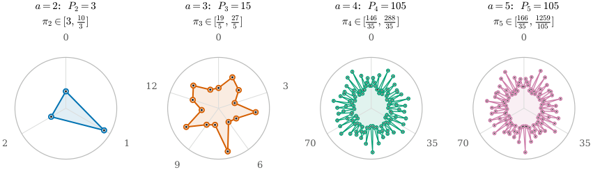
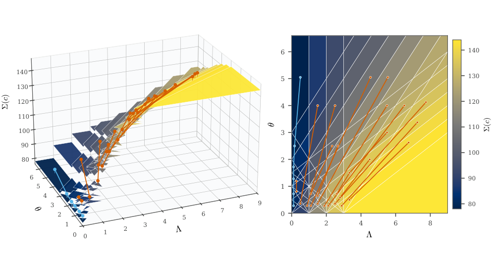
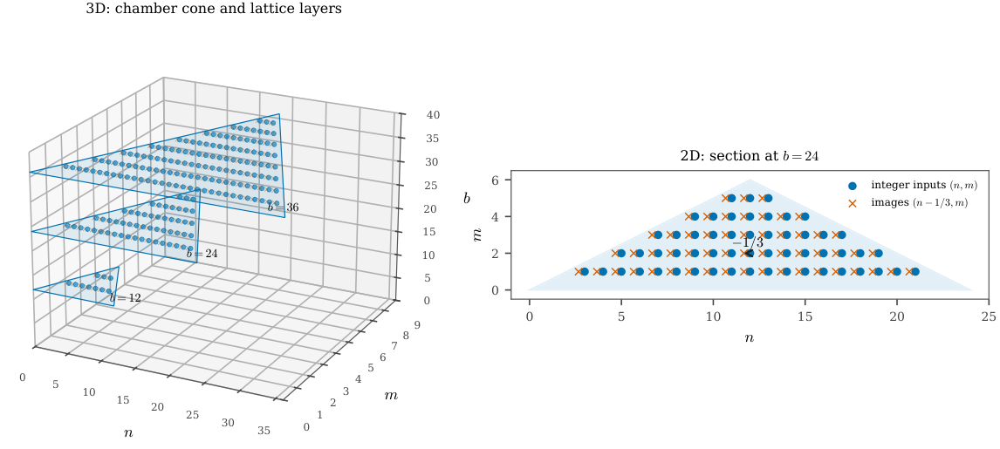
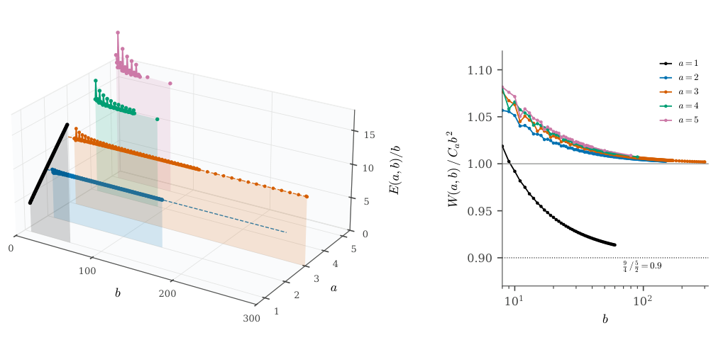
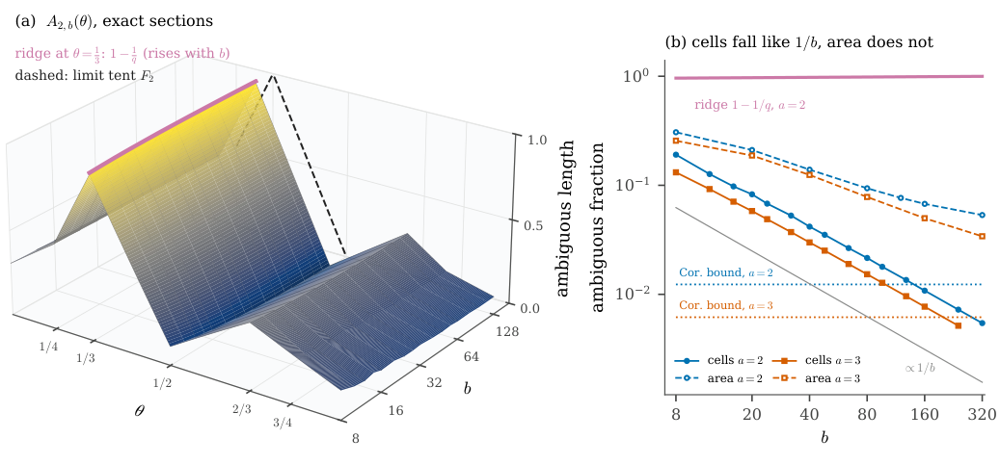
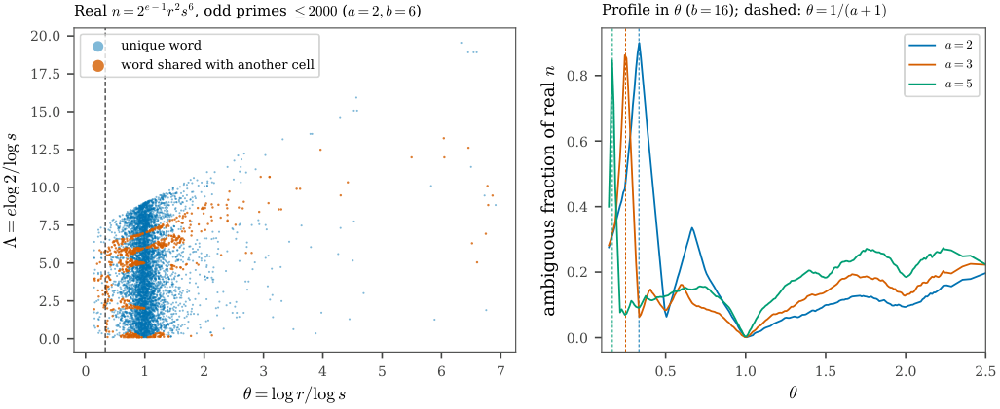
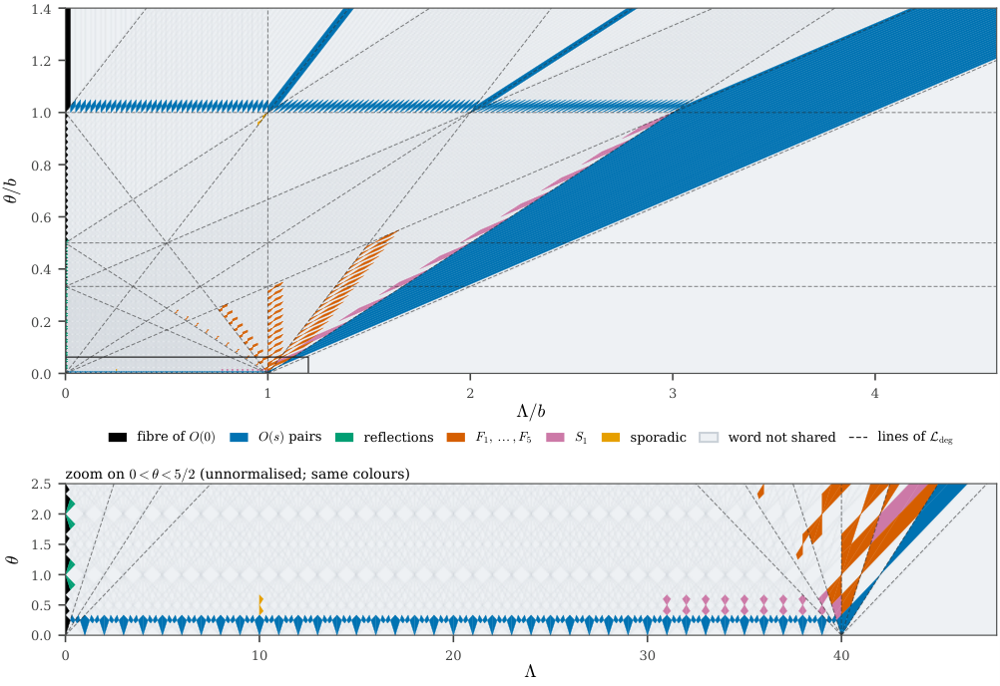
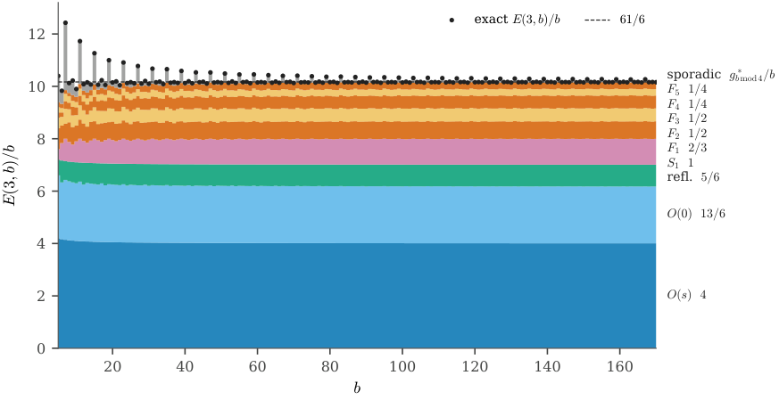
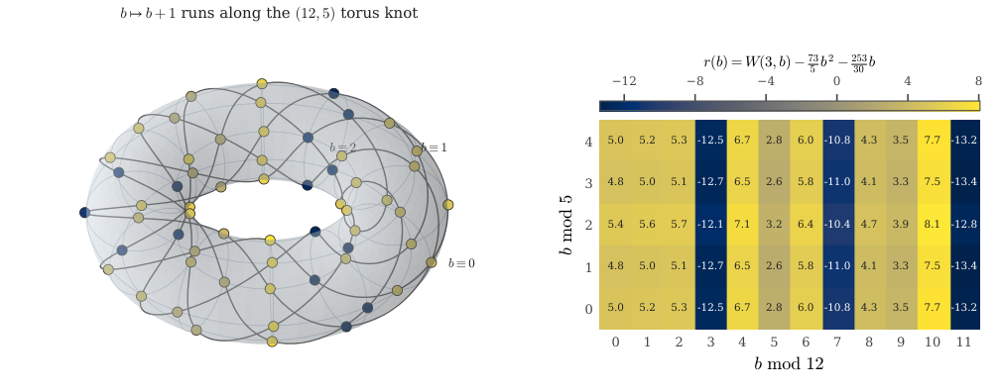

How Many Dyck Words Do the Divisors of an Integer Make? II. Generic Rigidity and Persistent Ambiguity
At a glance
What the paper contributes
The language of the words $\langle\!\langle n\rangle\!\rangle_2$ and its questions are Rodríguez Caballero's; paper I (doi:10.5281/zenodo.24541288) counted the cells $R(a,b)$ of the pattern $r^as^b$ and asked whether the excess $E(a,b)=R(a,b)-W(a,b)$ is linear in $b$ for $a\ge2$ (rigidity). This draft answers it for $a\le5$ and studies where the coincidences live, at three levels of status:
- Level 1, general theory (every $a$; written proofs, re-derived by an independent AI agent, not checked by a human referee). A dimension criterion (Proposition 4.1) and a finite reduction to affine observation vectors on pieces of the parameter space (Theorem 5.1). Crossing the wall $\Lambda+h\theta=\rho$ raises $\Sigma(c)$ by exactly $\omega(h,\rho)=(a+1-|h|)(b+1-|\rho|)$ (Proposition 3.1), so adjacent cells have different words, every fibre is an antichain of at most $4ab+1$ cells, $E\le\mathrm{Amb}\le2E$, and boundedly many power sums of $Z(c)$ determine the word. From Alekseyev's count, $R(a,b)=C_ab(b+1)+(a+1)b+\pi_a(b)$ with $\pi_a$ of period dividing $P_a$ (Proposition 2.3; the count itself is classical).
- Level 2, computer-assisted rigidity (program and reduction not checked by a human referee). $E(a,b)=\Theta(b)$ and $W(a,b)=C_ab^2+O(b)$ for $a=2,3,4,5$ (Theorem 6.1); the only affine candidates shift $n$ by a non-integral multiple of $1/(a+1)$, explained by the smallest element $\tau(c)$ of $Z(c)$ (Proposition 7.1). For every $a\ge2$ the all-positive chamber has no two-parameter family (Theorems 7.6 and 7.10, Corollary 7.11, written proofs; Theorem 7.10 and Proposition 7.4 are checked in Isabelle/HOL). Measured by length, ambiguity does not vanish: lower bounds on both sides of $\theta=1/(a+1)$ give a mean ambiguous share with $\liminf\ge3/(4a(a+1)|I|)$ (Proposition 6.3, Corollary 6.4). Lemma D for $a=3$, $b\ge317$ (Theorem 8.1).
- Level 3, a conjectural classification for $a=3$. Nine one-parameter families of coincidences, each proved by hand (Theorems 9.2, 9.4, Proposition 9.1, Corollary 9.5), give $E(3,b)$ up to a periodic constant fitted to the data (Conjecture 9.8): it agrees with exact enumeration for $5\le b\le170$ and some $b\le400$; completeness is not proved.
Fifteen written results are checked, wholly or in part, in Isabelle/HOL (public: karlesmarin/formalizations, Isabelle/CaballeroDyckWords). What the paper claims as its own, as far as its searches could see: the finite reduction and its certificate, Lemma D, the all-positive-chamber analysis and the families of Section 9; the rest is known, standard or elementary and is labelled so in the paper. Draft of 26 November 2026, not refereed, not published.
🚀 Start here: Proposition 3.1: wall weights: crossing Λ + hθ = ρ upwards raises Σ(c) by exactly ω(h,ρ) = (a+1−|h|)(b+1−|ρ|) > 0.
Main results:
- Proposition 2.3: R(a,b) = Cₐ b(b+1) + (a+1) b + πₐ(b), with πₐ periodic of period dividing Pₐ (odd primes ≤ 2a)
- Proposition 3.1: wall weights: crossing Λ + hθ = ρ upwards raises Σ(c) by exactly ω(h,ρ) = (a+1−|h|)(b+1−|ρ|) > 0
- Theorem 5.1: finite reduction: (C1) rank two on every piece and (C2) on pairs with one signature imply E(a,b) = O(b)
- Theorem 6.1: rigidity for a ≤ 5: E(a,b) = Θ(b) and W(a,b) = Cₐ b² + O(b) for a = 2, 3, 4, 5 (computer-assisted)
- Proposition 6.3: two numerations of one progression: θ = 1/(a+1) and θ = b+1 give the same words in distinct cells; lower bounds for the ambiguous share on both sides of 1/(a+1)
- Theorem 7.6: pairs in the all-positive chamber, every a ≥ 2: same signature and different vectors ⇒ m′ = m, (N2) and (N3); conversely within one chamber
- Theorem 7.10: the shift is never an integer: if the window sums of two distinct templates differ by a constant D, then a+1 ∤ D
- Theorem 8.1: Lemma D (a = 3, b ≥ 317): a vector with two free coordinates far from 25 fixed lines shares its word with no other
- Theorem 9.2: the five families F₁, …, F₅ next to the upper clipping: pairs of distinct realisable vectors with one word, for every b
- Conjecture 9.8: conjecture: E(3,b) = Efam(b) + g*_(b mod 4), slope 61/6 (checked by exact enumeration for 5 ≤ b ≤ 170 and some b ≤ 400)
🗺️ Map of the results (click a box to go to it)
Dependencies in the written proof: an arrow A → B means that this proof of B uses A. Every result rests on its written proof; the tags record what was checked besides, and each statement's “Evidence & scope” block says how far. The colour of a box is its strongest tag, in the order above; the tags in the box give the rest. Boxes with a thick border are the main results; click a box to read the statement.
📐 Setting (copied from the paper: §1, §2, §3, §5 and §7)
For an integer \(n\ge 1\), Rodríguez Caballero’s word \(\langle \! \langle n\rangle \! \rangle _2\) records how the divisors of \(n\) interleave with the doubled divisors: one reads \(D_n\triangle 2D_n\) in increasing order and writes an opening bracket for elements of \(D_n\) and a closing bracket for elements of \(2D_n\). (§1)
(§1) So the excess \(E(a,b)=R(a,b)-W(a,b)\), the number of cells lost to coincidences of words. (§1)
Fix \(a,b\ge 1\). In units of \(\log s\) put \(\Lambda =\log t/\log s\) and \(\theta =\log r/\log s\), where \(t=2^e\). For \((\Lambda ,\theta )\) in the open quadrant, off the lines \(\Lambda +h\theta =\rho \) (\(|h|\le a\), \(\rho \in \mathbb Z\cap [-b,b]\)), put
and let \(Z(c)=\sum _{i,j}\delta _{H_i(j)}\) be the multiset of the \(K=(a+1)(b+1)\) values \(H_i(j)\), written as a formal sum (\(\delta _v\) is the multiset \(\{ v\} \)). By [I, Section 6, Steps 1 and 2], the word of \(n\) is determined by \(Z(c)\) and conversely; a vector \(c\) is realisable if it comes from a point of the open quadrant off the lines, and every realisable vector is realised by primes [I, Lemma 2.3]. So \(R(a,b)\) is the number of realisable vectors, \(W(a,b)\) the number of distinct multisets \(Z(c)\), and two realisable vectors are equivalent if \(Z(c)=Z(d)\). A witness for \(c\) is a point \((\Lambda ,\theta )\) with \(\Lambda ,\theta {\gt}0\) and \(\Lambda +h\theta \notin \mathbb Z\) for \(|h|\le a\) whose vector is \(c\); it proves that \(c\) is realisable. A coordinate \(c_h\) is free if \(-b\le c_h\le b-1\), and clipped otherwise. We write \(T=K=(a+1)(b+1)\) for the largest value. (§2)
(§1)
For a realisable \(c\) put
and order vectors coordinatewise: \(c\le d\) if \(c_h\le d_h\) for all \(h\). The fibre of a word is the set of realisable vectors with that word, and \(e_h\) is the unit vector of coordinate \(h\). (§3)
(§3)
Write a point of the quadrant off the lines \(\Lambda +h\theta \in \mathbb Z\) as \(\Lambda =n+u\), \(\theta =m+v\) with \(n,m\in \mathbb Z_{\ge 0}\) and \(u,v\in (0,1)\). Then \(\lfloor \Lambda +h\theta \rfloor =n+hm+\varepsilon _h\) with \(\varepsilon _h=\lfloor u+hv\rfloor \), so
The vector \(\varepsilon =(\varepsilon _h)\), the template, depends only on the cell of \((u,v)\) in the arrangement of the lines \(u+hv=k\) (\(|h|\le a\), \(k\in \mathbb Z\)) in the open unit square. (§5) A piece \(P=(C_P,\varepsilon )\) is a chamber together with a template. (§5)
For a template put \(S_-(\varepsilon )=\sum _{h=-a}^{0}\varepsilon _h\). (§7) Let \(C_+\) be the chamber \(0{\lt}\lambda +h\mu {\lt}1\) (\(|h|\le a\)). (§7.1)
1 Introduction
No numbered statement in this section.
Its figures and tables are below; its text is in the paper, p. 1.
|
result |
status |
|
Level 1 |
|
|
Proposition 2.3 (linear term \(D_a\) of \(R(a,b)\); period divides \(P_a\)) |
written proof, a consequence of the published count (checked exactly, \(a\le 6\), every class mod \(\operatorname {lcm}(1,\dots ,2a)\)); minimal period \(=P_a\): exact enumeration \(a\le 6\) |
|
Proposition 3.1 (wall weights) |
Isabelle/HOL (a), (c) and \(\omega \ge 1\); the crossing argument (b): written proof |
|
Corollary 3.2 (antichains) |
Isabelle/HOL (ii), (iii); (i): written proof |
|
Proposition 3.5 (fibres \(\le 4ab+1\)) |
written proof (finite checks, \(a\le 3\), \(b\le 15\)) |
|
Lemma 3.6 (\(E\le \operatorname {Amb}\le 2E\)) |
Isabelle/HOL (the counting lemma) |
|
written proof; the minimal number: exact enumeration \(a\le 3\), \(b\le 20\) |
|
|
Proposition 3.9 (\(W(a,a)\le (R(a,a)+2a+1)/2\)) |
Isabelle/HOL the counting step (\(2W\le R+f\)); the geometric step: written proof |
|
Proposition 3.11 (one pair of \(a=2\), every \(b\ge 2\)) |
written proof (checked \(b\le 300\)) |
|
Proposition 4.1 (dimension criterion) |
written proof |
|
Theorem 5.1 (finite reduction) |
written proof; the encoding tested on exact data, \(a\le 3\), \(b\le 200\) (Appendix A) |
|
Level 2 |
|
|
Theorem 6.1: \(E(a,b)=O(b)\), \(W(a,b)=C_ab^2+O(b)\) for \(a=2,3,4,5\) |
computer-assisted, conditional on the correctness of the program and of Theorem 5.1 |
|
Corollary 6.2 (\(\operatorname {Amb}/R=\Theta _a(1/b)\) for \(a=2,\dots ,5\)) |
computer-assisted: a written consequence of Theorem 6.1 and Lemma 3.6 (data in Table 3) |
|
Proposition 6.3 (two numerations of one progression) |
Isabelle/HOL (i), and (ii) as a line of the arrangement that separates the two points; (iii), (iv): written proof |
|
Corollary 6.4 (ambiguity of positive section measure, every \(a\ge 2\)) |
written proof (segments checked in exact arithmetic, \(a\le 6\), \(b\le 60\)) |
|
Corollary 6.5 (no coincidence between two deep cells, \(a=3,4,5\)) |
computer-assisted |
|
Proposition 7.1 (the identity for \(\tau \)) |
Isabelle/HOL; Corollary 7.2 (the \(109\) candidates): computer-assisted |
|
Proposition 7.4 (levels of \(C_+\), every \(a\)) |
Isabelle/HOL |
|
Lemma 7.5, Theorem 7.6 (all-positive chamber, every \(a\ge 2\)) |
written proof (checked: Corollary 7.9, \(a\le 6\); all templates, \(a\le 15\)) |
Colour: the paper’s own colours (see the caption).
|
result |
status |
|
Proposition 7.8 (candidates only in \(C_+\); one row forces \(m'=m\)) |
computer-assisted (\(a\le 6\); \(a=6\) without regression) |
|
Theorem 7.10 (the shift is never an integer) |
Isabelle/HOL (the whole statement) |
|
Corollary 7.11 ((C1), (C2) inside \(C_+\)) written proof, from written and formalised results Conjecture 7.12 (candidates only in \(C_+\)) conjecture (checked \(a\le 6\)) Theorem 8.1 (Lemma D for \(a=3\), \(b\ge 317\)) computer-assisted (Lemmas 8.3 and 8.4: written proof) Level 3 Proposition 9.1 (\(O(s)\) for \(a=3\)) Isabelle/HOL Theorem 9.2 (families \(F_1,\dots ,F_5\)) Isabelle/HOL the identities and the witnesses; the counts: written proof Theorem 9.4 (family \(S_1\)) Isabelle/HOL the witnesses; the words, their equality and the count: written proof Corollary 9.5 (a fibre with at least four cells) Isabelle/HOL the equality of the four multisets; that the fibre has exactly four cells: observed Theorem 9.7 (lower bound by the coincidence graph) Isabelle/HOL the counting implication; its premises are the results above Conjecture 9.8: the list is complete (\(\Rightarrow \)), formula for \(E(3,b)\) conjecture exact enumeration \(b\le 170\), some \(b\le 400\) Section 10 Proposition 10.6 (fibre counts of fixed size are quasipolynomials of degree \(\le 1\)) written proof, conditional on rigidity (so computer-assisted for \(a=2,\dots ,5\)) Proposition 10.10 (wall weights for \(k\) primes) written proof (checked on the shape \((2,2,3)\)) |
2 Setting, two tools, and the linear term of \(R(a,b)\)
Let \(c'\) agree with \(c\) except \(c'_h=c_h+\sigma \), \(\sigma \in \{ 1,-1\} \), with \(c'_h\in [-b-1,b]\). Put \(J=\{ j\in [0,b]:0\le c_h+1+j\le b\} \) if \(\sigma =1\) and \(J=\{ j\in [0,b]:0\le c_h+j\le b\} \) if \(\sigma =-1\). Then \(H'_i(j)=H_i(j)+\sigma \) if \(0\le i-h\le a\) and \(j\in J\), and \(H'_i(j)=H_i(j)\) otherwise. If several coordinates move, the changes of one row add, computed on the original vector.
Isabelle · oursshow
lem_M · Isabelle/CaballeroDyckWords/Caballero_Setting/Caballero_Setting.thy, line 142
theorem lem_M:
assumes "sg = 1 \<or> sg = -1" and "c' = c(h := c h + sg)" and "0 \<le> j" "j \<le> b"
shows "Hval a b c' i j
= Hval a b c i j + (if 0 \<le> i - h \<and> i - h \<le> a \<and> j \<in> Jset b sg (c h) then sg else 0)"lem_M_multi · Isabelle/CaballeroDyckWords/Caballero_Setting/Caballero_Setting.thy, line 87
theorem lem_M_multi:
assumes fin: "finite M" and s: "\<And>h. h \<in> M \<Longrightarrow> s h = 1 \<or> s h = -1"
and cc: "\<And>h. c' h = c h + (if h \<in> M then s h else 0)"
and j: "0 \<le> j" "j \<le> b"
shows "Hval a b c' i j = Hval a b c i j
+ (\<Sum>h \<in> M. if 0 \<le> i - h \<and> i - h \<le> a \<and> j \<in> Jset b (s h) (c h) then s h else 0)"Trust base: 🔒 kernel only. Isabelle: 2 results, no oracles
Proof: in this note·Formalized: Isabelle/HOL, by the author (public formalizations repository)·Covers: the whole statement
↳ Used in: Proposition 3.1, Proposition 3.11, Theorem 9.2
\(c_h\) enters row \(i\) exactly when \(0\le i-h\le a\), and \(f(v+1)-f(v)=[-1\le v\le b-1]\). Different coordinates enter a row through different terms.
🛡️ Evidence & scope
Program: a = 3: every non-decreasing clipped c, every h and sign, b = 3..5: 594594/594594. working script pruebas_a3.py, not published
Let \(\Lambda ,\theta {\gt}0\) with \(\Lambda +h\theta \notin {\mathbb {Z}}\) for \(|h|\le a\), let \(c\) be its vector and \(\mathcal P\) the multiset of the positions \(i\theta +j\) (\(0\le i\le a\), \(0\le j\le b\)). Then \(H_{i'}(j')=\# \{ p\in \mathcal P:p{\lt}\Lambda +i'\theta +j'\} \), so \(Z(c)\) is the multiset of the counts \(\# \{ p\in \mathcal P:p{\lt}p_0+\Lambda \} \), \(p_0\in \mathcal P\).
Isabelle · oursshow
lem_P_count · Isabelle/CaballeroDyckWords/Caballero_Setting/Caballero_Setting.thy, line 606
theorem lem_P_count:
fixes Lam th :: real
assumes noint: "\<And>h. -a \<le> h \<Longrightarrow> h \<le> a \<Longrightarrow> Lam + real_of_int h * th \<notin> \<int>"
and i': "0 \<le> i'" "i' \<le> a" and j': "0 \<le> j'" "j' \<le> b"
shows "Hval a b (cpt b Lam th) i' j'
= int (size (filter_mset (\<lambda>p. p < Lam + real_of_int i' * th + real_of_int j') (Pms a b th)))"lem_P · Isabelle/CaballeroDyckWords/Caballero_Setting/Caballero_Setting.thy, line 646
theorem lem_P:
fixes Lam th :: real
assumes noint: "\<And>h. -a \<le> h \<Longrightarrow> h \<le> a \<Longrightarrow> Lam + real_of_int h * th \<notin> \<int>"
shows "Zms a b (cpt b Lam th)
= image_mset (\<lambda>p0. int (size (filter_mset (\<lambda>p. p < p0 + Lam) (Pms a b th)))) (Pms a b th)"Trust base: 🔒 kernel only. Isabelle: 2 results, no oracles
Proof: in this note·Formalized: Isabelle/HOL, by the author (public formalizations repository)·Covers: the whole statement
↳ Used in: 3.3, Proposition 6.3, Proposition 9.1, Theorem 9.4
For one row \(i\) of positions and \(h=i'-i\), \(\# \{ j:i\theta +j{\lt}\Lambda +i'\theta +j'\} =f(\lfloor \Lambda +h\theta \rfloor +j')\), and clipping does not change \(f(v+j')\) for \(0\le j'\le b\) [I, eq. (2)].
Let \(a\ge 1\) and let \(P_a\) be the product of the odd primes \(p\le 2a\) (\(P_1=1\)).
For all \(b\ge 1\), \(R(a,b)=C_ab^2+D_ab+\pi _a(b)\) with \(\pi _a\) periodic and
\[ D_a=C_a+a+1,\qquad \text{that is,}\qquad R(a,b)=C_a\, b(b+1)+(a+1)\, b+\pi _a(b). \]In particular \(D_1,\dots ,D_6=\frac92,\ \frac{31}3,\ \frac{93}5,\ \frac{2059}{70},\ \frac{8917}{210}, \frac{44707}{770}\).
The period of \(\pi _a\) (equivalently, of the quasipolynomial \(R(a,\cdot )\)) divides \(P_a\).
Trust base: ⚠️ not checked. Written proof (Möbius inversion on Alekseyev’s formula), not checked by a human referee, not machine-checked; checked exactly for a ≤ 6 in every residue class mod lcm(1..2a); the minimal period = P_a for a ≤ 6 is an exact computation
Proof: in this note·Covers: not formalized
🆕 Classical and new: the paper: «This is a computation from the closed formula of Acketa–Žunić and Alekseyev; we claim no novelty beyond writing out the linear term and the period, which we did not find stated in the literature we read» (Remark 2.4).
↳ Used in: 2.4, Theorem 6.1, 9.8
By Möbius inversion \(\Phi _q(x)=\sum _{d\mid q}\mu (d)\lfloor x/d\rfloor \), so \(S_q(b)=\sum _{d\mid q}\mu (d)G_d(2b)\) with \(G_d(X)=\sum _{x=1}^{X}\lfloor x/d\rfloor \). Write \(X=dk+r\), \(0\le r{\lt}d\). Since \(\lfloor x/d\rfloor =(x-(x\bmod d))/d\) and the residues of \(1,\dots ,X\) sum to \(k\, d(d-1)/2+r(r+1)/2\),
for every \(X\ge 0\). Only squarefree \(d\) occur (\(\mu (d)\ne 0\)). For \(X=2b\), \(r=2b\bmod d\) depends only on \(b\) modulo \(d/\gcd (d,2)\), which for squarefree \(d\mid q\le 2a\) is the product of the odd primes dividing \(d\), a divisor of \(P_a\). So each \(S_q(b)\), hence by (1) \(R(a,b)\), is a polynomial of degree \(2\) in \(b\) plus a function of period dividing \(P_a\), for every \(b\ge 1\); this is (b). The coefficients of \(b^2\) and \(b\) in this decomposition are unique (a periodic function is bounded); the constant term is not, unless the periodic part is required to have mean zero, and it is not used.
Its coefficients follow from the polynomial parts. For \(q=1\), \(S_1(b)=b(2b+1)=2b^2+b\). For \(q\ge 2\), the polynomial part of \(\sum _{d\mid q}\mu (d)\frac{(2b)^2-(d-2)2b}{2d}\) is \(\frac{\varphi (q)}q\, 2b^2-\sum _{d\mid q}\mu (d)\frac{d-2}{d}\, b =\frac{\varphi (q)}q(2b^2+2b)\), because \(\sum _{d\mid q}\mu (d)=0\) and \(\sum _{d\mid q}\mu (d)/d=\varphi (q)/q\). Hence the polynomial part of \(\frac12V(2b,2a)\) is
and adding \(1+a+b+2ab\) gives the coefficient \(C_a-a+1+2a=C_a+a+1\) of \(b\).
💡 In plain words (commentary, not part of the paper)
Paper I counted the cells exactly; by its Proposition 5.3 the count is Alekseyev’s number of threshold functions in disguise. Here the second term is written out: \(R(a,b)=C_ab^2+(C_a+a+1)b+\pi _a(b)\), where \(\pi _a\) repeats with a period dividing the product \(P_a\) of the odd primes up to \(2a\) (\(1,3,15,105,105,1155\) for \(a=1,\dots ,6\), and these are exactly the minimal periods for \(a\le 6\), by computation). For instance \(D_3=\tfrac {93}5\).
Why it is true: Möbius inversion turns the coprimality condition into sums of \(\lfloor x/d\rfloor \) for squarefree \(d\mid q\le 2a\), and each such sum is a quadratic polynomial plus a term that depends only on \(2b\bmod d\). The paper claims no novelty for the count or its quasipolynomial structure, only possibly for the explicit linear term and the period bound, which it did not find stated in the literature it read. Every lab of this site recomputes \(R(a,b)\) from Alekseyev’s formula in exact arithmetic and compares it with the enumerated cells.
🛡️ Evidence & scope
Program: block D: for a = 1..6 and every residue class b mod lcm(1..2a) (2, 12, 60, 840, 2520, 27720 classes), R(a,b+L) − R(a,b) − C_a(2bL + L²) = D_a L exactly; control with H_a in place of H_⌊a/q⌋ fails in every class. working script revision_mayor.py, not published
Program: π_a periodic from b = 1 with minimal period 1, 3, 15, 105, 105, 1155 = P_a for a = 1..6 (b ≤ 60, 60, 200, 800, 800, 3600); with linear coefficient C_a + a the remainder is not periodic in the six cases. working scripts V376_propuestas.py, comprobar_periodo_moebius.py, not published
Program: the labs of this site recompute R(a,b) from Alekseyev’s formula in BigInt and compare it with every exact enumeration of the paper’s logs (a ≤ 5). labjs/nucleo.js, labjs/control_js.js
The exact count (1) is Alekseyev’s [ 1 , Theorem 3 ] , through [I, Proposition 5.3], and the quasipolynomial structure follows from it by the elementary argument above; we claim no novelty for either. The leading term is in [ 1 , Theorem 25 ] ([I, Remark 5.4]). The explicit linear term \(D_a=C_a+a+1\) and the period bound \(P_a\) are not stated in [ 1 ] , which we read in full, nor in the OEIS entries cited in [I]; we have not read [ 2 ] or [ 3 ] in full; the closed formula of [ 2 , Theorem 3 ] , \(t(m,n)=f(m,n)+2\) with \(f(m,n)=\sum _{-m{\lt}i{\lt}m,\, -n{\lt}j{\lt}n,\, (i,j)=1}(m-|i|)(n-|j|)\), is seen as quoted in [ 13 , eq. (1) ] . It is a sum over coprime pairs of exactly the kind treated above, so the Möbius computation of Proposition 2.3 is a routine consequence of it. Haukkanen and Merikoski’s asymptotics of the threshold-function count (read in full) give \(t(m,n)=\frac6{\pi ^2}(mn)^2+O(mn^2)\) for \(m\le n\), which with one side fixed leaves the linear term inside the error. So what may be new here is at most this explicit form. The bound \(P_a\) sharpens the period \(\operatorname {lcm}\bigl(\operatorname {lcm}(1,\dots ,a),\ \text{odd }q\le 2a\bigr)\) given in the proof of [I, Corollary 5.2]: through (1) the boundary terms of [I, Theorem 5.1], which carry the factor \(\operatorname {lcm}(1,\dots ,a)\), add up to \(2ab\). By exact computation the minimal period of \(\pi _a\) is exactly \(P_a\) for \(a\le 6\): \(1,3,15,105,105,1155\) (checked for \(b\le 60,60,200,800,800,3600\)). With the linear coefficient \(C_a+a\) in place of \(D_a\), the remainder is not periodic in any of the six cases. Equality for every \(a\) is not proved. Figure 1 shows the periodic part \(\pi _a\) for \(a=2,\dots ,5\).
↳ Not used by another result of the paper.
🖼️ Figure 1

The periodic part of the count of cells. For \(a=2,3,4,5\) each clock has \(P_a\) hours and shows \(\pi _a(b)=R(a,b)-C_ab^2-D_ab\) for \(b=1,\dots ,3P_a\), at angle \(2\pi b/P_a\) and at a radius that is an affine function of \(\pi _a(b)\) (scaled per panel; the range of \(\pi _a\) is printed above each clock). The three laps, \(b\le P_a\) (large coloured rings), \(P_a{\lt}b\le 2P_a\) (white rings) and \(2P_a{\lt}b\le 3P_a\) (black dots), fall on the same points, as Proposition 2.3(b) predicts, and no proper divisor of \(P_a\) is a period. Values of \(R(a,b)\) from (1), which agree with the exact enumerations of cells used in Figure 4.
3 Wall weights and fibres
Let \(c\in [-b-1,b]^{2a+1}\) (realisable or not), \(|h|\le a\) and \(c_h\le b-1\). Then
\[ \Sigma (c+e_h)-\Sigma (c)=(a+1-|h|)(b+1-|c_h+1|). \]Crossing the wall \(\ell _{h,\rho }:\Lambda +h\theta =\rho \) (\(|\rho |\le b\)) at a point on no other line, from \(\Lambda +h\theta {\lt}\rho \) to \(\Lambda +h\theta {\gt}\rho \), changes only \(c_h\), from \(\rho -1\) to \(\rho \), and raises \(\Sigma \) by exactly \(\omega (h,\rho )\ge 1\).
For realisable \(c,d\), \(\Sigma (d)-\Sigma (c)=\sum _{|h|\le a}(a+1-|h|)\bigl(F(d_h)-F(c_h)\bigr)\), where \(F(v)=\sum _{j=0}^{b}f(v+j)\) and \(F(v)-F(u)=\sum _{\rho =u+1}^{v}(b+1-|\rho |)\) for \(u\le v\): the signed sum of the weights of the walls that separate the two cells, independent of the path.
Isabelle · ours · partshow
Only a part is in Isabelle: (a), (c) and the weight ω ≥ 1 of (b); the geometric part of (b), that crossing a wall at a point on no other line changes only c_h, is not formalized
prop_wall_a · Isabelle/CaballeroDyckWords/Caballero_Setting/Caballero_Setting.thy, line 257
theorem prop_wall_a: assumes "-a \<le> h" "h \<le> a" "-b - 1 \<le> c h" "c h \<le> b - 1" shows "Sig a b (c(h := c h + 1)) - Sig a b c = (a + 1 - \<bar>h\<bar>) * (b + 1 - \<bar>c h + 1\<bar>)"
prop_wall_c · Isabelle/CaballeroDyckWords/Caballero_Setting/Caballero_Setting.thy, line 274
theorem prop_wall_c:
"Sig a b d - Sig a b c = (\<Sum>h \<in> {-a..a}. (a + 1 - \<bar>h\<bar>) * (Fsum b (d h) - Fsum b (c h)))"prop_wall_F · Isabelle/CaballeroDyckWords/Caballero_Setting/Caballero_Setting.thy, line 284
theorem prop_wall_F:
assumes "-b - 1 \<le> u" "u \<le> v" "v \<le> b"
shows "Fsum b v - Fsum b u = (\<Sum>\<rho> \<in> {u + 1..v}. b + 1 - \<bar>\<rho>\<bar>)"wall_omega_pos · Isabelle/CaballeroDyckWords/Caballero_Setting/Caballero_Setting.thy, line 308
theorem wall_omega_pos: fixes a b h \<rho> :: int assumes "\<bar>h\<bar> \<le> a" "\<bar>\<rho>\<bar> \<le> b" shows "1 \<le> (a + 1 - \<bar>h\<bar>) * (b + 1 - \<bar>\<rho>\<bar>)"
Trust base: 🔒 kernel only — only part of the statement is formal (see the box). Isabelle: 4 results, no oracles
Proof: in this note·Formalized: Isabelle/HOL, by the author (public formalizations repository)·Covers: part: (a), (c) and the weight ω ≥ 1 of (b); the geometric part of (b), that crossing a wall at a point on no other line changes only c_h, is not formalized
🆕 Classical and new: the paper lists it among the elementary or routine results, no novelty claimed (Section 1, Literature status).
↳ Used in: Corollary 3.2, Proposition 10.10
The coordinate \(c_h\) enters row \(i\) exactly when \(0\le i-h\le a\), that is, in \(a+1-|h|\) rows, always through the term \(f(c_h+j)\). So \(\Sigma (c)=\sum _h(a+1-|h|)F(c_h)\). Since \(f(v+1)-f(v)=[-1\le v\le b-1]\) (proof of Lemma 2.1), \(F(v+1)-F(v)=\# \{ j\in [0,b]:-1\le v+j\le b-1\} \), which is \(b-v=b+1-|v+1|\) if \(v\ge -1\) and \(v+b+2=b+1-|v+1|\) if \(v\le -2\); this is (a), and (c) follows by summing. For (b): at such a point only the floor \(\lfloor \Lambda +h\theta \rfloor \) changes, from \(\rho -1\) to \(\rho \), and since \(-b-1\le \rho -1{\lt}\rho \le b\) clipping leaves both values unchanged; (a) with \(c_h=\rho -1\) gives \(\omega (h,\rho )\), which is \(\ge 1\) because \(|h|\le a\) and \(|\rho |\le b\).
💡 In plain words (commentary, not part of the paper)
Add up all the numbers of the multiset \(Z(c)\) that encodes the word: that is \(\Sigma (c)\). Each coordinate \(c_h\) enters \(a+1-|h|\) rows, so moving across one line \(\Lambda +h\theta =\rho \) of the arrangement (the only coordinate that changes is \(c_h\), from \(\rho -1\) to \(\rho \)) raises \(\Sigma \) by the explicit positive number \(\omega (h,\rho )=(a+1-|h|)(b+1-|\rho |)\). So \(\Sigma \) is a “height” that strictly increases upwards through every wall.
Why it matters: two cells next to each other differ in height, so they never have the same word; two comparable vectors \(c\le d\), \(c\ne d\), differ in height too, so every fibre (the set of cells with one word) is an antichain; and a coincidence must cross walls of equal total weight upwards and downwards. Combined with a decomposition into vertical strips (Proposition 3.5), this bounds every fibre by \(4ab+1\) cells. The paper calls these results elementary and claims no novelty for them; parts (a), (c) and the positivity of the weight are checked in Isabelle/HOL. The lab draws every cell as a terrace at height \(\Sigma (c)\), as in the paper’s Figure 2.
🛡️ Evidence & scope
Program: a = 1, 2, 3, b ∈ 1, 2, 3, 5, 8: the step formula on 32984 steps, 0 failures; Σ(d) − Σ(c) = signed sum of ω over the walls crossed, 61002 pairs, 0 failures; control with (b+1−|c_h|): 859 failures. working script V377_propuestas.py, not published
Program: the lab «Figure 2 live» checks the step formula (a) on every cell and coordinate, in exact integers, for the a and b you choose. labjs/nucleo.js
🧪 Lab: Figure 2 live: the cells of (a, b) as terraces at height Σ(c), fibres joined by bridges, words computed in your browser
For \(a\le 4\) and small \(b\) the lab enumerates every cell of the lines \(\Lambda +h\theta =\rho \) exactly: the vertices have \(\theta =p/q\) with \(q\le 2a\), \(p\le 2b\) (the set \(\mathcal T\) of Proposition 3.5), and on a rational vertical line inside each strip it takes one rational point between consecutive crossings; the vector \(c\) is computed with integer arithmetic. For each cell it computes \(Z(c)\), the word (the \(k\)-th closing bracket is preceded by the \(k\)-th smallest element of \(Z(c)\) openings), \(\Sigma (c)\) and the fibres. It checks: \(R\) against Alekseyev’s formula, \(W\) against the paper’s data (and Theorems A, B of [I]); the step formula of Proposition 3.1(a) on every cell and coordinate; that no fibre contains two comparable vectors (Corollary 3.2(ii)); the bound \(1+\sum _{q\le 2a}\Phi _q(2b)\) of Proposition 3.5; and \(E\le \mathrm{Amb}\le 2E\) (Lemma 3.6). The first figure is in 3D (drag to turn it): every cell meeting the window as a terrace at height \(\Sigma (c)\), as in the paper’s Figure 2; the cells of non-trivial fibres coloured (light blue the fibre of \(O(0)\), vermilion the others) and joined by horizontal bridges at their common height. Its 2D view, beside it, is the same window seen from above. With odd primes \(r\ne s\) and \(e\ge 1\) the lab also places the integer \(n=2^{e-1}r^as^b\): its cell by exact comparisons \(s^\rho {\lt}t\, r^h\) (BigInt), and its word read from the divisors \(D_n\triangle 2D_n\), which must equal the word of the cell. Cell polygons are clipped in floating point only to be drawn.
Two cells separated by a single wall (adjacent cells) have different words.
If \(c\le d\) and \(c\ne d\) then \(\Sigma (c){\lt}\Sigma (d)\). In particular every fibre is an antichain for \(\le \).
If \(Z(c)=Z(d)\), the weights of the walls crossed upwards (towards \(\Lambda +h\theta {\gt}\rho \)) and downwards between the two cells balance: \(\sum _h(a+1-|h|)\bigl(F(d_h)-F(c_h)\bigr)=0\).
Isabelle · ours · partshow
Only a part is in Isabelle: (ii) and (iii); (i) rests on the geometric part of Proposition 3.1(b) and is not formalized
cor_antichain_ii · Isabelle/CaballeroDyckWords/Caballero_Setting/Caballero_Setting.thy, line 338
theorem cor_antichain_ii:
assumes rng: "\<And>h. -a \<le> h \<Longrightarrow> h \<le> a \<Longrightarrow> -b - 1 \<le> c h \<and> c h \<le> b \<and> -b - 1 \<le> d h \<and> d h \<le> b"
and le: "\<And>h. -a \<le> h \<Longrightarrow> h \<le> a \<Longrightarrow> c h \<le> d h"
and ne: "\<exists>h. -a \<le> h \<and> h \<le> a \<and> c h \<noteq> d h"
shows "Sig a b c < Sig a b d"cor_antichain_fibre · Isabelle/CaballeroDyckWords/Caballero_Setting/Caballero_Setting.thy, line 373
corollary cor_antichain_fibre:
assumes "Zms a b c = Zms a b d"
and "\<And>h. -a \<le> h \<Longrightarrow> h \<le> a \<Longrightarrow> -b - 1 \<le> c h \<and> c h \<le> b \<and> -b - 1 \<le> d h \<and> d h \<le> b"
and "\<And>h. -a \<le> h \<Longrightarrow> h \<le> a \<Longrightarrow> c h \<le> d h"
shows "\<forall>h. -a \<le> h \<and> h \<le> a \<longrightarrow> c h = d h"cor_antichain_iii · Isabelle/CaballeroDyckWords/Caballero_Setting/Caballero_Setting.thy, line 387
corollary cor_antichain_iii:
assumes "Zms a b c = Zms a b d"
shows "(\<Sum>h \<in> {-a..a}. (a + 1 - \<bar>h\<bar>) * (Fsum b (d h) - Fsum b (c h))) = 0"Trust base: 🔒 kernel only — only part of the statement is formal (see the box). Isabelle: 3 results, no oracles
Proof: in this note·Formalized: Isabelle/HOL, by the author (public formalizations repository)·Covers: part: (ii) and (iii); (i) rests on the geometric part of Proposition 3.1(b) and is not formalized
↳ Used in: 3.3, 3.4, Proposition 3.5
\(\Sigma \) is a function of \(Z(c)\), hence of the word. (i) is Proposition 3.1(b), (ii) follows from (a) because every step weight is \(\ge 1\), and (iii) is (c) with \(\Sigma (c)=\Sigma (d)\).
🛡️ Evidence & scope
Program: a ≤ 3, b ≤ 15 (45 cases): adjacent pairs with the same word 0 (e.g. 6187 adjacent pairs at a = 3, b = 15); comparable pairs inside a fibre 0; control: 1966 comparable pairs among arbitrary cells. working script V376_propuestas.py, not published
(a) \(E\) does not depend on a choice of presentation. A word is a function of the cell (Lemma 2.2: the counts depend only on the signs of \(\Lambda +h\theta -\rho \)), so no line is missing; and by Corollary 3.2(i) every wall between two cells separates two different words, so no line can be erased, and no two cells of one fibre are adjacent. The cells are convex, and two cells meet at most along walls and at vertices, which are off the set of generic parameters. Hence the connected components of the open set of generic parameters whose word is \(w\) are exactly the cells of the fibre of \(w\), and \(E=\sum _w(\# \pi _0(U_w)-1)\) where \(U_w\) is that set: there is no excess from over-subdivision, only from words that have several disconnected realisations. (If one adds lines that change no word, \(R\) and \(E\) grow together; here none is superfluous.) The proof is the one of the cited results; it is stated here because it is what makes \(E\) an intrinsic count of the word map. (b) Only generic words occur. No integer lies on a line: \(\Lambda +h\theta =\rho \) means \(t\, r^h=s^\rho \) with \(t=2^e\), \(e\ge 1\), and \(r,s\) odd primes, which is impossible because the \(2\)-adic valuation of the left side is \(e\ge 1\) and that of the right side is \(0\). So \(W(a,b)\) counts the words of integers, all of which lie in open cells, and the words of singular parameters (where two projected values coincide and brackets cancel) never occur.
↳ Not used by another result of the paper.
Corollary 3.2(iii) is necessary, not sufficient, and is cheap to test before comparing observation vectors. For \(a\le 3\) and \(b\le 15\) we measured it on all pairs of cells. Few pairs pass it: \(4011\) of the \(6.36\times 10^6\) pairs for \(a=3\), \(b=15\) (\(0.06\% \)). Among those that pass, the share of genuine coincidences falls with \(b\): from \(75\% \) (\(b=2\)) to \(40\% \) (\(b=15\)) for \(a=1\), from \(74\% \) to \(21\% \) for \(a=2\), and from \(57\% \) (\(b=3\)) to \(17\% \) for \(a=3\).
↳ Not used by another result of the paper.
Every fibre has at most \(1+\sum _{q=1}^{2a}\Phi _q(2b)\le 4ab+1\) vectors.
Trust base: ⚠️ not checked. Written proof, not checked by a human referee, not machine-checked; checked for a ≤ 3, b ≤ 15
Proof: in this note·Covers: not formalized
↳ Used in: 10.7
Two lines \(\ell _{h,\rho }\), \(\ell _{h',\rho '}\) with \(h\ne h'\) meet at \(\theta =(\rho -\rho ')/(h-h')\), and lines with the same \(h\) are parallel. So every vertex of the arrangement in the open quadrant has \(\theta \) in the set \(\mathcal T\) of positive fractions \(p/q\) in lowest terms with \(q\le 2a\) and \(p\le 2b\), and \(|\mathcal T|=\sum _{q\le 2a}\Phi _q(2b)\). The set \(\mathcal T\) also contains the abscissa \(\theta =\rho /h\) at which a line \(\ell _{h,\rho }\) crosses the boundary line \(\ell _{0,0}=\{ \Lambda =0\} \), so inside each strip below every line lies entirely above or entirely below \(\Lambda =0\). The vertical lines \(\theta \in \mathcal T\) cut the quadrant into \(|\mathcal T|+1\) open vertical strips. Inside one strip no two lines cross, so the lines are graphs \(\Lambda =\rho -h\theta \) over its \(\theta \)-interval, totally ordered, and every cell that meets the strip meets each vertical line \(\theta =\theta _0\) of it. Fix such a \(\theta _0\): along it every coordinate \({\operatorname {clip}}\lfloor \Lambda +h\theta _0\rfloor \) is non-decreasing in \(\Lambda \), so any two cells meeting the strip have comparable vectors. By Corollary 3.2(ii) a fibre meets each strip in at most one cell, and every cell, being open, meets some strip. Finally \(\Phi _q(2b)\le 2b\).
🛡️ Evidence & scope
Program: a ≤ 3, b ≤ 15: no fibre above 4ab+1 nor above 1 + Σ_q≤2a Φ_q(2b); the largest fibre is that of O(0) in every case (34 at a = 3, b = 15, against 115 and 181). working script V376_propuestas.py, not published
\(E(a,b)\le \operatorname {Amb}(a,b)\le 2E(a,b)\). Hence \(E(a,b)=O_a(b)\) if and only if \(\operatorname {Amb}(a,b)=O_a(b)\).
Isabelle · ours · partshow
Only a part is in Isabelle: the counting argument, for any finite set with a word map; that the set is the set of cells is the paper’s setting
lem_amb · Isabelle/CaballeroDyckWords/Caballero_Setting/Caballero_Setting.thy, line 684
theorem lem_amb: assumes "finite X" shows "Ecount X w \<le> int (Amb X w)" and "int (Amb X w) \<le> 2 * Ecount X w"
Trust base: 🔒 kernel only — only part of the statement is formal (see the box). Isabelle: 1 result, no oracles
Proof: in this note·Formalized: Isabelle/HOL, by the author (public formalizations repository)·Covers: part: the counting argument, for any finite set with a word map; that the set is the set of cells is the paper’s setting
↳ Used in: Corollary 6.2, 10.4, Proposition 10.6
A fibre of size \(s\ge 2\) contributes \(s-1\) to \(E\) and \(s\) to \(\operatorname {Amb}\), and \(s-1\le s\le 2(s-1)\); fibres of size \(1\) contribute to neither.
🛡️ Evidence & scope
Program: 42 cases (a ≤ 3, 2 ≤ b ≤ 15), all E ≤ Amb ≤ 2E, Amb/E ∈ [1.750, 1.920]; and the 240 cases of Table 3. working scripts V377_propuestas.py, V385_resumen.py, not published
Let \(L_a=\operatorname {lcm}(1,\dots ,a+1)\) and \(t_a=2(a+1)(2a+3)L_a\). If \(c,d\) are realisable for the same \(b\) and \(I_j(c)=I_j(d)\) for \(0\le j\le 2t_a-2\), then \(Z(c)=Z(d)\). So the number of power sums needed depends on \(a\) only.
Trust base: ⚠️ not checked. Written proof (Hajós’s lemma on the sparse form of [I, §6, Step 3]), not checked by a human referee; the minimal number of power sums needed is an exact enumeration for a ≤ 3, b ≤ 20
Proof: in this note·Covers: not formalized
🆕 Classical and new: the paper: «we claim no novelty for it, only for the explicit bound t_a through [I]».
↳ Used in: Proposition 3.8, 10.5
Let \(M_c(z)=\sum _{i,j}z^{H_i(j)}\). By [I, Section 6, Step 3], \((1-z^{L_a})M_c\) is a sum of at most \(t_a\) monomials for every \(c\), so \(P=(1-z^{L_a})(M_c-M_d)=\sum _{k=1}^{s}\kappa _kz^{e_k}\) with distinct exponents \(e_k\ge 0\) and \(s\le 2t_a\). Let \(\vartheta =z\frac{d}{dz}\). Then \(\vartheta ^j(M_c-M_d)(1)=I_j(c)-I_j(d)=0\) for \(j\le 2t_a-2\). Since \(z^i\frac{d^i}{dz^i}=\vartheta (\vartheta -1)\cdots (\vartheta -i+1)\), the derivatives of \(M_c-M_d\) of order \(\le 2t_a-2\) vanish at \(z=1\), so \(M_c-M_d\) vanishes there to order \(\ge 2t_a-1\), and \(P\), with the simple zero of \(1-z^{L_a}\), to order \(\ge 2t_a\ge s\). By the same relation, \(\vartheta ^jP(1)=\sum _k\kappa _ke_k^j=0\) for \(0\le j\le s-1\). The matrix \((e_k^j)_{k,j}\) is a Vandermonde matrix on distinct nodes, hence invertible (this is Hajós’s lemma [ 14 , 15 ] : a nonzero polynomial with \(s\) monomials has no root \(z\ne 0\) of multiplicity \(\ge s\)), so every \(\kappa _k=0\), \(P=0\), and \(M_c=M_d\) because \({\mathbb {Z}}[z]\) is a domain.
🛡️ Evidence & scope
Program: least J with (I_0, …, I_J) separating all words: J(1,b) = 3 (2 ≤ b ≤ 20), J(2,b) = 3 except J = 5 at b = 6, 12, 16, J(3,b) = 3 for b ≤ 14 and J(3,15) = 4. working script V377_propuestas.py, not published
Let \(d_a=\sum _{k=1}^{a+1}\varphi (k)\) and \(s_a=2(a+1)(a+2)(d_a+1)\). If \(c,d\) are realisable for the same \(b\) and \(I_j(c)=I_j(d)\) for \(0\le j\le 2s_a-2\), then \(Z(c)=Z(d)\). So \(2s_a-1=O(a^4)\) power sums determine the word.
Trust base: ⚠️ not checked. Written proof (Hajós’s lemma on the sparse form of 𝒬M_c), not machine-checked
Proof: in this note·Covers: not formalized
🆕 Classical and new: the paper: the Vandermonde step is Hajós’s lemma (known); the power-sum bounds are problem-specific consequences of this known machinery (Section 1).
↳ Not used by another result of the paper.
Let \(\mathcal Q=\prod _{k\le a+1}\Phi _k\), of degree \(d_a\), divisible by \(1-z^s\) for \(1\le s\le a+1\), with a simple zero at \(z=1\). Each term \(f(c_h+j)\) of a row changes slope at most once for \(j\in [0,b]\): if \(c_h{\lt}0\) only the lower clipping point can occur there, and if \(c_h\ge 0\) only the upper one can. Thus \(H_i\) is affine on at most \(a+2\) intervals, with slope \(s\in \{ 0,\dots ,a+1\} \). An interval of slope \(s\ge 1\), first value \(u\) and \(N\) terms contributes \((\mathcal Q/(1-z^s))(z^u-z^{u+sN})\) to \(\mathcal QM_c\), at most \(2(d_a-s+1)\le 2(d_a+1)\) monomials, and one of slope \(0\) contributes \(Nz^u\mathcal Q\), at most \(d_a+1\). So \(\mathcal QM_c\) has at most \((a+1)(a+2)\cdot 2(d_a+1)=s_a\) monomials, and \(P=\mathcal Q(M_c-M_d)\) at most \(2s_a\). The proof of Theorem 3.7 applies with \(\mathcal Q\) in place of \(1-z^{L_a}\): \(M_c-M_d\) vanishes at \(1\) to order \(\ge 2s_a-1\), so \(P\) to order \(\ge 2s_a\), and Hajós’s lemma gives \(P=0\). Finally \(d_a\le \binom {a+2}2\), so \(s_a=O(a^4)\).
🛡️ Evidence & scope
Program: improved bound s_a = 120, 280, 660, 1092, 2128 for a = 2..6; a row has at most a+2 affine segments because each summand has at most one clipping breakpoint. working script simplificar_formulas.py, not published
Let \(a=b\). The map \(\sigma (\Lambda ,\theta )=(\Lambda /\theta ,1/\theta )\) permutes the cells, preserves words and fixes exactly \(2a+1\) cells. Hence
Isabelle · ours · partshow
Only a part is in Isabelle: the counting part: 2W ≤ R + f for an involution that preserves words and has f fixed cells; that σ permutes the cells and fixes exactly 2a+1 of them is the geometric part, taken as a hypothesis
prop_burnside · Isabelle/CaballeroDyckWords/Caballero_Setting/Caballero_Setting.thy, line 792
theorem prop_burnside:
assumes fin: "finite X" and sig: "\<And>x. x \<in> X \<Longrightarrow> sg x \<in> X" and inv: "\<And>x. x \<in> X \<Longrightarrow> sg (sg x) = x"
and pres: "\<And>x. x \<in> X \<Longrightarrow> w (sg x) = w x" and nfix: "card {x \<in> X. sg x = x} = f"
shows "2 * card (w ` X) \<le> card X + f"Trust base: 🔒 kernel only — only part of the statement is formal (see the box). Isabelle: 1 result, no oracles
Proof: in this note·Formalized: Isabelle/HOL, by the author (public formalizations repository)·Covers: part: the counting part: 2W ≤ R + f for an involution that preserves words and has f fixed cells; that σ permutes the cells and fixes exactly 2a+1 of them is the geometric part, taken as a hypothesis
\(\sigma \) is an involution of the open quadrant. A point of \(\ell _{h,\rho }\) goes to a point with \(\Lambda '-\rho \theta '=(\Lambda -\rho )/\theta =-h\), so \(\sigma (\ell _{h,\rho })=\ell _{-\rho ,-h}\), a line of the arrangement because \(a=b\); hence \(\sigma \) permutes the cells. The point \((\log t/\log s,\log r/\log s)\) of \(n=2^{e-1}r^as^a\) goes to \((\log t/\log r,\log s/\log r)\), the point of the same \(n\) with \(r\) and \(s\) exchanged; every cell contains points of this kind [I, Lemma 2.3] and the word is constant on cells, so \(\sigma \) preserves words. In homogeneous coordinates \((\Lambda ,\theta )=(X/Z,Y/Z)\), \(\sigma \) is the linear map \((X,Y,Z)\mapsto (X,Z,Y)\); it maps the open octant \(X,Y,Z{\gt}0\) to itself, and the cone \(\{ (Z\Lambda ,Z\theta ,Z):(\Lambda ,\theta )\in C,\ Z{\gt}0\} \) to the cone over \(\sigma (C)\). If \(\sigma (C)=C\), the cone over \(C\) is therefore convex and \(\sigma \)-invariant, so \(x+\sigma (x)\) lies in it for any \(x\) in it, and \(C\) contains a fixed point, that is, a point with \(\theta =1\); conversely a cell meeting \(\theta =1\) is fixed. The lines meet the half-line \(\theta =1\), \(\Lambda {\gt}0\) at \(\Lambda =\rho -h\), that is, at \(\Lambda =1,\dots ,2a\), and cut it into \(2a+1\) open intervals; each lies in one cell, and no two lie in the same cell, which is convex and avoids the lines. So \(2a+1\) cells are fixed, and \(\sigma \) has \((R(a,a)-(2a+1))/2+(2a+1)\) orbits, each inside one fibre.
🛡️ Evidence & scope
Program: a = b ≤ 4: σ an involution on cells preserving the word, checked cell by cell; fixed cells 3, 5, 7, 9 = 2a+1; orbits 6, 29, 99, 262; W = 6, 28, 95, 255. working script V376_propuestas.py, not published
For \(a\ne b\) the same map \(\sigma \) sends \(\ell _{h,\rho }\) to \(\ell _{-\rho ,-h}\), that is, the arrangement of the box \((a,b)\) onto that of \((b,a)\). The point \(\sigma P\) of \(n=2^{e-1}r^as^b\) is its point when the primes are exchanged, the exponents then being \((b,a)\) in the box; every cell is realised by primes [I, Lemma 2.3] and the word is constant on cells, so \(\sigma \) is a bijection from the cells of \((a,b)\) onto those of \((b,a)\) that preserves words. Hence
(Exact values of \(R(a,b)\) and \(W(a,b)\) for \((a,b)=(1,2)\): \(21,16\); \((1,5)\): \(87,69\); \((2,3)\): \(100,80\); \((2,4)\): \(162,136\); \((2,5)\): \(238,200\); \((2,6)\): \(329,288\); \((3,4)\): \(313,268\); \((3,5)\): \(462,410\); each equals the value at \((b,a)\).) But \(\sigma \) does not permute the cells of one arrangement unless \(a=b\), so the integers \(2^{e-1}r^as^b\) and \(2^{e-1}s^ar^b\) need not have the same word. They do exactly when \(\sigma P\) lies in a cell of the fibre of \(P\). Computed on cells for \(a=2\), \(b=12\), over the \(149\, 736\) triples \((r,s,e)\) with \(r\ne s\) odd primes \(\le 200\) and \(1\le e\le \min (200,e_{\max })\), where \(e_{\max }=\lfloor (b+a\max (\theta ,1/\theta )+1)\log s/\log 2\rfloor +1\), excluding the triples for which \(P\) or \(\sigma P\) lies in the trivial cell (all \(c_h=b\)) or within \(10^{-9}\) of a line (floating point, the cell of each point then read exactly): the words coincide for \(22.0\% \) of the triples; in \(21.2\% \) the point \(\sigma P\) is in the same cell as \(P\) (this is the effect of \(\sigma \) fixing \(\theta =1\): in this sample the same-cell proportion is \(0\) for \(\min (\theta ,1/\theta ){\lt}0.8\), and the coincidence of words is \(0\) below \(0.5\)), and in \(0.85\% \) it is in another cell of the fibre, which happens for only three pairs of cells. The most frequent is the pair of Proposition 3.11 below; an instance is \(11^2\, 7^{12}\) and \(7^2\, 11^{12}\), whose words (78 symbols) coincide. So in this sample there is no symmetry \(p^aq^b\leftrightarrow q^ap^b\) for \(a\ne b\), only \(\sigma P\in \) cell of \(P\) near \(\theta =1\) and three exceptional pairs of cells.
↳ Used in: Proposition 3.11
Let \(a=2\) and \(b\ge 2\). The vectors \(c=(-3,-1,0,1,2)\) and \(d=(-2,-1,0,1,1)\) are realisable, distinct, and \(Z(c)=Z(d)\).
Trust base: ⚠️ not checked. Written proof (two moves of Lemma M that telescope), not machine-checked; checked for b ≤ 300
Proof: in this note·Covers: not formalized
↳ Not used by another result of the paper.
The points \((\frac3{10},\frac65)\) and \((\frac3{10},\frac45)\) are witnesses: \(\Lambda +h\theta \) is \(-\frac{21}{10}, -\frac9{10},\frac3{10},\frac32,\frac{27}{10}\) and \(-\frac{13}{10},-\frac12,\frac3{10},\frac{11}{10},\frac{19}{10}\) for \(h=-2,\dots ,2\), with floors \(c\) and \(d\), unchanged by clipping since \(b\ge 2\). From \(c\) to \(d\), \(c_{-2}\) rises by \(1\) and \(c_2\) falls by \(1\). By Lemma 2.1, \(c_{-2}=-3\) enters only row \(0\), on \(J=[2,b]\), and \(c_2=2\) only row \(2\), on \(J=[0,b-2]\). On \([2,b]\) row \(0\) of \(c\) is \(f(j)+f(j-1)+f(j-3)=(j+1)+j+(j-2)=3j-1\), and on \([0,b-2]\) row \(2\) is \(f(j+2)+f(j+1)+f(j)=3j+6\). So
since the second sum is the first with the opposite sign (\(j\mapsto j+2\)).
🛡️ Evidence & scope
Program: b = 2..300: witnesses and Z(c) = Z(d), 0 failures of 299; control (one change only) differs in 299/299. working script V387_comprobaciones.py, not published
🖼️ Figure 2

Wall weights for \(a=2\), \(b=3\). Left: the cells of the arrangement in the window \(0{\lt}\Lambda {\lt}9\), \(0{\lt}\theta {\lt}6.6\) (\(99\) of the \(R(2,3)=100\) cells; the missing one shares its word with no other cell), each drawn as a horizontal terrace at height \(\Sigma (c)\); right: the same cells seen from above. Crossing a wall upwards raises \(\Sigma \) by \(\omega (h,\rho )\) (Proposition 3.1). The \(15\) non-trivial fibres (\(E(2,3)=20\)) are joined by bridges at their common height: the fibre of \(O(0)\) (light blue, \(6\) cells near \(\Lambda =0\)) and \(14\) others (vermilion). Every bridge is horizontal and joins cells that are neither adjacent nor comparable (Corollary 3.2). Equal height is necessary, not sufficient, for equal words. Cells computed exactly as intersections of half-planes; fibres by exact enumeration.
4 The dimension criterion
Fix \(a\) and a decomposition of \(B_a\) into linear sets. Then \(E(a,b)=O(b)\) if and only if every component has rank at most \(2\). In particular the condition does not depend on the decomposition.
Trust base: ⚠️ not checked. Written proof (a short consequence of the Ginsburg–Spanier theorem), re-derived by an independent AI agent, not checked by a human referee; not machine-checked
Proof: in this note·Covers: not formalized
🆕 Classical and new: the paper: «we did not find the criterion in this form, but it is a short consequence of the Ginsburg–Spanier theorem and we do not present it as a deep result».
Zero generators can be deleted without changing \(L\), so assume \(v_i\ne 0\) for all \(i\); a component of rank \(0\) is the single point \(x_0\) and contributes at most one vector, to one value of \(b\).
(\(\Leftarrow \)) Let \(L=x_0+\sum {\mathbb {N}}v_i\) be a component. Each \(v_i\ne 0\) has positive \(b\)-coordinate: otherwise the points \(x_0+tv_i\), \(t\in {\mathbb {N}}\), would be infinitely many points of \(B_a\) with the same \(b\), while \(B_a(b)\subset [0,2b+1]^{2a+1}\) is finite. So the span \(V\) of the \(v_i\) contains a vector with nonzero \(b\)-coordinate, and the section of \(L\) at \(b=b_0\) lies in the affine space \((x_0+V)\cap \{ b=b_0\} \), of dimension \(\operatorname {rank}L-1\le 1\). A point contributes one vector. A line lies in \(\{ b=b_0\} \), so some \(c\)-coordinate varies along it, and it meets the cube \([0,2b_0+1]^{2a+1}\) in at most \(2b_0+2\) integer points. Summing over the finitely many components gives \(E(a,b)=O(b)\).
(\(\Rightarrow \)) Suppose a component has rank \(\ge 3\), and take independent \(v_1,v_2,v_3\) among its generators, with \(b\)-coordinates \(\beta _i{\gt}0\). Put \(\ell =\operatorname {lcm}(\beta _1,\beta _2,\beta _3)\) and \(w_i=(\ell /\beta _i)v_i\). The points \(x_0+k_1w_1+k_2w_2+k_3w_3\) with \(k_i\in {\mathbb {N}}\), \(k_1+k_2+k_3=t\), lie in \(L\), have \(b=b_0+t\ell \), and are pairwise distinct because the \(w_i\) are independent. So \(E(a,b_0+t\ell )\ge \binom {t+2}2\), which is not \(O(b)\).
\(E(a,b)=R(a,b)-W(a,b)\) is eventually a quasipolynomial, since both terms are [I, Corollary 5.2 and Theorem 6.1]. With \(E(a,b)=O(b)\) and the linear lower bound of [I, Lemmas 7.1 and 7.5] for \(a\ge 2\), every constituent then has degree exactly one. Proposition 4.1 is not used below: the reduction bounds \(E(a,b)\) directly. It explains what is being certified: the absence of two-parameter families of coincidences inside one value of \(b\). Woods’s theorem [ 8 ] gives that \(E(a,b)\) is eventually a quasipolynomial, not its degree in terms of the ranks of the components; we did not find the criterion in this form, but it is a short consequence of the Ginsburg–Spanier theorem and we do not present it as a deep result.
↳ Not used by another result of the paper.
A semilinear representation of a Presburger-definable set can be computed from its defining formula (quantifier elimination for Presburger arithmetic and the effective form of the Ginsburg–Spanier theorem [ 5 ] ), and the ranks of the components are then linear algebra. So, for each fixed \(a\), whether \(E(a,b)=O(b)\) is decidable. Moreover the proof of (\(\Leftarrow \)) gives, if the decomposition has \(N\) components all of rank \(\le 2\), \(E(a,b)\le N(2b+2)\) for every \(b\ge 1\). This is a decision procedure in principle only: \(N\) is not known and the general algorithms are far too costly. The finite reduction of Section 5 is a practical sufficient condition, and a failure of its conditions for some \(a\) would not by itself disprove rigidity.
↳ Not used by another result of the paper.
5 The finite reduction
Fix \(a\). Suppose that
every piece of a chamber that contains vectors with at least two free coordinates has observation vector of \((n,m)\)-rank \(2\); and
for every pair of pieces \(P,P'\) with the same signature, writing \(V_{P'}(b,\phi (b,n,m))=V_P(b,n,m)\) for the affine map \(\phi \) so defined, and \(\phi _{\mathrm{hom}}\) for the affine map of the normalised plane with \(\phi (b,n,m)=\bigl(b,\, b\, \phi _{\mathrm{hom}}(n/b,m/b)+k\bigr)\), \(k\) constant: either \(c_{P'}\circ \phi =c_P\) as affine maps, or no integer point is mapped by \(\phi \) to an integer point, or the set \(\{ (\lambda ,\mu )\in C_P:\phi _{\mathrm{hom}}(\lambda ,\mu )\in C_{P'}\} \) has area \(0\) (area measured in the plane of \(C_P\)).
Then \(E(a,b)=O(b)\).
Trust base: ⚠️ not checked. Written proof, re-derived step by step by an AI agent other than the one that wrote it, NOT checked by a human referee; every intermediate statement compared with exact data for a = 1, 2, 3, b ≤ 200, each with a negative control
Proof: in this note·Covers: not formalized
🆕 Classical and new: the paper counts the finite reduction and its certificate among its own results, as far as its searches could see (Section 1).
↳ Used in: Proposition 3.8, 5.2, Theorem 6.1, Corollary 6.5, Proposition 7.1, Lemma 7.5, Proposition 7.8, Theorem 8.1, Lemma 8.3, Lemma 8.4, 10.1
\(E(a,b)\) is at most the number of realisable \(c\) that have a partner \(d\ne c\) with \(Z(d)=Z(c)\). We bound four kinds.
(i) \(c\) thin or exceptional: \(O(b)\), by the box and (2).
(ii) \(c\) generic and \(d\) thin or exceptional. Here “generic” refers only to pieces of chambers whose vectors have at least two free coordinates, so \(c\) lies in such a piece \(P\) and (C1) applies to it; \(d\) need not have an observation vector. By
(C1) and (3), for a fixed \(d\) and a fixed piece there is at most one generic \((n,m)\) with \(V_P(b,n,m)\) equal to the sparse representation of \(K_d\). So the number of such \(c\) is at most the number of pieces times the number of thin or exceptional \(d\), which is \(O(b)\) by the box (thin vectors are \(O(b)\)) and (2).
(iii) \(c\in P\), \(d\in P'\) generic, with different signatures. Then \(S=\{ (b,x,y):V_P(b,x)=V_{P'}(b,y)\} \) is isomorphic to \(A_P\cap A_{P'}\), a proper affine subspace of \(A_P\), so \(\dim S\le 2\). If \(b\) is constant on \(S\), it concerns one value of \(b\). Otherwise each section \(S\cap \{ b=b_0\} \) has dimension \(\le 1\), its \(x\)-projection is injective (by
(C1)) and lies on a line or a point, and contains \(O(b)\) integer points of the box.
(iv) \(c\in P\), \(d\in P'\) generic, with the same signature. Then \(A_P=A_{P'}\), so \(y=\phi (b,x)\) for the affine rational map \(\phi \) of (C2), which preserves \(b\). In the first alternative of
(C2), \(d=c\). In the second, there is no pair. In the third, a pair gives a point \((\lambda ,\mu )=(n/b,m/b)\) of \(C_P\) with \(\phi _{\mathrm{hom}}(\lambda ,\mu )+k/b\in C_{P'}\). So \((\lambda ,\mu )\) satisfies, up to an error \(O(1/b)\), the finitely many linear inequalities that define the closed polygon \(X=\overline{C_P}\cap \phi _{\mathrm{hom}}^{-1}(\overline{C_{P'}})\) (open or closed chambers give the same area). By Hoffman’s error bound for systems of linear inequalities [ 9 ] , such a point lies within \(O(1/b)\) of \(X\) if \(X\ne \emptyset \). If \(X=\emptyset \) there is no such point for \(b\) large: otherwise points of the compact polygon \(\overline{C_P}\) with errors tending to \(0\) would have a limit point in \(X\). A convex polygon of area \(0\) is a segment or a point, and its \(O(1/b)\)-neighbourhood scaled by \(b\) contains \(O(b)\) integer points.
There are finitely many pieces and pairs of pieces, so the four bounds add up to \(O(b)\).
💡 In plain words (commentary, not part of the paper)
A cell is described by integers \((n,m)\) and a finite “template” \(\varepsilon \); cut the normalised plane \((n/b,m/b)\) into finitely many chambers where every relevant sign is fixed. On each piece (chamber plus template) the word, multiplied by a fixed cyclotomic product, becomes a sparse polynomial whose exponents and coefficients are affine in \((b,n,m)\): the observation vector. Two generic cells have the same word exactly when their observation vectors agree.
So \(E(a,b)=O(b)\) reduces to two checks on finitely many affine objects: (C1) on each piece the observation vector determines \((n,m)\), and (C2) two pieces with the same signature never produce a two-parameter family of integer coincidences. Everything else (thin cells, cells near chamber edges, pairs with different signatures) costs only \(O(b)\). The reduction is a written proof, re-derived by an AI agent other than the one that wrote it and not checked by a human referee; the paper says so in its table of status.
🛡️ Evidence & scope
Audit: step-by-step verdicts of the independent audit (no step changed; four points made explicit). working script ?, not published
Program: templates found by a complete sweep: 4, 14, 36, 76, 136, 224, 346 for a = 1..7 (Mignosi’s count, OEIS A005598); the vectors g(n,m,ε) = all realisable vectors for a = 1, 2, 3, b = 7, 20, 40. working script certificado_rigidez.py, not published
A positive area in (C2) does not by itself produce coincidences. A pair of pieces gives a genuine two-parameter family of coincidences inside each \(b\), and then \(E(a,b)\ge cb^2\) on an arithmetic progression of values of \(b\), when in addition (1) the map \(\phi \) sends some integer point to an integer point (integer compatibility), (2) the vectors \(c_P(b,x)\) and \(c_{P'}(b,\phi (b,x))\) are distinct at these points, not merely given by different affine formulas, and (3) a positive proportion of these integer points stays generic for both pieces as \(b\) grows (persistence of generic points under the strips and the conditions of the two pieces). Integrality of a rational affine map is a congruence condition, so the integer points mapped to integer points form a union of cosets of a full-rank sublattice of \({\mathbb {Z}}^3\); they may meet only some residue classes of \(b\), which is why only a progression of values of \(b\) is obtained. Since the strips have bounded width, (3) should follow from (1) and a positive area, removing \(O(b)\) points; we have not written this out. For \(a=1\) all three hold (Section 6); for \(a=2,\dots ,5\) every candidate already fails (1).
↳ Not used by another result of the paper.
6 The certificate for \(a\le 5\)
Assume Theorem 5.1 (written proof) and the correctness of the program certificado_rigidez.py (not checked by a human referee; its output re-checked by independent scripts, §6.6; run unchanged for \(a=5\)). For \(a\in \{ 2,3,4,5\} \) there are \(K_a,b_0(a)\) such that \(E(a,b)\le K_ab\) for \(b\ge b_0(a)\); the vectors with at most one free coordinate are included in this count (they are \(O(b)\)). With the lower bound, \(E(a,b)=\Theta (b)\). Consequently
and for these \(a\) every constituent of the quasipolynomial \(W(a,b)\) (\(b\ge N_a\)) has leading coefficient \(C_a\), and every constituent of \(E(a,b)\) has degree one. By Proposition 2.3, \(W(a,b)=C_ab^2+(D_a-\eta _a(b))b+O(1)\), where \(\eta _a(b)\) is the slope of the constituent of \(E(a,b)\).
Trust base: 🧮 computation (not a formal proof). Computer-assisted: the written reduction (Theorem 5.1, not checked by a human referee) and the program certificado_rigidez.py (not checked by a human referee; exact rational arithmetic; output re-checked by independent scripts; run unchanged for a = 5): no piece of rank < 2, and every candidate of (C2) not integer-compatible (6, 15, 42, 45 for a = 2..5); a = 1 is the positive control (8 integer-compatible pairs, the exchange)
Proof: in this note·Covers: not formalized
🆕 Classical and new: the paper counts the certificate among its own results; it answers for a ≤ 5 Question 11.1 of [I].
↳ Used in: Corollary 6.2, Corollary 6.5, Corollary 7.2, 9.8, Proposition 10.6
The upper bound is Theorem 5.1 with the output above. The lower bound \(E(a,b)\ge \sum _{h\le a}\# \{ j\le b:\gcd (j,h)=1\} +\sum _{2\le j\le a}\lfloor b/j\rfloor \) is [I, Remark 7.6]. Then \(W=R-E\) and \(R(a,b)=C_ab^2+O(b)\) in every residue class [I, Corollary 5.2].
💡 In plain words (commentary, not part of the paper)
For the integers \(2^{e-1}r^as^b\) with \(a=2,3,4,5\), only linearly many cells (in \(b\)) lose their word to another cell, so the number of distinct words grows like the number of cells: \(W(a,b)=C_ab^2+O(b)\), e.g. \(W(5,b)\sim \tfrac {7657}{210}b^2\). For \(a=1\) it is different, and known from paper I: a quadratic family (the exchange of progressions) loses about \(b^2/4\) cells.
How it is obtained: the program builds every chamber, template and piece (12 920 generic pieces for \(a=5\)) in exact rational arithmetic and checks the two conditions of the finite reduction. Every candidate for a two-parameter family shifts \(n\) by a non-integral multiple of \(1/(a+1)\), so none is realised by integers. For \(a=1\) the same program finds the exchange: a positive control. Status: computer-assisted; neither the reduction nor the program has been checked by a human referee, and the output was re-checked by independent scripts. The lab shows the cascade \(E(a,b)/b\) from the exact enumerations of the paper.
🛡️ Evidence & scope
Program: the certificate, Table 2: templates 4, 14, 36, 76, 136; chambers 10, 25, 47, 76, 112; generic pieces 20, 238, 1296, 4712, 12920; candidates 9, 6, 15, 42, 45; integer-compatible 8, 0, 0, 0, 0 (a = 1, …, 5); 57 s for a = 4, 167 s for a = 5. working script certificado_rigidez.py, not published
Program: multi-point regression: 360, 4284, 23328, 84816, 232543 points for a = 1..5, no failure, rank 4 in every piece; control with a corrupted coefficient of 𝒬/(1−z): all 2856 points of a = 2 fail. working script regresion_multi_a5.py, not published
Program: contrast with exact enumeration: for a = 1 the exchange appears; for a = 2..5 every real coincidence is exceptional on both sides (weak for a = 5). working script contraste_rigidez.py, not published
Program: the lab «Rigidity live»: every enumerated (R, W) of the paper’s logs for a ≤ 5, R recomputed by Alekseyev’s formula, W against Theorems A, B of [I] and Conjecture 9.8, and the lower bound of the proof. labjs/labs.js, lab/hacer_datos.py
🧪 Lab: Rigidity live: E(a,b)/b over (b, a) from exact enumeration, against the closed forms and the certified slope
For the exponent \(a\) you choose (\(1\le a\le 5\)) the lab takes every exactly enumerated pair \((R(a,b),W(a,b))\) of the paper’s logs (the ones behind the rigidity figure), recomputes \(R(a,b)\) in your browser from Alekseyev’s formula \(R=1+a+b+2ab+\tfrac 12V(2b,2a)\) (exact BigInt) and compares; for \(a=1\) it compares \(W\) with Theorem A of [I], for \(a=2\) with Theorem B of [I] (\(b\ge 3\)), for \(a=3\) with the conjectural formula of Conjecture 9.8 (\(b\ge 5\)), and for every \(a\) it checks the lower bound \(E(a,b)\ge \sum _{h\le a}\# \{ j\le b:\gcd (j,h)=1\} +\sum _{2\le j\le a}\lfloor b/j\rfloor \) used in Theorem 6.1. The first figure is in 3D (drag to turn it): the cascade \(E(a,b)/b\) over the plane \((b,a)\), one ribbon per \(a\) in the colours of the paper (\(a=1\) black, the quadratic exchange: it climbs like \(b/4\); \(a=2,\dots ,5\) stay bounded), with the slopes \(43/6\) (\(a=2\), [I]) and \(61/6\) (\(a=3\), conjectural) dashed. Next to it, its 2D view: \(W(a,b)/(C_ab^2)\) against \(b\), which tends to \(1\) for \(a\ge 2\) (Theorem 6.1) and to \(0.9\) for \(a=1\). Floating point only places the drawing.
🧪 Lab: Certificate geometry live: a genuine a = 2 affine pair in 3D and its integer-lattice section in 2D
The 3D figure is the first element in the lab window: rotate three triangular sections of the actual all-positive chamber (the m-axis is stretched threefold to make the sections legible). Its 2D view uses the true lattice coordinates at your choice of b. Change the shift from 1/3 to 2/3 to select a second, genuine pair of pieces from the portable a = 2 certificate. The lab checks all affine observation coordinates with exact integer arithmetic after multiplying by 3, checks the chamber inequalities for every displayed point and checks that no shifted n-coordinate is integer. The dots illustrate the chamber, not piece-specific genericity. The generator lab/hacer_certificado.py extracts the two pairs and their affine matrices from the verified certificate.
Under the hypotheses of Theorem 6.1, for \(a\in \{ 2,3,4,5\} \) and \(b\ge b_0(a)\), \(\operatorname {Amb}(a,b)\le 2K_ab\) and
so the proportion of cells whose word is shared with another cell tends to \(0\), at the exact rate \(1/b\).
Trust base: 🧮 computation (not a formal proof). A consequence of Theorem 6.1 (computer-assisted) and Lemma 3.6; the values of Table 3 are exact enumerations
Proof: in this note·Covers: not formalized
↳ Not used by another result of the paper.
🛡️ Evidence & scope
Program: Table 3: Amb/R from exact enumeration in 240 cases (all b in 2 ≤ b ≤ 100 for a = 2, 3 ≤ b ≤ 80 for a = 3, 4 ≤ b ≤ 40 for a = 4, 5 ≤ b ≤ 30 for a = 5). working scripts V385_multiplicidades.py, V385_resumen.py, not published
Let \(a\ge 2\), \(b\ge 1\), \(K=(a+1)(b+1)\), \(q=(a+1)b+a=K-1\), and for \(0\le k\le K-2\) let \(P_1(k)=\bigl(\frac{k+1/2}{a+1},\frac1{a+1}\bigr)\) and \(P_2(k)=(k+\frac12,\, b+1)\).
\(P_1(k)\) and \(P_2(k)\) are off the lines and \(Z(P_1(k))=Z(P_2(k))=\{ \! \{ \min (K,N+k+1):0\le N\le K-1\} \! \} \).
If \(k\le K-3\), then \(P_1(k)\) and \(P_2(k)\) lie in distinct cells, so these cells have the same word and form a fibre of at least two cells.
Let \(0\le d{\lt}\frac1{a(a+1)}\), \(u=a(a+1)d\) and \(\theta =\frac1{a+1}+d\). For each \(0\le k\le K-3\) the cell of \(P_1(k)\) contains a segment of the line \(\{ \theta \} \times (0,b+a\theta )\) of length \(\frac{1-u}{a+1}\); these segments are pairwise disjoint. Hence the proportion \(A_{a,b}(\theta )\) of that line lying in cells whose word is shared with another cell satisfies
\[ A_{a,b}(\theta )\ \ge \ \frac{(q-1)(1-u)}{q+u}\ \ge \ F_a(d)-\frac1q,\qquad F_a(d)=1-a(a+1)d, \]and the last bound holds trivially also at \(d=\frac1{a(a+1)}\).
Let \(0\le d{\lt}\frac1{2a(a+1)}\), \(u=a(a+1)d\) and \(\theta =\frac1{a+1}-d\). For each \(0\le k\le K-3\) the cell of \(P_1(k)\) contains the segment \(\bigl|\Lambda -\frac{k+1/2}{a+1}\bigr|{\lt}\frac1{2(a+1)}-ad\) of the line \(\{ \theta \} \times (0,b+a\theta )\); these segments are pairwise disjoint, and
\[ A_{a,b}(\theta )\ \ge \ \frac{(q-1)(1-2u)}{q-u}. \]
Isabelle · ours · partshow
Only a part is in Isabelle: (i) for a ≥ 2, and (ii) as a line of the arrangement that separates the two points (an integer ρ ∈ [−b, b], so the coordinates c_{−a} differ); (iii) and (iv) (segments, lengths and the bounds on each side) and the identification of a cell with a connected region are not formalized
prop_twonum_i · Isabelle/CaballeroDyckWords/Caballero_Setting/Caballero_Twonum.thy, line 280
theorem prop_twonum_i:
assumes "2 \<le> a" "1 \<le> b" "0 \<le> k" "k \<le> (a + 1) * (b + 1) - 2"
shows "0 < L1 a k \<and> 0 < T1 a \<and> 0 < L2 k \<and> 0 < T2 b"
and "\<And>h. -a \<le> h \<Longrightarrow> h \<le> a \<Longrightarrow> L1 a k + real_of_int h * T1 a \<notin> \<int>"
and "\<And>h. -a \<le> h \<Longrightarrow> h \<le> a \<Longrightarrow> L2 k + real_of_int h * T2 b \<notin> \<int>"
and "Zms a b (cpt b (L1 a k) (T1 a)) = image_mset (\<lambda>N. min ((a + 1) * (b + 1)) (N + k + 1)) (mset_set {0..(a + 1) * (b + 1) - 1})"
and "Zms a b (cpt b (L2 k) (T2 b)) = image_mset (\<lambda>N. min ((a + 1) * (b + 1)) (N + k + 1)) (mset_set {0..(a + 1) * (b + 1) - 1})"prop_twonum_ii · Isabelle/CaballeroDyckWords/Caballero_Setting/Caballero_Twonum.thy, line 303
theorem prop_twonum_ii:
assumes "2 \<le> a" "1 \<le> b" "0 \<le> k" "k \<le> (a + 1) * (b + 1) - 3"
shows "\<exists>\<rho>. -b \<le> \<rho> \<and> \<rho> \<le> b \<and> L2 k + real_of_int (-a) * T2 b < real_of_int \<rho>
\<and> real_of_int \<rho> < L1 a k + real_of_int (-a) * T1 a"
and "cpt b (L1 a k) (T1 a) (-a) \<noteq> cpt b (L2 k) (T2 b) (-a)"Trust base: 🔒 kernel only — only part of the statement is formal (see the box). Isabelle: 2 results, no oracles
Proof: in this note·Formalized: Isabelle/HOL, by the author (public formalizations repository)·Covers: part: (i) for a ≥ 2, and (ii) as a line of the arrangement that separates the two points (an integer ρ ∈ [−b, b], so the coordinates c_{−a} differ); (iii) and (iv) (segments, lengths and the bounds on each side) and the identification of a cell with a connected region are not formalized
🆕 Classical and new: the paper: the case a = 3 of (i), (ii) is Proposition 9.1 (and [I, Supplement, Lemma 2.3(a)]); every a ≥ 2 with the separating line, and (iii), are new here (comment in the source).
↳ Used in: Corollary 6.4, Proposition 9.1, 10.8
(i) At \(P_2\), \(\Lambda +h\theta =k+\frac12+h(b+1)\) is a half-integer; at \(P_1\) it is \(\frac{2(k+h)+1}{2(a+1)}\), not an integer because its numerator is odd. By Lemma 2.2, \(Z\) is the multiset of the counts \(\# \{ p\in \mathcal P:p{\lt}p_0+\Lambda \} \). At \(P_1\) the positions \(i\theta +j=\frac{i+(a+1)j}{a+1}\) (\(0\le i\le a\), \(0\le j\le b\)) are \(N/(a+1)\) with \(N=i+(a+1)j\) running once through \(0,\dots ,K-1\) (division with remainder), and \(p{\lt}p_0+\Lambda \) reads \(N'{\lt}N+k+\frac12\), that is \(N'\le N+k\): the count is \(\min (K,N+k+1)\). At \(P_2\) the positions \(i(b+1)+j\) are again \(N=0,\dots ,K-1\) each once, and \(\Lambda =k+\frac12\) gives the same counts.
(ii) Put \(x_1=\Lambda _1-a\theta _1=\frac{2k+1-2a}{2(a+1)}\) and \(x_2=\Lambda _2-a\theta _2=k+\frac12-a(b+1)\) (values of \(\Lambda +h\theta \) at \(h=-a\)). Then \(x_1-x_2=a\, \frac{K-k-3/2}{a+1}\ge \frac{3a}{2(a+1)}\ge 1\) for \(a\ge 2\), \(k\le K-3\). Neither \(x_i\) is an integer, so the open interval \((x_2,x_1)\) contains an integer \(\rho \). Moreover \(x_1{\gt}-1\) and \(x_1\le b+1-\frac{a+5/2}{a+1}{\lt}b\), so \(\rho \) can be taken in \([-b,b]\) (take \(\rho =-b\) if \(x_2{\lt}-b\)): the line \(\ell _{-a,\rho }\) of the arrangement separates the two points.
(iii) Write \(\Lambda =\frac{k+1/2}{a+1}+\lambda \). Then \(\Lambda +h\theta =\frac{k+h+1/2}{a+1}+\lambda +hd\), and its floor stays \(\lfloor (k+h)/(a+1)\rfloor \) (so \(c_h\) is that of \(P_1(k)\), clipped or not) iff \(-\frac{r_h+1/2}{a+1}{\lt}\lambda +hd{\lt}\frac{a+1/2-r_h}{a+1}\), where \(r_h=(k+h)\bmod (a+1)\). Let \(h_0\in [-a,0]\) be the \(h\) with \(r_{h_0}=0\); then \(r_h=a\) for \(h=h_0+a\in [0,a]\). We claim that for \(0\le d\le \frac1{a(a+1)}\) the lower constraint of \(h_0\) and the upper one of \(h_0+a\) imply all the others. For the lower constraint of \(h\), \(r_h/(a+1)+(h-h_0)d\ge 0\) is clear if \(h\ge h_0\); if \(h=h_0-j\), \(1\le j\le a\), then \(r_h=a+1-j\ge 1\) and \(jd\le ad\le \frac1{a+1}\le \frac{r_h}{a+1}\). The upper constraints are symmetric (for \(h=h_0+a+j\), \(r_h=j-1\), and \(\frac{a+1-j}{a+1}\ge jd\) in the same way). So the cell contains all \(\lambda \) in the interval from \(-\frac1{2(a+1)}-h_0d\) to \(\frac1{2(a+1)}-(h_0+a)d\), of length \(\frac1{a+1}-ad\). For consecutive \(k\) the upper end of the interval of \(k\) is \(\frac{k+1}{a+1}-(h_0(k)+a)d\) and the lower end of that of \(k+1\) is \(\frac{k+1}{a+1}-h_0(k+1)d\), with \(h_0(k+1)\le h_0(k)+a\) (it is \(h_0(k)-1\), or \(0=h_0(k)+a\) if \(h_0(k)=-a\)); so they do not overlap. All lie in \((0,b+a\theta )\) since \(h_0\le 0\). The sum of the lengths is \((q-1)\frac{1-u}{a+1}\) with \(u=a(a+1)d\), while the line has length \(\frac{q+u}{a+1}\). Finally \(\frac{(q-1)(1-u)}{q+u}\ge (1-u)-\frac1q\), since \(\frac{(1-u)(1+u)}{q+u}\le \frac1q\). By (ii) every one of these segments lies in a cell of a fibre of at least two cells, and they are disjoint, so their lengths add. For \(d=\frac1{a(a+1)}\) the right-hand side \(F_a(d)-\frac1q\) is negative.
(iv) Now \(\Lambda +h\theta =\frac{k+h+1/2}{a+1}+\lambda -hd\), and its floor stays \(\lfloor (k+h)/(a+1)\rfloor \) iff \(-\frac{r_h+1/2}{a+1}{\lt}\lambda -hd{\lt}\frac{a+1/2-r_h}{a+1}\). Since \(0\le r_h\le a\), both margins are at least \(\frac1{2(a+1)}\), and \(|hd|\le ad\); so every \(\lambda \) with \(|\lambda |{\lt}\frac1{2(a+1)}-ad\) keeps every floor, and the point has the vector of \(P_1(k)\). The segments have length \(\frac{1-2u}{a+1}{\lt}\frac1{a+1}\) and centres \(\frac{k+1/2}{a+1}\) spaced by \(\frac1{a+1}\), so they are disjoint; they lie in \((0,b+a\theta )\), because \(\frac{k}{a+1}+ad{\gt}0\) and \(\frac{k+1}{a+1}-ad\le \frac{K-2}{a+1}{\lt}b+a\theta =\frac{q-u}{a+1}\). There are \(q-1\) of them, each in a cell of a fibre of at least two cells by (ii), and the line has length \(\frac{q-u}{a+1}\).
💡 In plain words (commentary, not part of the paper)
Take \(\theta =\tfrac 1{a+1}\): the positions \(i\theta +j\) are \(N/(a+1)\) with \(N=i+(a+1)j\) running once through \(0,\dots ,K-1\). Take \(\theta =b+1\): the positions \(i(b+1)+j\) are again \(0,\dots ,K-1\), each once. Two ways of numbering the same progression give the same multiset \(Z\), hence the same word, at points that lie in different cells (a line of the arrangement separates them). These pairs are few among the cells, but the cells at \(\theta \approx \tfrac 1{a+1}\) are long in \(\Lambda \): just to the right of \(\tfrac 1{a+1}\) a proportion at least \(1-a(a+1)d-\tfrac 1q\) of the vertical line is ambiguous, and part (iv) gives a weaker bound on the left, \((q-1)(1-2u)/(q-u)\) with \(u=a(a+1)|d|\), about \(1-2u\). These are lower bounds for the profile of Figure 4, whose ridge rises with \(b\); the exact profile can be higher.
So “almost every cell has its own word” (Corollary 6.2) and “a positive share of the parameter length is ambiguous” (Corollary 6.4) are both true: one counts cells, the other measures length. Parts (i) and (ii) are checked in Isabelle/HOL; (iii) and (iv) are written proofs. The lab recomputes (i)–(ii) for every \(k\) in your browser.
🛡️ Evidence & scope
Program: (i), (ii): 1540 points a = 2..5, b = 2..12, every k, exact Fractions, words and Z equal, cells equal iff k = K−2; control θ₂ = b+1+1/7 differs in 70 of 483; (iii): exact widths equal to 1/(a+1) − ad, failing formula (1.1×) detected. working script n26_auditoria.py, not published
Program: (iii) and (iv): every segment inside the exact section of the cell of P₁(k), a = 2..6, b = 1..60, 8 values of d on each side, every k ≤ K−3: 373200 + 373200 segments, 0 failures; control (a wider left segment) fails in 194670 cases. working script V387_comprobaciones.py, not published
Program: the lab «Tent live» recomputes (i)–(ii) for every k and the exact section A_a,b(θ) near 1/(a+1) in your browser, against the bounds of (iii) on the right and (iv) on the left. labjs/nucleo.js
🧪 Lab: Tent live: the ambiguity profile over (θ, b), with the ridge at θ = 1/(a+1) and the lower bounds of Proposition 6.3
The first figure is in 3D (drag to turn it): the surface \(A_{2,b}(\theta )\) of the paper’s the tent panel, the proportion of the line \(\{ \theta \} \times (0,b+2\theta )\) lying in cells whose word is shared, for \(b=8,\dots ,128\) and \(\theta =k/720\) (exact sections from the paper’s cache); the ridge at \(\theta =1/3\) in reddish purple and, dashed on the back wall, the limiting lower bound \(F_2\) on the right (Proposition 6.3(iii)) and the computed profile on the left. Its 2D view: the section at the \(b\) of the slider against the bound \(F_a(d)-1/q\) of Proposition 6.3(iii). Below, for the \(a\) and \(b\) you choose (\(a\le 4\), small \(b\)) the lab recomputes in your browser, exactly, Proposition 6.3(i)–(ii): for every \(k\le K-2\) the points \(P_1(k)=((k+\tfrac 12)/(a+1),1/(a+1))\) and \(P_2(k)=(k+\tfrac 12,b+1)\) have the same \(Z\), equal to \(\{ \min (K,N+k+1)\} \), and different cells for \(k\le K-3\); then, from all the cells and fibres, the exact section \(A_{a,b}(\theta )\) on a grid of \(\theta \) near \(1/(a+1)\), checked against the lower bounds of Proposition 6.3, (iii) on the right and (iv) on the left, and, at \(\theta =1/(a+1)\), against \(1-1/q\). Finally the means \(P_{a,b}(I)\) of Corollary 6.4 from the paper’s logs, against the limit \(1/(2a(a+1)|I|)\) of bound (a) and against bound (b) at the same \(b\) (both sides of \(1/(a+1)\), limit \(3/(4a(a+1)|I|)\)).
Let \(a\ge 2\), \(q=(a+1)b+a\), let \(I\subset (0,\infty )\) be a compact interval, and let \(P_{a,b}(I)\) be the mean over \(\theta \in I\) of \(A_{a,b}(\theta )\), the proportion of the line \(\{ \theta \} \times (0,b+a\theta )\) lying in cells whose word is shared with another cell.
If \(I\supseteq [\frac1{a+1},\frac1a]\), then for every \(b\ge 1\)
\[ P_{a,b}(I)\ \ge \ \frac{q-1}{a(a+1)|I|}\Bigl[(q+1)\log \Bigl(1+\frac1q\Bigr)-1\Bigr], \]so
\[ \liminf _{b\to \infty }P_{a,b}(I)\ \ge \ \frac1{2a(a+1)\, |I|}. \]If \(I\supseteq [\frac{2a-1}{2a(a+1)},\frac1a]\), then for every \(b\ge 1\)
\[ P_{a,b}(I)\ \ge \ \frac{q-1}{a(a+1)|I|}\Bigl[(q+1)\log \Bigl(1+\frac1q\Bigr)-(2q-1)\log \Bigl(1+\frac1{2q-1}\Bigr)\Bigr], \]so
\[ \liminf _{b\to \infty }P_{a,b}(I)\ \ge \ \frac3{4a(a+1)\, |I|}{\gt}0. \]
Trust base: ⚠️ not checked. Written proof (integrals of Proposition 6.3(iii) and (iv), with explicit bounds for every b), not machine-checked; the limit of the mean is open
Proof: in this note·Covers: not formalized
↳ Used in: 10.8
Write \(u=a(a+1)d\), so \(d\theta =du/(a(a+1))\). By Proposition 6.3(iii), the right band \(\theta \in [\frac1{a+1},\frac1a]\) contributes at least \(\frac1{a(a+1)}\int _0^1\frac{(q-1)(1-u)}{q+u}\, du=\frac{q-1}{a(a+1)}\int _0^1\Bigl(\frac{q+1}{q+u}-1\Bigr)du =\frac{q-1}{a(a+1)}\bigl[(q+1)\log \frac{q+1}q-1\bigr]\) to \(|I|\, P_{a,b}(I)\), and by (iv) the left band \(\theta \in [\frac{2a-1}{2a(a+1)},\frac1{a+1}]\) contributes at least \(\frac1{a(a+1)}\int _0^{1/2}\frac{(q-1)(1-2u)}{q-u}\, du=\frac{q-1}{a(a+1)}\bigl[1-(2q-1)\log \frac{2q}{2q-1}\bigr]\); the rest of \(I\) contributes \(\ge 0\). As \(q\to \infty \), \((q-1)[(q+1)\log (1+\frac1q)-1]\to \frac12\) and \((q-1)[1-(2q-1)\log (1+\frac1{2q-1})]\to \frac14\).
🛡️ Evidence & scope
Program: exact means over θ ∈ [0.14, 6.9] (600 values of θ): a = 2: 0.307 … 0.053 (b = 8 … 320), a = 3: 0.257 … 0.034, all above the bounds 0.0123 and 0.0062. working script n23_media_theta.py, not published
Let \(a=3\). There is a constant \(C\) such that, for \(b\) large, two distinct realisable vectors with at least two free coordinates whose cells both contain a point at distance \({\gt}C\) from \({\mathcal L_{\mathrm{deg}}}\) have different words. The same holds for \(a=4\) and \(a=5\) with the corresponding sets of lines.
Trust base: 🧮 computation (not a formal proof). Computer-assisted: pares_rigidez.py solves exactly every pair of pieces with different signatures (a = 3: 20353 pairs; a = 4: 128151; a = 5: 656246); for a ≤ 4 reproduced pair by pair by an independent solver, integer contrast for a = 2, 3 up to b = 601; for a = 5 not reproduced
Proof: in this note·Covers: not formalized
↳ Used in: Theorem 8.1, 10.3
Sketch. A cell with a point at distance \({\gt}C\) from \({\mathcal L_{\mathrm{deg}}}\) has a generic representative, for \(C\) large. Two generic vectors with the same word fall into case (iii) or (iv) of the proof of Theorem 5.1. Case (iv) has no integer solutions (Table 6). In case (iii), by the output of pares_rigidez.py, at least one of the two cells lies within \(O(1)\) of a chamber boundary, hence of \({\mathcal L_{\mathrm{deg}}}\); this is enough, since both were assumed deep. That output was reproduced pair by pair by an independent solver (\(a\le 5\)), with an integer contrast for \(a=3\) up to \(b=601\) finding no generic coincidence.
🛡️ Evidence & scope
Program: pairs of pieces of equal length, same signature, incompatible, dimension 2, dimension 1 for a = 3, 4, 5. working script pares_rigidez.py, not published
Audit: pair-by-pair reproduction (a ≤ 4) and integer contrast. working script ?, not published
🧪 Lab: Where are the exceptional lines? A 3D distance map and the 2D arrangement for a = 3
The 3D picture first shows the Euclidean distance to the union of the 25 lines listed in the proof for a = 3; its height is multiplied by four for legibility. Beside it, the 2D map shows the visible line segments in the normalized unit box and highlights the line nearest your chosen point (λ,μ). The displayed distance at b is computed from the explicit equations. This is a geometric exploration of the exceptional set, not an enumeration of cells or a computation of the unspecified constant C in the corollary.
🖼️ Figure 3

An equal-signature candidate with no integer solutions, from the portable \(a=2\) certificate. Two pieces share the all-positive triangular chamber and their observation vectors agree under \((b,n,m)\mapsto (b,n-\frac13,m)\). Left (3D): the chamber cone at three values of \(b\); blue dots are chamber lattice points and orange crosses their shifted images. Right (2D): the section \(b=24\) shows the two disjoint translates of the integer lattice. The drawing illustrates the integrality obstruction; points are selected by chamber inequalities only, without asserting piece-specific genericity.
🖼️ Figure 4

Rigidity in the exact data. Left: \(E(a,b)/b\) over the \((b,a)\)-plane, \(8\le b\le 300\), from exact enumeration of cells and words (\(a=1\): \(b\le 60\); \(a=2\): \(b\le 150\); \(a=3\): \(b\le 170\) and \(b=180,190,\dots ,290,299,300\); \(a=4\): \(b\le 60\) and \(b=90\); \(a=5\): \(b\le 40\) and \(b=50,80\); isolated values are drawn as dots). For \(a=1\) it grows like \(b/4\), the quadratic exchange family of [I]; for \(a=2,\dots ,5\) it stays bounded, as Theorem 6.1 asserts. The theorem gives boundedness only, not a single limit slope (each residue class of \(b\) may have its own slope \(\eta _a\)); the data suggest a single slope. Dashed: the slopes \(\frac{43}6\) (\(a=2\), [I, Theorem 9.4]) and \(\frac{61}6\) (\(a=3\), Conjecture 9.8). Right: \(W(a,b)/(C_ab^2)\), which tends to \(1\) for \(a=2,\dots ,5\) (Theorem 6.1) and to \(\frac94\big/\frac52=0.9\) for \(a=1\).
🖼️ Figure 5

A non-shrinking tent-shaped lower bound for the ambiguity profile. (a) \(A_{2,b}(\theta )\), the proportion of the line \(\{ \theta \} \times (0,b+2\theta )\) lying in cells whose word is shared with another cell, for \(b=8,\dots ,128\) (exact sections, \(\theta =k/720\)). The ridge at \(\theta =\frac13\) (reddish purple) has height \(1-\frac1q\), \(q=3b+2\), and rises with \(b\); the dashed curve on the back wall is the limiting lower bound \(F_2\) on the right (Proposition 6.3(iii)) and the computed profile on the left (where (iv) proves the weaker \(1-12d\)). The profile itself can be higher. Away from the ridge the surface does not vanish either: at \(b=128\) it is about \(0.40\) at \(\theta =0.2\) and \(0.34\) at \(\theta =\frac23\) (against \(0.40\) and \(0.39\) at \(b=8\)); among the observed values it is near \(0\) only around \(\theta =\frac12\) (\(0.111\), \(0.030\), \(0.008\) at \(b=8,32,128\)). (b) The same arrangement counted two ways, \(a=2\) (circles) and \(a=3\) (squares): the proportion of ambiguous cells \(\operatorname {Amb}/R\) (solid) falls like \(1/b\); the mean \(P_{a,b}(I)\) of the proportion of the line over \(\theta \in I=[0.14,6.9]\) (dashed) falls more slowly and stays above the one-sided lower bound \(1/(2a(a+1)|I|)\) of Corollary 6.4(a) (dotted). Numerical values exact up to the sampling of \(\theta \); the limit of \(P_{a,b}(I)\) is not known.
🖼️ Figure 6

Integers and ambiguity. Left: \(6000\) integers \(2^{e-1}r^2s^6\) with odd primes \(\le 2000\) in the plane \((\theta ,\Lambda )\); orange: the word is shared with another cell. Right: proportion of ambiguous integers as a function of \(\theta \) (\(b=16\), \(a=2,3,5\)); the dashed lines are \(\theta =1/(a+1)\). The sampled peaks at \(1/(a+1)\) align with the cell-level ridge of Proposition 6.3 (their height is lower than \(1-1/q\); the sample includes the trivial strip and a discrete set of \(e\), which we did not analyse further); the minimum at \(\theta =1\) (cells meeting \(\theta =1\) have no partner for \(a\le 5\), \(b\le 16\), checked) and the second peak at \(\theta \approx \frac23\) for \(a=2\) are observed, not proved.
|
\(a\) |
templ. |
chambers |
generic pieces |
rank \({\lt}2\) |
signatures |
same sign., \(c\) differs |
integer- compatible |
area \({\gt}0\) |
|
1 |
4 |
10 |
20 |
0 |
7 |
9 |
8 |
8 |
|
2 |
14 |
25 |
238 |
0 |
83 |
6 |
0 |
0 |
|
3 |
36 |
47 |
1296 |
0 |
401 |
15 |
0 |
0 |
|
4 |
76 |
76 |
4712 |
0 |
1320 |
42 |
0 |
0 |
|
5 |
136 |
112 |
12 920 |
0 |
3452 |
45 |
0 |
0 |
Colour: blue shade = the number’s size within its column.
|
\(a\) |
\(b\) |
\(R(a,b)\) |
\(\operatorname {Amb}(a,b)\) |
\(\operatorname {Amb}/R\) |
\(b\operatorname {Amb}/R\) |
|
\(2\) |
\(20\) |
\(3143\) |
\(260\) |
\(0.0827\) |
\(1.65\) |
|
\(2\) |
\(30\) |
\(6913\) |
\(381\) |
\(0.0551\) |
\(1.65\) |
|
\(2\) |
\(100\) |
\(74370\) |
\(1278\) |
\(0.0172\) |
\(1.72\) |
|
\(3\) |
\(20\) |
\(6216\) |
\(361\) |
\(0.0581\) |
\(1.16\) |
|
\(3\) |
\(30\) |
\(13702\) |
\(540\) |
\(0.0394\) |
\(1.18\) |
|
\(3\) |
\(80\) |
\(94932\) |
\(1451\) |
\(0.0153\) |
\(1.22\) |
|
\(4\) |
\(20\) |
\(10359\) |
\(496\) |
\(0.0479\) |
\(0.96\) |
|
\(4\) |
\(30\) |
\(22860\) |
\(734\) |
\(0.0321\) |
\(0.96\) |
|
\(4\) |
\(40\) |
\(40246\) |
\(975\) |
\(0.0242\) |
\(0.97\) |
|
\(5\) |
\(20\) |
\(15440\) |
\(631\) |
\(0.0409\) |
\(0.82\) |
|
\(5\) |
\(30\) |
\(34095\) |
\(903\) |
\(0.0265\) |
\(0.80\) |
Colour: the paper’s own colours (see the caption).
|
\(a\) |
\(b\) |
\(R(a,b)\) |
cells, \(\operatorname {Amb}/R\) |
integer sample |
section measure |
|
\(2\) |
\(20\) |
\(3143\) |
\(0.083\) |
\(0.082\) |
\(0.203\) |
|
\(2\) |
\(40\) |
\(12150\) |
\(0.042\) |
\(0.071\) |
\(0.136\) |
|
\(3\) |
\(20\) |
\(6216\) |
\(0.058\) |
\(0.052\) |
\(0.182\) |
|
\(3\) |
\(40\) |
\(24109\) |
\(0.030\) |
\(0.032\) |
\(0.121\) |
|
\(5\) |
\(20\) |
\(15440\) |
\(0.041\) |
\(0.080\) |
\(0.168\) |
|
\(5\) |
\(30\) |
\(34095\) |
\(0.026\) |
\(0.059\) |
\(0.141\) |
Colour: the paper’s own colours (see the caption).
|
\(K\) |
pairs |
\(|L(a,b)\cap L(a',b')|\) |
share of \(L(K-1)\) (%) |
one fine cell |
no common cell found |
|
\(12\) |
\(1\) |
\(28\) |
\(43\) |
\(15\) |
\(1\) |
|
\(16\) |
\(1\) |
\(33\) |
\(48\) |
\(17\) |
\(0\) |
|
\(18\) |
\(1\) |
\(47\) |
\(38\) |
\(27\) |
\(2\) |
|
\(20\) |
\(1\) |
\(56\) |
\(36\) |
\(32\) |
\(4\) |
|
\(24\) |
\(3\) |
\(68\)–\(92\) |
\(26\)–\(35\) |
\(133\) |
\(30\) |
|
\(28\) |
\(1\) |
\(94\) |
\(30\) |
\(60\) |
\(6\) |
|
\(30\) |
\(3\) |
\(91\)–\(113\) |
\(27\)–\(33\) |
\(152\) |
\(54\) |
|
\(32\) |
\(1\) |
\(101\) |
\(32\) |
\(68\) |
\(1\) |
|
\(36\) |
\(6\) |
\(83\)–\(151\) |
\(24\)–\(43\) |
\(336\) |
\(133\) |
|
\(40\) |
\(3\) |
\(130\)–\(189\) |
\(21\)–\(31\) |
\(255\) |
\(84\) |
|
\(42\) |
\(3\) |
\(139\)–\(169\) |
\(25\)–\(30\) |
\(230\) |
\(95\) |
|
\(44\) |
\(1\) |
\(169\) |
\(26\) |
\(110\) |
\(15\) |
|
\(45\) |
\(1\) |
\(188\) |
\(24\) |
\(90\) |
\(53\) |
|
\(48\) |
\(6\) |
\(166\)–\(212\) |
\(23\)–\(29\) |
\(618\) |
\(231\) |
|
total |
\(32\) |
\(3979\) |
\(1127\) words |
\(2143\) |
\(709\) |
Colour: the paper’s own colours (see the caption).
7 The denominator \(a+1\)
For every realisable \(c\), the smallest element of \(Z(c)\) is \(\tau (c)=H_0(0)=\sum _{h=-a}^{0}f(c_h)\). If \(c=g(n,m,\varepsilon )\) and \(-1\le n+hm+\varepsilon _h\le b\) for \(-a\le h\le 0\), then
Consequently, if \(c=g(n,m,\varepsilon )\) and \(d=g(n',m,\varepsilon ')\) both satisfy this condition and \(Z(c)=Z(d)\), then
and in particular \(S_-(\varepsilon )\equiv S_-(\varepsilon ')\pmod{a+1}\).
Isabelle · oursshow
prop_tau_min · Isabelle/CaballeroDyckWords/Caballero_Setting/Caballero_Setting.thy, line 435
theorem prop_tau_min:
assumes mono: "\<And>h h'. -a \<le> h \<Longrightarrow> h \<le> h' \<Longrightarrow> h' \<le> a \<Longrightarrow> c h \<le> c h'"
and "0 \<le> a" "0 \<le> b"
shows "Hval a b c 0 0 \<in># Zms a b c" and "\<forall>x \<in># Zms a b c. Hval a b c 0 0 \<le> x"
and "Hval a b c 0 0 = (\<Sum>h \<in> {-a..0}. fcl b (c h))"prop_tau_formula · Isabelle/CaballeroDyckWords/Caballero_Setting/Caballero_Setting.thy, line 470
theorem prop_tau_formula:
assumes "0 \<le> a" "0 \<le> b" and cond: "\<And>h. -a \<le> h \<Longrightarrow> h \<le> 0 \<Longrightarrow> -1 \<le> n + h * m + e h \<and> n + h * m + e h \<le> b"
shows "2 * (\<Sum>h \<in> {-a..0}. fcl b (gvec b n m e h)) = 2 * (a + 1) * (n + 1) - a * (a + 1) * m + 2 * Sminus a e"prop_tau_formula_real · Isabelle/CaballeroDyckWords/Caballero_Setting/Caballero_Setting.thy, line 491
corollary prop_tau_formula_real:
assumes "0 \<le> a" "0 \<le> b" and "\<And>h. -a \<le> h \<Longrightarrow> h \<le> 0 \<Longrightarrow> -1 \<le> n + h * m + e h \<and> n + h * m + e h \<le> b"
shows "real_of_int (\<Sum>h \<in> {-a..0}. fcl b (gvec b n m e h))
= (real_of_int a + 1) * (real_of_int n + 1) - real_of_int a * (real_of_int a + 1) / 2 * real_of_int m
+ real_of_int (Sminus a e)"prop_tau_cons · Isabelle/CaballeroDyckWords/Caballero_Setting/Caballero_Setting.thy, line 511
theorem prop_tau_cons:
assumes "0 \<le> a" "0 \<le> b"
and mc: "\<And>h h'. -a \<le> h \<Longrightarrow> h \<le> h' \<Longrightarrow> h' \<le> a \<Longrightarrow> gvec b n m e h \<le> gvec b n m e h'"
and md: "\<And>h h'. -a \<le> h \<Longrightarrow> h \<le> h' \<Longrightarrow> h' \<le> a \<Longrightarrow> gvec b n' m e' h \<le> gvec b n' m e' h'"
and cc: "\<And>h. -a \<le> h \<Longrightarrow> h \<le> 0 \<Longrightarrow> -1 \<le> n + h * m + e h \<and> n + h * m + e h \<le> b"
and cd: "\<And>h. -a \<le> h \<Longrightarrow> h \<le> 0 \<Longrightarrow> -1 \<le> n' + h * m + e' h \<and> n' + h * m + e' h \<le> b"
and Z: "Zms a b (gvec b n m e) = Zms a b (gvec b n' m e')"
shows "(a + 1) * (n' - n) = Sminus a e - Sminus a e'"
and "(Sminus a e) mod (a + 1) = (Sminus a e') mod (a + 1)"Trust base: 🔒 kernel only. Isabelle: 4 results, no oracles
Proof: in this note·Formalized: Isabelle/HOL, by the author (public formalizations repository)·Covers: the whole statement
↳ Used in: Corollary 7.2, 7.3, Theorem 7.6, Corollary 7.7
\(c\) is non-decreasing in \(h\) (floors of the increasing function \(h\mapsto \Lambda +h\theta \), then clipped) and \(f\) is non-decreasing, so \(H_i(j)=\sum _{l=0}^a f(c_{i-l}+j)\ge \sum _{l=0}^af(c_{-l})=H_0(0)\) for all \(i,j\ge 0\). Under the condition, clipping leaves \(c_h=n+hm+\varepsilon _h\) unchanged and \(f(c_h)=c_h+1\) for \(-a\le h\le 0\); summing, and using \(\sum _{h=-a}^0h=-a(a+1)/2\), gives the formula. Equal words have equal multisets, hence equal minima.
🛡️ Evidence & scope
Program: τ = H_0(0) = min Z(c) at 2000 random points of the all-positive chamber, a = 1..5: 2000/2000. working script revision_mayor.py, not published
In each of the \(109\) candidates of Table 6 (\(a\le 5\)) the shift found by the certificate is exactly \(\kappa =\bigl(S_-(\varepsilon )-S_-(\varepsilon ')\bigr)/(a+1)\), and \(S_-(\varepsilon )\not\equiv S_-(\varepsilon ')\pmod{a+1}\). So in every case the obstruction to integrality is this congruence. The residues of \(S_-(\varepsilon )-S_-(\varepsilon ')\) modulo \(a+1\) that occur are all the nonzero ones, for each \(a\).
Trust base: 🧮 computation (not a formal proof). Computer-assisted: the 109 [no_entera] lines of the certificate logs read and checked one by one (form n′ = n + κ, m′ = m; same chamber; κ formula; non-congruence: 109/109); control with denominator a: 0/109
Proof: in this note·Covers: not formalized
↳ Not used by another result of the paper.
🛡️ Evidence & scope
Program: block C: 109/109 on every item; residues 1, 1,2, 1,2,3, 1..4, 1..5 for a = 1..5. working script revision_mayor.py, not published
Proposition 7.1 explains the denominator, not the phenomenon. Three facts would remove case (iv) of the reduction for every \(a\) (Question 10.1):
every candidate of (C2) lies in the all-positive chamber;
every candidate keeps \(m\);
\(S_-(\varepsilon )\not\equiv S_-(\varepsilon ')\) whenever two templates there have the same signature and different vector formulas.
Proposition 7.1 proves none of them. Theorem 7.6 below proves the second for every \(a\ge 2\), for the candidates inside the all-positive chamber, and Theorem 7.10 proves the third for every \(a\). The first is checked for \(a\le 6\) (Conjecture 7.12).
↳ Not used by another result of the paper.
Let \(c\) be non-decreasing with \(0\le c_h\le b-1\) for all \(h\). Put \(S=\sum _{h=-a}^{0}c_h\) and \(w_{i,r}=\sum _{t=0}^{r-1}(t+1)(c_{i-a+t+1}-c_{i-a+t})\). Then
If \(c=g(n,m,\varepsilon )\) with no coordinate clipped, then
Isabelle · oursshow
prop_levels · Isabelle/CaballeroDyckWords/Caballero_Levels/Caballero_Levels.thy, line 473
theorem prop_levels:
"Q * Gc a b c z
= of_int ((\<Sum>h = - int a..0. c h) + int (a + 1)) * Q + of_nat (a + 1) * (zi z 1 * R 1)
+ (\<Sum>r = 1..a. (\<Sum>i = 0..int a. zi z (wlev a c i r)) * Bcl z R r)
- (\<Sum>i = 0..int a. zi z (int (a + 1) * (b + 1) - (\<Sum>h = i - int a..i. c h))) * R (a + 1)"Trust base: 🔒 kernel only. Isabelle: 1 result, no oracles
Proof: in this note·Formalized: Isabelle/HOL, by the author (public formalizations repository)·Covers: the whole statement
↳ Used in: Lemma 7.5, Theorem 7.6
For \(c_h\ge 0\) and \(0\le j\le b\), \(f(c_h+j)=b+1-(e_h-j)_+\) with \(e_h=b-c_h\). So the deficits of row \(i\) are \(T-H_i(j)=\sum _{h\in W_i}(e_h-j)_+\).
Put \(y=e_{i-a}-j\) and \(q_r=c_{i-a+r}-c_{i-a}\) (\(0\le r\le a\)). Then \(e_h-j=y-q_r\) for \(h=i-a+r\), and as \(j\) runs over \([0,b]\), \(y\) runs over \([-c_{i-a},Y]\) with \(Y=b-c_{i-a}\). The deficit \(\Psi (y)=\sum _{r=0}^{a}(y-q_r)_+\):
vanishes for \(y\le 0\), which gives \(c_{i-a}+1\) values;
has slope \(r\) on \([q_{r-1},q_r]\);
has slope \(a+1\) on \([q_a,Y]\), where \(q_a\le Y\) because \(c_i\le b\).
On each segment the sum is a geometric progression: \(\sum _{y=q_{r-1}+1}^{q_r}z^{\Psi (y)}=(z^{\Psi (q_{r-1})+r}-z^{\Psi (q_r)+r})/(1-z^r)\), also when \(q_{r-1}=q_r\); the same holds on \([q_a,Y]\) with \(r=a+1\).
Multiply by \(\mathcal Q\) and collect the terms at each kink:
\(\Psi (0)=0\) gives \(z\mathcal R_1\);
\(\Psi (q_r)=\sum _{r'{\lt}r}(q_r-q_{r'})=w_{i,r}\) gives \(z^{w_{i,r}}B_r\);
\(\Psi (Y)+a+1=(a+1)(Y+1)-\sum _rq_r=T-\sum _{h\in W_i}c_h\) gives the last term.
The zero deficits of all rows give \((S+a+1)\mathcal Q\). For \(c=g(n,m,\varepsilon )\) the gaps are \(c_{h+1}-c_h=m+\eta _h\) and \(\sum _{h\in W_i}h=(a+1)(i-\frac a2)\).
🛡️ Evidence & scope
Program: block K1: the identity against Z(c) computed directly, 300 random non-decreasing vectors per a for a ≤ 4 and 120 for a = 5, 6 (b ≤ 60), 0 failures; control with B_r replaced by −z^r R_r: differs in every case. working script aud5_kappa.py, not published
Let \(a\ge 1\), let \(P\) be a generic piece of \(C_+\) with template \(\varepsilon \), and let \(F_\varepsilon \) be the right-hand side of Proposition 7.4 for \(c=g(n,m,\varepsilon )\), read as a formal sum of terms \(\kappa z^e\) whose exponents and coefficients are affine forms in \(x=(b,n,m)\), with identical exponent forms merged and zero coefficients deleted.
After the reflection \(e\mapsto T+\deg \mathcal Q-e\) of the exponents (and the change of sign), the terms of \(F_\varepsilon \) and the entries of \(V_P\) correspond one to one as affine forms.
\(V_P\) has \((n,m)\)-rank \(2\). So (C1) holds for every piece of \(C_+\), for every \(a\ge 1\).
Trust base: ⚠️ not checked. Written proof, not checked by a human referee, not machine-checked (it needs the framework of pieces and observation vectors, which is not formalized)
Proof: in this note·Covers: not formalized
↳ Used in: Theorem 7.6, Corollary 7.11
(a) At an integer point of \(P\) that avoids finitely many planes (where two distinct exponent forms of \(F_\varepsilon \) agree or a coefficient form vanishes), the value of \(F_\varepsilon \) is the sparse form of \(\mathcal QG_c\), and reflected it is the list \(V_P(x)\). So at each such point some bijection between the terms of \(F_\varepsilon \) and the entries of \(V_P\) matches exponents and coefficients in value. If a bijection pairs two different affine forms, it works only on the plane where they agree. There are finitely many bijections, and the points in question are not contained in finitely many planes (for \(b\) large they include a positive proportion of the integer points of \(b\, C_P\)). So some bijection pairs only identical forms.
(b) The cluster of \(F_\varepsilon \) at level \(r=1\) is \(z^{m}P_1B_1\) with \(P_1=\sum _iz^{\kappa _{i,1}}\ne 0\) and \(B_1\ne 0\), so \(F_\varepsilon \) has a term whose exponent has linear part \(m\). The upper clusters are monomials times \(-\mathcal R_{a+1}\ne 0\), so it has a term whose exponent has linear part \((a+1)(b-n)-(a+1)(i-\frac a2)m\). By (a), \(V_P\) has two exponent entries with \((n,m)\)-parts \((0,-1)\) and \(\bigl(a+1,(a+1)(i-\frac a2)\bigr)\), whose determinant is \(a+1\ne 0\).
Let \(a\ge 2\). Let \(P,P'\) be generic pieces of \(C_+\) with templates \(\varepsilon ,\varepsilon '\) and the same signature, and let \(\phi \) be the map of (C2). If \(c_{P'}\circ \phi \ne c_P\), then
\(\sum _{h\in W_i}(\varepsilon _h-\varepsilon '_h)=S_-(\varepsilon )-S_-(\varepsilon ')\) for \(0\le i\le a\);
for \(1\le r\le a\), the multisets \(\{ \kappa _{i,r}(\varepsilon )\} _{0\le i\le a}\) and \(\{ \kappa _{i,r}(\varepsilon ')\} _{0\le i\le a}\) are equal.
Trust base: ⚠️ not checked. Written proof, not checked by a human referee, not machine-checked; the converse was repaired after the referee report V387 (canonical forms commute with φ, no integer points used); checked: the pairs with (N2) and (N3) are exactly the certificate’s candidates for a ≤ 6, and all templates for a ≤ 15
Proof: in this note·Covers: not formalized
🆕 Classical and new: the paper counts the all-positive-chamber analysis among its own results, as far as its searches could see (Section 1).
↳ Used in: Corollary 7.7, Proposition 7.8, Corollary 7.9, Corollary 7.11, 10.2
Formal sums. With \(F_\varepsilon \) as in Lemma 7.5, part (a) of the lemma shows that \(V_P=V_{P'}\circ \phi \) means \(F_\varepsilon =F_{\varepsilon '}\circ \phi \) as formal sums.
Linear parts. Group the terms by the linear part of the exponent (the exponent form minus its constant), and call the sum of the terms with a given linear part its cluster. \(F_\varepsilon \) has exactly \(2a+2\) nonzero clusters:
linear part \(0\), with cluster \((S+a+1)\mathcal Q+(a+1)z\mathcal R_1\), where \(S=(a+1)n-T_am+S_-(\varepsilon )\);
linear part \(T_rm\) for \(1\le r\le a\), with cluster \(z^{T_rm}P_rB_r\), where \(P_r=\sum _iz^{\kappa _{i,r}(\varepsilon )}\) has positive coefficients;
linear part \(\ell _i=(a+1)(b-n)-(a+1)(i-\frac a2)m\) for \(0\le i\le a\), with cluster a monomial times \(-\mathcal R_{a+1}\).
Each cluster is nonzero because \({\mathbb {Z}}[z]\) is a domain. As points of the space of linear forms in \((b,n,m)\), the first \(a+1\) linear parts lie on the line \({\mathbb {R}}m\) through \(0\). The other \(a+1\) lie on the parallel line \((a+1)(b-n)+{\mathbb {R}}m\), which misses \(0\).
Let \(\mu _{\mathrm{lin}},\nu _{\mathrm{lin}}\) be the linear parts of \(m'\circ \phi \) and \(n'\circ \phi \) (not to be confused with the constant \(\nu \) below). Then \(\mu _{\mathrm{lin}}\ne 0\): for fixed \(b\), \(\phi \) is a bijection of the \((n,m)\)-plane, since both observation vectors are injective by Lemma 7.5(b) and have the same image. The linear parts of \(F_{\varepsilon '}\circ \phi \) are \(0\), \(T_r\mu _{\mathrm{lin}}\) and \((a+1)(b-\nu _{\mathrm{lin}})-(a+1)(i-\frac a2)\mu _{\mathrm{lin}}\). If two of them coincided, \(F_{\varepsilon '}\circ \phi \) would have at most \(2a+1\) nonzero clusters. So the two sets of linear parts are equal.
Each set lies on two parallel lines, each carrying \(a+1\ge 3\) points, and no other line carries three of them. So the line through \(0\) is the same: \(\mu _{\mathrm{lin}}=tm\), and \(\{ T_1,\dots ,T_a\} =\{ tT_1,\dots ,tT_a\} \) forces \(t=1\). On the other line, \(\nu _{\mathrm{lin}}=n+sm\), and matching its \(a+1\) points forces \(s=0\). Hence \(m'\circ \phi =m+\delta \) and \(n'\circ \phi =n+\nu \) with constants \(\delta ,\nu \). (For \(a=1\) each line carries only two points, and indeed the exchange has \(m'=2b-2n-m\).)
Clusters. Equal linear parts carry equal clusters. At level \(r\), cancelling \(z^{T_rm}B_r\) in the domain \({\mathbb {Z}}[z^{1/N}]\) (\(N\) a common denominator) gives \(P_r=z^{T_r\delta }P'_r\), with \(P'_r=\sum _iz^{\kappa _{i,r}(\varepsilon ')}\). For \(r=1\) the exponents \(\kappa _{i,1}=\eta _{i-a}\) lie in \(\{ 0,1\} \) on both sides, so \(\delta \in \{ -1,0,1\} \).
Suppose \(\delta =1\). Then \(\{ \kappa _{i,r}(\varepsilon )\} =\{ \kappa _{i,r}(\varepsilon ')+T_r\} \), and since \(0\le \kappa \le T_r\), every \(\kappa _{i,r}(\varepsilon )=T_r\) and every \(\kappa _{i,r}(\varepsilon ')=0\). At \(r=a\) this means \(\eta \equiv 1\) and \(\eta '\equiv 0\) on \([-a,a-1]\), that is, \(\varepsilon _h=h\) and \(\varepsilon '_h=0\). The clusters at \(\ell _i\) give \(\sum _{W_i}c_h=\sum _{W_i}c'_h\circ \phi \), where \(c_h=n+h(m+1)\) and \(c'_h\circ \phi =n+\nu +h(m+1)\). So \(\nu =0\) and \(c'\circ \phi =c\), which is excluded. The case \(\delta =-1\) is the same.
Hence \(\delta =0\) and \(P_r=P'_r\), which is (N3). The clusters at \(\ell _i\) give \(\sum _{W_i}(c_h-c'_h\circ \phi )=0\), that is, \(\sum _{W_i}(\varepsilon _h-\varepsilon '_h)=(a+1)\nu \) for every \(i\). The case \(i=0\) is the value of \(\nu \), and all of them together are
(N2). The cluster at \(0\) then agrees, because its \(S\) is the case \(i=0\).
Converse. Under (N2) and (N3), with \(\phi (b,n,m)=(b,n+\nu ,m)\), the clusters of \(F_\varepsilon \) and \(F_{\varepsilon '}\circ \phi \) agree, so \(F_\varepsilon =F_{\varepsilon '}\circ \phi \) as formal sums. We compare the observation vectors as lists of affine forms, without evaluating them at points: since \(\nu \notin {\mathbb {Z}}\) in general (Theorem 7.10), \(\phi \) maps no integer point to an integer point, and no argument through integer points generic for both pieces is available. By Lemma 7.5(a), \(V_P\) is the list of the terms of \(F_\varepsilon \) (reflected), and \(V_{P'}\) that of \(F_{\varepsilon '}\), each put in canonical form by steps (a)–(c) of Section 5 with respect to the common chamber \(C\). These steps commute with composition by \(\phi \): \(\phi \) is an affine bijection that fixes \(b\), so it preserves identity and distinctness of exponent forms (step (a)) and the identical vanishing of coefficient forms (step (b)), and the reflection \(e\mapsto T+\deg \mathcal Q-e\) depends on \(b\) only. For step (c), let \(e_1,e_2\) be two exponent forms of \(F_{\varepsilon '}\). The linear part of \(\phi \) is the identity, so \((e_1-e_2)\circ \phi \) has the same homogeneous part as \(e_1-e_2\). If that part is \(0\), then \(e_1-e_2\) is a constant whose \(n\)-coefficient is \(0\), and \((e_1-e_2)\circ \phi =e_1-e_2\): the same constant decides the order. Otherwise the order is decided by the sign of the same homogeneous part on the interior of the same chamber \(C\). So the canonical form of \(F_{\varepsilon '}\circ \phi \) is the canonical form of \(F_{\varepsilon '}\) composed with \(\phi \), that is, \(V_{P'}\circ \phi \); and it is the canonical form of \(F_\varepsilon \), that is, \(V_P\). Hence \(V_P=V_{P'}\circ \phi \) as affine maps, and \(A_P=A_{P'}\): the signatures are equal. Moreover \(c'_h\circ \phi -c_h=\nu +\varepsilon '_h- \varepsilon _h\); at \(h=0\) this is \(\nu \), so it vanishes for every \(h\) only if \(\nu =0\) and \(\varepsilon '=\varepsilon \).
💡 In plain words (commentary, not part of the paper)
In the chamber where every coordinate is free and positive, the level identity (Proposition 7.4) splits the observation into clusters: one at \(0\), one at \(T_rm\) for each level \(r\le a\), and \(a+1\) more that carry \(n\). Two pieces with the same signature must match cluster by cluster. The levels lie on one line through the origin with \(a+1\ge 3\) points, the upper clusters on a parallel line, and matching these configurations forces \(m'=m\) and a constant shift of \(n\) equal to \((S_-(\varepsilon )-S_-(\varepsilon '))/(a+1)\). What remains is a purely combinatorial condition on the two templates: equal window sums up to a constant (N2) and equal multisets of level constants (N3).
This is a written proof for every \(a\ge 2\), not checked by a human referee and not machine-checked; it reproduces exactly the candidates of the certificate for \(a\le 6\) (\(6,15,42,45,132\)). With Theorem 7.10 it rules out every two-parameter family inside this chamber (Corollary 7.11). Outside it, the question stays open.
🛡️ Evidence & scope
Program: blocks K2–K4: the sets of pairs with (N2) and (N3) equal those read from the certificate logs for a = 2..6 (6, 15, 42, 45, 132); controls: (N3) only for r = 1 or windows of length a give other counts. working script aud5_kappa.py, not published
In the situation of Theorem 7.6, the entries of \(V_P\) and \(V_{P'}\) that come from level \(r\) coincide entry by entry. Each exponent is \((a+1)b-T_rm+\kappa \), with the same constant \(\kappa \) in both, because the cluster \(P_rB_r\) is the same. A single such entry already forces \(m'=m\). The shift of \(n\) is that of Proposition 7.1.
↳ Not used by another result of the paper.
Let \(2\le a\le 6\).
Every pair of generic pieces with the following four properties lies in \(C_+\) on both sides:
observation vectors of the same length;
the same directions (the system \(V_P(b,n,m)=V_{P'}(b,n',m')\) has rank \(2\) in \((n,m,n',m')\));
a consistent system (as affine equations in the five variables \((b,n,m,n',m')\): the augmented matrix has the same rank as the matrix);
different vector formulas.
Hence every candidate of (C2) lies in \(C_+\).
In every candidate pair, a single row of the system implies \(m'=m\). It is an exponent entry \((a+1)b-T_km+\kappa \) with the same constant \(\kappa \) in both pieces.
For \(a=6\) the program finds:
\(224\) templates, \(155\) chambers and \(30\, 240\) generic pieces, none of rank \({\lt}2\);
\(7707\) signatures and \(132\) candidate pairs;
every candidate in \(C_+\), with \(m'=m\) and \(n'=n-k/7\), \(1\le k\le 6\); none is integer.
Trust base: 🧮 computation (not a formal proof). Computer-assisted (filas_rigidez.py), a ≤ 6; for a = 6 a mode without the conditions of genericity, hence with no regression of the 30240 pieces: E(6,b) = O(b) is NOT claimed
Proof: in this note·Covers: not formalized
↳ Used in: Corollary 7.9, 7.12
🛡️ Evidence & scope
Program: P7 and P8 OK for a = 2..6; a = 6: 224 templates, 155 chambers, 30240 generic pieces (rank < 2: 0), 7707 signatures, 132 candidates n′ = n − k/7; control: the row n − n′ is never certified. working script filas_rigidez.py, not published
For \(a=2,\dots ,6\) the candidate pairs of the certificate are exactly the unordered pairs of distinct templates that satisfy (N2) and (N3): \(6\), \(15\), \(42\), \(45\) and \(132\) pairs. In each of them the linear part of \(\phi \) is the identity on \((n,m)\), \(m'=m\), and \(n'-n=(S_-(\varepsilon )-S_-(\varepsilon '))/(a+1)\).
Trust base: 🧮 computation (not a formal proof). Computer-assisted: an enumeration of templates that does not use the certificate, compared with the certificate’s pairs for a = 2..6; without a certificate for a = 7..15
Proof: in this note·Covers: not formalized
↳ Not used by another result of the paper.
🛡️ Evidence & scope
Program: blocks K2–K4: the two sets of pairs agree; a = 7..15: 139, 238, 245, 572, 351, 970, 725, 942, 1149 pairs in C_+, none congruent. working script aud5_kappa.py, not published
Let \(a\ge 1\), \(L=a+1\), and let \(\varepsilon \ne \varepsilon '\) be templates whose window sums differ by a constant: \(\sum _{h\in W_i}(\varepsilon _h-\varepsilon '_h)=D\) for \(0\le i\le a\). Then \(L\nmid D\). In particular two distinct templates that satisfy (N2) have \(S_-(\varepsilon )\not\equiv S_-(\varepsilon ')\pmod{a+1}\), and a class of templates whose window sums agree up to a constant has at most \(a+1\) elements.
Isabelle · oursshow
nonint · Isabelle/CaballeroDyckWords/Caballero_Nonint/Caballero_Nonint.thy, line 272
theorem nonint:
assumes a: "1 \<le> a"
and e: "e \<in> tvec a" and e': "e' \<in> tvec a" and ne: "e \<noteq> e'"
and ws: "const_wsum a e e' D"
shows "\<not> (int a + 1) dvd D"nonint_N2 · Isabelle/CaballeroDyckWords/Caballero_Nonint/Caballero_Nonint.thy, line 291
corollary nonint_N2: assumes "1 \<le> a" "e \<in> tvec a" "e' \<in> tvec a" "e \<noteq> e'" "N2 a e e'" shows "Sminus a e mod (int a + 1) \<noteq> Sminus a e' mod (int a + 1)"
nonint_class_bound · Isabelle/CaballeroDyckWords/Caballero_Nonint/Caballero_Nonint.thy, line 301
corollary nonint_class_bound:
assumes a: "1 \<le> a" and K: "K \<subseteq> tvec a"
and cls: "\<And>e e'. e \<in> K \<Longrightarrow> e' \<in> K \<Longrightarrow> \<exists>D. const_wsum a e e' D"
shows "finite K" and "card K \<le> a + 1"Trust base: 🔒 kernel only. Isabelle: 3 results, no oracles
Proof: in this note·Formalized: Isabelle/HOL, by the author (public formalizations repository)·Covers: the whole statement
🆕 Classical and new: the paper: «we did not find this statement in the literature on balanced and mechanical words that we searched (Lothaire, abelian complexity and balance of Sturmian words), and its two ingredients … are elementary».
↳ Used in: Corollary 7.11, 10.2
Write \(\varepsilon _h=\lfloor u+hv\rfloor \) and \(\varepsilon '_h=\lfloor u'+hv'\rfloor \) with \(u,v,u',v'\in (0,1)\), and suppose \(D=kL\) with \(k\in {\mathbb {Z}}\). Put \(d_h=\varepsilon _h-\varepsilon '_h-k\) for \(|h|\le a\). Every window of \(L\) consecutive indices in \([-a,a]\) has \(\sum d_h=0\), and the difference of two consecutive windows gives \(d_{h+L}=d_h\) for \(-a\le h\le -1\).
Suppose some \(d_h\ne 0\). By periodicity some \(d_h\) with \(-a\le h\le 0\) is nonzero, and since \(\sum _{h=-a}^0d_h=0\) the window \([-a,0]\) contains an index \(p\) with \(d_p{\gt}0\) and an index \(q\) with \(d_q{\lt}0\). Every index of \([-a,-1]\) occurs again \(L\) places later; only \(0\) does not. So one of \(p,q\), say \(p\), is in \([-a,-1]\), and the \(L-1\) indices strictly between \(p\) and \(p+L\) meet every residue class modulo \(L\) except that of \(p\); one of them, \(q'\), has \(q'\equiv q\), so \(d_{q'}=d_q{\lt}0\). (If \(q\in [-a,-1]\) instead, exchange the signs.) This gives \(h_1{\lt}h_2{\lt}h_3\) with \(d_{h_1},d_{h_3}\) of one sign and \(d_{h_2}\) of the other.
Now \(d_h=\lfloor u+hv\rfloor -\lfloor u'+k+hv'\rfloor \), and \(\lfloor x\rfloor {\gt}\lfloor y\rfloor \) implies \(x{\gt}y\). So the sign of \(d_h\), when it is not \(0\), is the sign of \(f(h)=(u-u'-k)+h(v-v')\). An affine function of \(h\) cannot take signs \(+,-,+\) or \(-,+,-\) at \(h_1{\lt}h_2{\lt}h_3\). Hence \(d\equiv 0\), that is, \(\varepsilon _h-\varepsilon '_h=k\) for every \(h\); at \(h=0\) both templates are \(\lfloor u\rfloor =\lfloor u'\rfloor =0\), so \(k=0\) and \(\varepsilon =\varepsilon '\), a contradiction.
For (N2), \(D=\sum _{h=-a}^{0}(\varepsilon _h-\varepsilon '_h)=S_-(\varepsilon )-S_-(\varepsilon ')\). Having window sums that agree up to a constant is an equivalence relation, and inside one class the residues of \(S_-\) modulo \(a+1\) are pairwise distinct, so a class has at most \(a+1\) elements.
💡 In plain words (commentary, not part of the paper)
A template is the list \(\varepsilon _h=\lfloor u+hv\rfloor \), \(|h|\le a\): the floors of an affine function, a finite Sturmian word. If two different templates have sums over every window of \(a+1\) consecutive indices that differ by the same constant \(D\), then \(D\) is not a multiple of \(a+1\).
Why: if \(D=k(a+1)\), the differences \(d_h=\varepsilon _h-\varepsilon '_h-k\) have zero sum on every window, hence are periodic of period \(a+1\); a nonzero periodic pattern with zero sum changes sign at least twice in a row (\(+,-,+\)), but the sign of a difference of floors of two affine functions follows the sign of an affine function, which changes at most once. So the shift of \(n\) in Theorem 7.6 is never an integer and no integer point is matched. The whole statement is machine-checked in Isabelle/HOL (session Caballero_Nonint). For arbitrary \(0/1\)-gap sequences it fails from \(a=3\) on, so the floors are essential.
🛡️ Evidence & scope
Program: a = 1..15: every class with equal window sums up to a constant has pairwise distinct S_− mod a+1 (0 congruent pairs); the largest class has exactly a+1 elements for every a ≤ 15; control with all 0/1-gap sequences with ε₀ = 0 (not mechanical): 0, 2, 16, 132 congruent pairs for a = 2..5. working script V383_comprobaciones.py, not published
Let \(a\ge 2\). Every piece of \(C_+\) satisfies (C1), and every pair of pieces of \(C_+\) with the same signature satisfies (C2): either \(c_{P'}\circ \phi =c_P\), or \(\phi (b,n,m)=(b,n+\nu ,m)\) with \(\nu \notin {\mathbb {Z}}\), which maps no integer point to an integer point.
Trust base: ⚠️ not checked. Written proof, from Lemma 7.5, Theorem 7.6 (written, not machine-checked) and Theorem 7.10 (machine-checked in Isabelle/HOL)
Proof: in this note·Covers: not formalized
Let \(a\ge 2\). Every candidate pair of (C2) lies in \(C_+\) (checked for \(a\le 6\), Proposition 7.8).
↳ Used in: 10.1
8 Lemma D for \(a=3\)
Let \(a=3\). There is a constant \(C\) such that, for every \(b\ge 317\), a realisable vector with at least two free coordinates and depth \({\gt}C\) shares its word with no other realisable vector.
Trust base: 🧮 computation (not a formal proof). Computer-assisted: Lemmas C and S written proofs re-derived by an independent AI agent, not checked by a human referee; the programs lema_d.py and aud4_pares_asim.py not read by a human: 3624618 pairs solved exactly, 0 alarms; the constant C is not computed (the data suggest C ≈ 3); threshold b₀ = 317
Proof: in this note·Covers: not formalized
🆕 Classical and new: the paper counts Theorem 8.1 among its own results, as far as its searches could see (Section 1).
The program lema_d.py builds the families of Lemma C for \(a=3\) (\(83\, 556\) strip families on \(333\) planes, \(28\) thin families, and \(967\, 920\) ray families in two passes), and for every pair (generic piece, family) that passes two necessary filters (equal length of the observation vectors; equal constant coefficients) it solves the linear system exactly and decides the hypothesis of Lemma S by an exact feasibility test on the recession cone. Of the \(3\, 624\, 618\) pairs solved, \(1\, 398\, 370\) are incompatible, \(359\, 673\) have \(b\) constant on \(S\) (all with \(b\le 165\)), \(1\, 543\, 823\) satisfy Lemma S (bounded depth), \(322\, 752\) violate it only because \(c_P=c_{\mathcal F}\) identically on \(S\) (the same vector, described by a strip that crosses another chamber), none violates it without integer points, and none is an alarm (unbounded depth, integer points, \(c\ne d\)). So for \(b\ge b_0\) every coincidence of a deep \(c\) with an exceptional or thin \(d\) has bounded depth, uniformly over the finitely many pairs, and with the ordered generic check above this proves the theorem with \(C=\max (C_0,\max _{P,\mathcal F}C_{P\mathcal F})+\sqrt{53}\), where \(\sqrt{53}\) is a uniform bound on the diameter of a cell with at least two free coordinates: if \(c_h,c_{h'}\) (\(h\ne h'\)) are free, two points of the cell have \(|\Delta \Lambda +h\Delta \theta |{\lt}1\) and \(|\Delta \Lambda +h'\Delta \theta |{\lt}1\), so \(|\Delta \theta |{\lt}2/|h-h'|\le 2\) and \(|\Delta \Lambda |{\lt}1+2a=7\), and the diameter is at most \(\sqrt{(2a+1)^2+4}=\sqrt{53}\). The thresholds computed by the program give \(b_0=317\). By source: forms \(Ab+D\), \(1\); the margin of \(\sigma \) on the strip planes, \(82\) (\(=b_1\)); sign failures off the rays on the strips, \(66.7\) (with the wide rays; \(580\) with the basic rays alone, which is why the wide rays are added); all signs of a ray equal to their asymptotic signs, \(317\) (basic rays) and \(270\) (wide rays); pairs with \(b\) constant on \(S\), \(b\le 165\). The maximum, \(317\), comes from the basic rays.
💡 In plain words (commentary, not part of the paper)
For \(a=3\) and \(b\ge 317\): if a cell has at least two free coordinates and reaches far (more than some constant \(C\)) from a fixed set of \(25\) lines, its word belongs to it alone. So the coincidences of such cells all live in bounded neighbourhoods of these lines, as the map of Figure 6 shows at \(b=40\).
How: one half (deep against generic) is an ordered check of all pairs of pieces; the other half (deep against thin or exceptional) covers the thin and exceptional vectors by finitely many affine families (Lemma C), and decides for each pair (piece, family) whether the depth can grow without bound, by an exact test on a recession cone (Lemma S): about \(3.6\times 10^6\) exact linear systems, no alarm. Status: computer-assisted; the two lemmas are written proofs re-derived by an independent AI agent; neither they nor the programs have been checked by a human referee. The constant \(C\) is not computed (the data suggest \(C\approx 3\)). The condition on free coordinates cannot be dropped (Remark 8.2).
🛡️ Evidence & scope
Program: families: 83556 strip families on 333 planes, 28 thin families, 967920 ray families; pairs solved 3624618: incompatible 1398370, b constant 359673 (b ≤ 165), bounded depth 1543823, same vector 322752, alarms 0. working script lema_d.py, not published
Program: ordered generic check: 7652 compatible pairs, 0 alarms (also 0 for a = 1, 2); with the chamber of P closed 3960 alarms (420 for a = 2): the check is not vacuous. working script aud4_pares_asim.py, not published
Program: above b₀: an independent enumerator at b = 331 and 400 finds no vector with two free coordinates and depth > 3 in a coincidence (largest depth 3.0). working script aud4_enum.py, not published
The restriction to at least two free coordinates is necessary. For \(0{\lt}x{\lt}b\) and \(s=3b+3+x\), the one-prime pair of Proposition 9.1 is \(O_2(s)=(x,b,b,b,b,b,b)\), a thin vector whose cell contains the half-line \(\Lambda -3\theta =x+\frac12\), \(\theta {\gt}b\), at distance \(\min (x+\frac12,b-x-\frac12)/\sqrt{10}\) from the parallel lines \(\Lambda -3\theta \in \{ 0,b\} \) and far from the others; its partner \(O_1(s)\) lies at \(\theta =\frac14\), within \(\frac14\) of the line \(\theta =0\). Equal words checked directly for \(b=100,300,1000,3001\) (depths about \(15.8,47.4,158.1,474.5\)), with the control \(x\mapsto x+1\) giving different words.
↳ Not used by another result of the paper.
🛡️ Evidence & scope
Program: equal words for b = 100, 300, 1000, 3001 (depths about 15.8, 47.4, 158.1, 474.5); control x ↦ x+1 gives different words. working scripts lema_d_fina_profunda.py, aud4_qD.py, not published
There is a finite explicit set of families \(\mathcal F\), each with integer parameters, an affine form giving \(b\) and an affine observation vector \(V_{\mathcal F}\), such that for \(b\ge b_1\) every exceptional or thin realisable vector \(d\) is the vector \(c_{\mathcal F}\) of some family at a valid point (all recorded signs correct, all listed coefficients nonzero), with \(K_d\) given by \(V_{\mathcal F}\) there. The families are of three kinds: strips (a plane \(\ell (b,n,m)=t\), \(\ell \) primitive with \((B,C)\ne (0,0)\), with an integral parametrisation by \((\beta ,s)\), a template and a closed interval of \(\sigma =s/\beta \)), thin families (\(((-b-1)^{h_0+a},s,b^{a-h_0})\) with parameters \((b,s)\)) and rays (a line inside a strip or thin family, with one integer parameter).
Trust base: ⚠️ not checked. Written proof (sketch), re-derived by an independent AI agent, not checked by a human referee; coverage contrasted with exact enumeration up to b = 90
Proof: in this note·Covers: not formalized
↳ Used in: Theorem 8.1
Sketch. An exceptional \(d\) has a representative \((n,m,\varepsilon )\) in the box; \((n/b,m/b)\) lies in a closed chamber. On an edge, it satisfies the equation of that edge. Inside, a recorded form \(f=g\ell +D\) has the wrong sign or a coefficient vanishes; since the homogeneous part has a strict sign on the interior, \(0{\lt}|\ell (b,n,m)|\le |D|/g\), so \(d\) lies on one of finitely many planes \(\ell =t\); forms \(Ab+D\) with \((B,C)=(0,0)\) only fail for \(b\le |D|/|A|\). This includes the chambers whose pieces have fewer than two free coordinates: if \(d\) has two, a clipping sign recorded there is wrong, and the same bound applies. All recorded forms and coefficients of all pieces (generic or not), and all edges, are taken. On a plane the deduction of the certificate is repeated in one variable \(\sigma =s/\beta \), cutting the interval at every sign change; a form whose homogeneous part vanishes on the plane is constant there, so it is either right on the whole family or wrong on all of it (and the family is empty). A point that is still not valid lies on one of finitely many lines \(X\beta +Ys=t'\) (a ray) or has \(\beta \) bounded. On a ray every form is \(X\gamma +D\), with the sign of \(X\) for \(\gamma \) large. Thin vectors are treated in the same way with \((b,s)\) and \(\sigma =s/b\in [-\frac54,\frac54]\); this range contains \(s=-b-1\) and \(s=b\), so the vectors with no free coordinate are among them.
🛡️ Evidence & scope
Program: coverage: at b = 60 and 90 every exceptional or thin vector (43872 and 77191) is covered with K of the formula equal to the direct K. working script lema_d_cobertura.py, not published
Let \(P\) be a generic piece and \(\mathcal F\) a family, let \(S\) be the rational affine solution set of \(V_P(b,n,m)=V_{\mathcal F}(x)\), \(b=b_{\mathcal F}(x)\), and let \(\Pi \subset S\) be the closed polyhedron cut out by the interval of \(\sigma \) (for strips), by \((n/b,m/b)\in C_P\) and by \(b\ge 1\) (so every recession direction of \(\Pi \) has \(b(v)\ge 0\)). Let \(f_e(b,n,m)\ge 0\) be the inequalities of the edges \(e\) of \(C_P\) and \(g=\min _ef_e\). If no direction \(v\) of \(S\) satisfies \(b(v){\gt}0\), the interval condition on \(\sigma \), and \(f_{e,\mathrm{hom}}(v){\gt}0\) for every \(e\), then \(g\) is bounded above on \(\Pi \).
Trust base: ⚠️ not checked. Written proof (Minkowski–Weyl decomposition), re-derived by an independent AI agent, not checked by a human referee; not machine-checked
Proof: in this note·Covers: not formalized
↳ Used in: Theorem 8.1
If \(\Pi =\emptyset \) there is nothing to prove. Otherwise, by the decomposition theorem for polyhedra (Minkowski–Weyl in Motzkin’s form, valid for every nonempty polyhedron, pointed or not; \(V\) need not consist of vertices; textbook material, e.g. [ 16 , Ch. 7 ] ), \(\Pi =\operatorname {conv}(V)+\operatorname {rec}(\Pi )\) with \(V\) finite. For \(x\in \operatorname {conv}(V)\) and \(r\in \operatorname {rec}(\Pi )\), \(g(x+r)\le \max _ef_e(x)+\min _ef_{e,\mathrm{hom}}(r)\). Let \(r\ne 0\) be a recession direction with \(b(r)=0\). For a strip, \(b=q\beta +r_0\) gives \(\beta (r)=0\), and \(lo\cdot \beta \le s\le hi\cdot \beta \) gives \(s(r)=0\); for a thin family the parameters are \((b,s)\) with \(lo\cdot b\le s\le hi\cdot b\), so again \(s(r)=0\); for a ray with \(b\) non-constant, \(b(r)=0\) forces \(\gamma (r)=0\) (rays with \(b\) constant are the pairs with \(b\) constant on \(S\), which concern one value of \(b\)). So \(V_{\mathcal F}\) is constant along \(r\), and by the injectivity of \(V_P(b,\cdot )\) (condition (C1)) \(r=0\), a contradiction. Since \(b(r)\ge 0\) on \(\operatorname {rec}(\Pi )\), \(b(r){\gt}0\), and by hypothesis \(\min _ef_{e,\mathrm{hom}}(r)\le 0\). Hence \(g\le \max _{x\in \operatorname {conv}V}\max _ef_e(x)\). Equivalently, \(g\) is bounded on \(\Pi \) if and only if the linear program “maximise \(t\) subject to \(t\le f_e\) for every \(e\), on \(\Pi \)” is bounded; that program also gives the constant.
🖼️ Figure 7

Where the coincidences live, \(a=3\), \(b=40\). Top: the exact cells in the window \(0{\lt}\Lambda {\lt}4.6b\), \(0{\lt}\theta {\lt}1.4b\) (\(23\, 134\) of the \(24\, 109\) cells, in normalised coordinates). A cell is coloured when its word is shared (all \(722\) such cells meet the window), by the list of Section 9 that contains it, or as sporadic; dashed: the lines of \({\mathcal L_{\mathrm{deg}}}\). In this picture the coloured cells with at least two free coordinates lie along lines of \({\mathcal L_{\mathrm{deg}}}\) (Theorem 8.1 proves that they stay within a bounded distance of \({\mathcal L_{\mathrm{deg}}}\) for \(b\ge 317\)); the large blue wedges are cells of the thin vectors \(O_2(s)\), which reach far from \({\mathcal L_{\mathrm{deg}}}\) (Remark 8.2). Bottom: the strip \(0{\lt}\theta {\lt}\frac52\), \(0{\lt}\Lambda {\lt}48\) (the box in the top panel), not normalised: the partners \(O_1(s)\) on \(\theta =\frac14\), the vectors \(G_{m/5}(s)\) of \(S_1\) on \(\theta =\frac25,\frac35\), and the reflections and the fibre of \(O(0)\) along \(\Lambda =0\). Fibres from the exact enumeration.
9 The case \(a=3\): the families of coincidences
For \(0\le s\le 4b+3\), \(O_1(s)\) is the vector of \(\bigl(\frac{2s+1}8,\frac14\bigr)\), \(O_2(s)\) that of \(\bigl(s+\frac12,b+1\bigr)\), and \(Z(O_1(s))=Z(O_2(s))=O(s)\). For \(b\ge 2\), \(O_1(s)\ne O_2(s)\) if and only if \(s\le 4b+1\). For \(s=0\) both vectors lie in the fibre of \(O(0)\).
Isabelle · ours · partshow
Only a part is in Isabelle: all but the last sentence (for s = 0 both vectors lie in the fibre of O(0))
prop_Os · Isabelle/CaballeroDyckWords/Caballero_Setting/Caballero_Twonum.thy, line 432
theorem prop_Os:
assumes "1 \<le> b" "0 \<le> s" "s \<le> 4 * b + 3"
shows "L1 3 s = real_of_int (2 * s + 1) / 8 \<and> T1 3 = 1 / 4 \<and> L2 s = real_of_int s + 1 / 2 \<and> T2 b = real_of_int (b + 1)"
and "\<And>h. cpt b (L1 3 s) (T1 3) h = O1 b s h"
and "\<And>h. cpt b (L2 s) (T2 b) h = O2 b s h"
and "Zms 3 b (O1 b s) = Os_ms b s" and "Zms 3 b (O2 b s) = Os_ms b s"
and "2 \<le> b \<Longrightarrow> (\<exists>h. -3 \<le> h \<and> h \<le> 3 \<and> O1 b s h \<noteq> O2 b s h) \<longleftrightarrow> s \<le> 4 * b + 1"Trust base: 🔒 kernel only — only part of the statement is formal (see the box). Isabelle: 1 result, no oracles
Proof: in this note·Formalized: Isabelle/HOL, by the author (public formalizations repository)·Covers: part: all but the last sentence (for s = 0 both vectors lie in the fibre of O(0))
↳ Used in: 8.2, Theorem 9.7
At \(\theta =\frac14\) the positions are \(N/4\), \(N=i+4j\), which runs once over \(0,\dots ,4b+3\). With \(4\Lambda =s+\frac12\) the values \(\Lambda +h/4=(s+h+\frac12)/4\) are not integers and have floor \(\lfloor (s+h)/4\rfloor \). By Lemma 2.2 the count at \(N/4\) is \(\# \{ N'\le 4b+3:N'{\lt}N+s+\frac12\} =\min (T,N+s+1)\), which takes the values \(s+1,\dots ,4b+3\) once and the value \(T\) for the \(s+1\) largest \(N\). At \(\theta =b+1\) the positions \(i(b+1)+j\) are again the integers \(0,\dots ,4b+3\), and with \(\Lambda =s+\frac12\) the counts are the same; the vector is \({\operatorname {clip}}(s+h(b+1))\).
Distinctness. If \(s\le b\): \(O_2(s)\) has \(c_1=b\), while \(O_1(s)\) has \(c_1=\lfloor (s+1)/4\rfloor {\lt}b\). If \(b{\lt}s\le 2b+1\): \(c_0=b\) against \(\lfloor s/4\rfloor {\lt}b\). If \(2b+2\le s\le 3b+2\): \(c_{-1}={\operatorname {clip}}(s-b-1)=b\) against \(\lfloor (s-1)/4\rfloor \le \lfloor (3b+1)/4\rfloor {\lt}b\) (\(b\ge 2\)). If \(3b+3\le s\le 4b+3\): \(O_2(s)=(s-3b-3,B^6)\), and \(O_1(s)\) has \(c_{-2}=\lfloor (s-2)/4\rfloor \), which is \(b\) iff \(s\ge 4b+2\); for \(s\in \{ 4b+2,4b+3\} \) also \(c_{-3}=\lfloor (s-3)/4\rfloor =s-3b-3\), so \(O_1(s)=O_2(s)\). Finally \(O(0)\) is the word of the empty graph.
🛡️ Evidence & scope
Program: witnesses, words, O₁ ≠ O₂ iff s ≤ 4b+1, b = 3..60 (7540 cases); control O(s+1). working script pruebas_a3.py, not published
In each line below, \(P\) and \(Q\) are distinct realisable vectors with \(Z(P)=Z(Q)\), for all integers \(i\ge 0\) and \(\varepsilon \in \{ 0,1\} \) in the stated range.
\(P=(x,y,z,B^4)\), \(Q=(x+1,y,z-1,B^4)\); \(x=b-3-3i\), \(y=b-2-2i+\varepsilon \), \(z=b-i\); \(x\ge -1\).
\(P=(x,y,z,w,B^3)\), \(Q=(x+1,y,z,w-1,B^3)\); \(x=b-4-4i\), \(y=b-3-3i+\varepsilon \), \(z=b-2-2i+\varepsilon \), \(w=b-i\); \(x\ge -1\).
\(P=(x,y,B^5)\), \(Q=(x+1,y-1,B^5)\); \(x=b-6-2i\), \(y=b-2-i\); \(x\ge -1\).
\(P=(x,y,z,w,B^3)\), \(Q=(x+1,y+1,z-1,w-1,B^3)\); \(x=b-4-4i\), \(y=b-3-3i\), \(z=b-1-2i\), \(w=b-i\); \(x\ge -1\).
\(P=(x,y,z,w,v,B^2)\), \(Q=(x,y+1,z,w-1,v,B^2)\); \(x=b-7-5i\), \(y=b-6-4i\), \(z=b-4-3i\), \(w=b-2-2i\), \(v=b-1-i\); \(y\ge -1\).
The numbers of pairs are \(2\lfloor (b+1)/3\rfloor \), \(2\lfloor (b+1)/4\rfloor \), \(\lfloor (b-3)/2\rfloor \), \(\lfloor (b+1)/4\rfloor \) and \(\lfloor (b-1)/4\rfloor \).
Isabelle · ours · partshow
Only a part is in Isabelle: the five families for every b, i and ε in the stated ranges (affine witnesses, distinct vectors, Z(P) = Z(Q) through an involution of the grid); the numbers of pairs are not formalized
thm_F1 · Isabelle/CaballeroDyckWords/Caballero_Setting/Caballero_Families.thy, line 173
theorem thm_F1:
assumes i: "0 \<le> i" and x: "-1 \<le> b - 3 - 3 * i" and e: "e = 0 \<or> e = 1"
shows "realis b (vF1 b i e 0)" "realis b (vF1 b i e 1)" "vF1 b i e 0 (-3) \<noteq> vF1 b i e 1 (-3)"
"Zms 3 b (vF1 b i e 0) = Zms 3 b (vF1 b i e 1)"thm_F2 · Isabelle/CaballeroDyckWords/Caballero_Setting/Caballero_Families.thy, line 280
theorem thm_F2:
assumes i: "0 \<le> i" and x: "-1 \<le> b - 4 - 4 * i" and e: "e = 0 \<or> e = 1"
shows "realis b (vF2 b i e 0)" "realis b (vF2 b i e 1)" "vF2 b i e 0 (-3) \<noteq> vF2 b i e 1 (-3)"
"Zms 3 b (vF2 b i e 0) = Zms 3 b (vF2 b i e 1)"thm_F3 · Isabelle/CaballeroDyckWords/Caballero_Setting/Caballero_Families.thy, line 383
theorem thm_F3:
assumes i: "0 \<le> i" and x: "-1 \<le> b - 6 - 2 * i"
shows "realis b (vF3 b i 0)" "realis b (vF3 b i 1)" "vF3 b i 0 (-3) \<noteq> vF3 b i 1 (-3)"
"Zms 3 b (vF3 b i 0) = Zms 3 b (vF3 b i 1)"thm_F4 · Isabelle/CaballeroDyckWords/Caballero_Setting/Caballero_Families.thy, line 465
theorem thm_F4:
assumes i: "0 \<le> i" and x: "-1 \<le> b - 4 - 4 * i"
shows "realis b (vF4 b i 0)" "realis b (vF4 b i 1)" "vF4 b i 0 (-3) \<noteq> vF4 b i 1 (-3)"
"Zms 3 b (vF4 b i 0) = Zms 3 b (vF4 b i 1)"thm_F5 · Isabelle/CaballeroDyckWords/Caballero_Setting/Caballero_Families.thy, line 543
theorem thm_F5:
assumes i: "0 \<le> i" and x: "-1 \<le> b - 6 - 4 * i"
shows "realis b (vF5 b i 0)" "realis b (vF5 b i 1)" "vF5 b i 0 (-2) \<noteq> vF5 b i 1 (-2)"
"Zms 3 b (vF5 b i 0) = Zms 3 b (vF5 b i 1)"Trust base: 🔒 kernel only — only part of the statement is formal (see the box). Isabelle: 5 results, no oracles
Proof: in this note·Formalized: Isabelle/HOL, by the author (public formalizations repository)·Covers: part: the five families for every b, i and ε in the stated ranges (affine witnesses, distinct vectors, Z(P) = Z(Q) through an involution of the grid); the numbers of pairs are not formalized
🆕 Classical and new: the paper: «we know of no earlier list of coincidences of these words» (Section 1).
↳ Used in: 9.3, Theorem 9.7
Realisability and distinctness. Table 6 gives a witness for each vector. In \(F_1,\dots ,F_4\) the vectors differ in \(c_{-3}\), in \(F_5\) in \(c_{-2}\).
In \(F_1,\dots ,F_4\) all coordinates are \(\ge -1\) in the stated ranges. In \(F_5\) all coordinates but \(x\) are \(\ge -1\); \(x=y-1-i\ge (-b-3)/4{\gt}-b-1\) is free, it enters only row \(0\), and on the interval \([3+2i,5+4i]\) where row \(0\) changes, \(x+j+1\ge b-3-3i\ge i+2{\gt}0\), so there \(f(x+j)=x+j+1\). For \(v\ge -1\) and \(j\ge 0\), \(f(v+j)=\min (b+1,v+j+1)\), which equals \(v+j+1\) up to the cut \(j=b-v\) and \(b+1\) after. In each case we move from \(P\) to \(Q\) by Lemma 2.1: a coordinate \(c_h\ge -1\) raised by \(1\) changes the rows \(0\le i-h\le 3\) on \(J=[0,b-c_h-1]\), lowered by \(1\) on \(J=[0,b-c_h]\). Below, “row \(r\) is \(\alpha +\sigma j\) on \([j_1,j_2]\)” refers to \(P\), and \(\pm \) is the net change of the row there.
\(F_3\). Moves \(c_{-3}\colon x\mapsto x+1\) (row \(0\), \(J=[0,5+2i]\)) and \(c_{-2}\colon y\mapsto y-1\) (rows \(0,1\), \(J=[0,2+i]\)). Net: row \(0\) is \(+1\) on \([3+i,5+2i]\), row \(1\) is \(-1\) on \([0,2+i]\). Cuts: \(b-y=2+i\), \(b-x=6+2i\). Row \(0=2(b+1)+f(y+j)+f(x+j)\) is \(4b-2-2i+j\) on \([3+i,5+2i]\); row \(1=3(b+1)+f(y+j)\) is \(4b+2-i+j\) on \([0,2+i]\). The two contributions telescope to \(\delta _{T}-\delta _{4b+1-i}\) and \(\delta _{4b+1-i}-\delta _{T}\). This is the family \(E\) of [I, Supplement, Proposition 4.7] with one more row.
\(F_1\). Moves \(c_{-3}\colon x\mapsto x+1\) (row \(0\), \(J=[0,2+3i]\)) and \(c_{-1}\colon z\mapsto z-1\) (rows \(0,1,2\), \(J=[0,i]\)). Net: row \(0\) is \(+1\) on \([i+1,2+3i]\); rows \(1,2\) are \(-1\) on \([0,i]\). Cuts: \(b-z=i\), \(b-y=2+2i-\varepsilon \), \(b-x=3+3i\). On \(P\):
The slope-\(1\) pieces give \((\delta _{T}-\delta _{4b+4-i-\varepsilon })+(\delta _{4b+3-i}-\delta _{T})\). With \(j=i+1+k\) the slope-\(2\) piece of row \(0\) gives \(\sum _{k=0}^{1+i-\varepsilon }(\delta _{4b+2-3i+\varepsilon +2k}-\delta _{4b+1-3i+\varepsilon +2k})\), and row \(1\) gives \(\sum _{k=0}^{i}(\delta _{4b+1-3i+\varepsilon +2k}-\delta _{4b+2-3i+\varepsilon +2k})\). For \(\varepsilon =1\) all four cancel. For \(\varepsilon =0\) the slope-\(2\) sums leave the term \(k=i+1\), \(\delta _{4b+4-i}-\delta _{4b+3-i}\), which cancels the remainder \(\delta _{4b+3-i}-\delta _{4b+4-i}\) of the slope-\(1\) pieces.
\(F_2\). Moves \(c_{-3}\colon x\mapsto x+1\) (row \(0\), \(J=[0,3+4i]\)) and \(c_0\colon w\mapsto w-1\) (rows \(0,\dots ,3\), \(J=[0,i]\)). Net: row \(0\) is \(+1\) on \([i+1,3+4i]\); rows \(1,2,3\) are \(-1\) on \([0,i]\). Cuts: \(i\), \(2+2i-\varepsilon \), \(3+3i-\varepsilon \), \(4+4i\). On \(P\):
and on \([0,i]\): row \(1=4b-1-6i+2\varepsilon +3j\), row \(2=4b+2-3i+\varepsilon +2j\), row \(3=4b+4-i+j\). Slope \(1\): row \(0\) gives \(\delta _{T}-\delta _{4b+4-i-\varepsilon }\) and row \(3\) gives \(\delta _{4b+3-i}-\delta _{T}\). Slope \(3\): with \(j=i+1+k\), row \(0\) gives \(\sum _{k=0}^{1+i-\varepsilon }(\delta _{4b-1-6i+2\varepsilon +3k}-\delta _{4b-2-6i+2\varepsilon +3k})\), and row \(1\) cancels its terms \(k\le i\). Slope \(2\): with \(j=3+2i-\varepsilon +k\) (\(0\le k\le i\)), row \(0\) gives \(\sum _k(\delta _{4b+4-3i-\varepsilon +2k}-\delta _{4b+3-3i-\varepsilon +2k})\), and row \(2\) gives \(\sum _{k=0}^{i}(\delta _{4b+1-3i+\varepsilon +2k}-\delta _{4b+2-3i+\varepsilon +2k})\). For \(\varepsilon =1\) everything cancels. For \(\varepsilon =0\) the two slope-\(2\) sums telescope against each other to \((\delta _{4b+4-i}-\delta _{4b+3-i})+(\delta _{4b+1-3i}-\delta _{4b+2-3i})\); the slope-\(3\) remainder (\(k=i+1\)) is \(\delta _{4b+2-3i}-\delta _{4b+1-3i}\), and the slope-\(1\) remainder is \(\delta _{4b+3-i}-\delta _{4b+4-i}\). The total is \(0\).
\(F_4\). Four moves: \(x\mapsto x+1\) (row \(0\), \(J=[0,3+4i]\)), \(y\mapsto y+1\) (rows \(0,1\), \(J=[0,2+3i]\)), \(z\mapsto z-1\) (rows \(0,1,2\), \(J=[0,1+2i]\)), \(w\mapsto w-1\) (rows \(0,\dots ,3\), \(J=[0,i]\)). Net:
|
\([0,i]\) |
\([i+1,1+2i]\) |
\([2+2i,2+3i]\) |
\([3+3i,3+4i]\) |
|
|
row \(0\) |
\(0\) |
\(+1\) |
\(+2\) |
\(+1\) |
|
row \(1\) |
\(-1\) |
\(0\) |
\(+1\) |
\(0\) |
|
row \(2\) |
\(-2\) |
\(-1\) |
\(0\) |
\(0\) |
|
row \(3\) |
\(-1\) |
\(0\) |
\(0\) |
\(0\) |
Colour: blue shade = the number’s size within its column.
Cuts: \(i\), \(1+2i\), \(3+3i\), \(4+4i\). On the intervals with nonzero net change, \(P\) has: row \(0=4b-4-9i+3j\), \(4b-3-7i+2j\), \(4b-4i+j\) on the three intervals; row \(1=4b-6i+3j\) on \([0,i]\) and \(4b+1-3i+j\) on \([2+2i,2+3i]\); row \(2=4b+3-3i+2j\) on \([0,i]\) and \(4b+3-2i+j\) on \([i+1,1+2i]\); row \(3=4b+4-i+j\) on \([0,i]\). Slope \(3\): row \(0\) on \([i+1,1+2i]\) gives \(\sum _{k=0}^{i}(\delta _{4b-6i+3k}-\delta _{4b-1-6i+3k})\), cancelled by row \(1\) on \([0,i]\). Slope \(2\), with the net change \(\pm 2\): row \(0\) gives \(\sum _{k=0}^{i}(\delta _{4b+3-3i+2k}-\delta _{4b+1-3i+2k})\), cancelled by row \(2\) on \([0,i]\). Slope \(1\): row \(0\) on \([3+3i,3+4i]\) and row \(1\) on \([2+2i,2+3i]\) each give \(\delta _{T}-\delta _{4b+3-i}\); row \(2\) on \([i+1,1+2i]\) and row \(3\) each give \(\delta _{4b+3-i}-\delta _{T}\). The total is \(0\).
\(F_5\). Moves \(c_{-2}\colon y\mapsto y+1\) (rows \(0,1\), \(J=[0,5+4i]\), as \(y\ge -1\)) and \(c_0\colon w\mapsto w-1\) (rows \(0,\dots ,3\), \(J=[0,2+2i]\)). Net: rows \(0,1\) are \(+1\) on \([3+2i,5+4i]\); rows \(2,3\) are \(-1\) on \([0,2+2i]\). Cuts: \(b-v=1+i\), \(b-w=2+2i\), \(b-z=4+3i\), \(b-y=6+4i\). On \(P\):
Reindex each piece from its first point (\(k=0,1,\dots \)). The slope-\(3\) piece of row \(0\) takes the values \(4b-4-6i+3k\) (\(0\le k\le 1+i\)) and raises each by \(1\); the slope-\(3\) piece of row \(2\) takes \(4b-3-6i+3k\) (same \(k\)) and lowers each by \(1\): the two contributions cancel term by term. In the same way the slope-\(2\) piece of row \(0\) on \([5+3i,5+4i]\) (values \(4b+1-3i+2k\), raised) cancels that of row \(2\) on \([2+i,2+2i]\) (values \(4b+2-3i+2k\), lowered), \(0\le k\le i\); and the slope-\(2\) piece of row \(1\) on \([3+2i,4+3i]\) (values \(4b-3i+2k\), raised) cancels that of row \(3\) on \([0,1+i]\) (values \(4b+1-3i+2k\), lowered), \(0\le k\le 1+i\). The slope-\(1\) pieces give \(\delta _{T}-\delta _{4b+3-i}\) (row \(1\)) and \(\delta _{4b+3-i}-\delta _{T}\) (row \(3\)).
Counts. The ranges are \(0\le i\le (b-2)/3\), \((b-3)/4\), \((b-5)/2\), \((b-3)/4\), \((b-5)/4\), which give the stated numbers (\(F_1\) and \(F_2\) have two values of \(\varepsilon \)).
💡 In plain words (commentary, not part of the paper)
For \(a=3\) five explicit one-parameter families of pairs of cells \(P\ne Q\) carry the same word, all next to the upper clipping (the last coordinates equal to \(b\)). In each family \(Q\) is obtained from \(P\) by moving two or four coordinates by \(\pm 1\); by Lemma M each move changes some rows by \(\pm 1\) on an interval, and in the multiset \(Z\) the changes telescope and cancel piece by piece (the proof is a written computation, family by family).
The numbers of pairs are \(2\lfloor (b+1)/3\rfloor \), \(2\lfloor (b+1)/4\rfloor \), \(\lfloor (b-3)/2\rfloor \), \(\lfloor (b+1)/4\rfloor \) and \(\lfloor (b-1)/4\rfloor \), so together they contribute to the slope \(61/6\) of the conjectural \(E(3,b)\). The paper knows of no earlier list of these coincidences. In Isabelle/HOL the five families are checked for every \(b\), \(i\) and \(\varepsilon \) (witnesses, distinctness and \(Z(P)=Z(Q)\)); the counts are not.
🛡️ Evidence & scope
Program: b = 3..60: rows of P by pieces = formula (3800/3800), Q − P = net change of Lemma M (3800/3800), Z(P) = Z(Q) (3800/3800); controls: a piece shifted by 1 detected (19552/19552), one step outside the range gives different words (124/124). working script pruebas_a3.py, not published
Program: the affine witnesses of Table 6: 7600/7600 vectors, b = 3..60; control θ + 1: 7600/7600 detected. working script testigos_a3.py, not published
The five families live next to the upper clipping (\(c_h=b\) for large \(h\)), at \(\theta \) close to an integer plus \(\frac32\), \(\frac43\) or \(4\) (Table 6). Heuristically they are clipped variants of reflections around \(m/q\): for \(q\in \{ 2,3\} \), [I, Lemma 7.7] needs \((p+1)q\le 3\), which fails for every \(p\ge 1\), and for \(q=1\) the reflections exist ([I, Lemma 7.5], \(p=1,2\)) but not with these clipped vectors; the clipping truncates the levels and plays the role of the missing room. We have not made this precise. \(F_3\) is the family \(E\) of \(a=2\) with the same formula, and \(F_1\) is the analogue of the family \(D\). At the first parameter \(i\) beyond the range, the first moving coordinate takes a value between \(-2\) and \(-5\) (depending on the family); there the two vectors are still realisable but the words differ, which recalls the condition \(\beta '\ge -1\) of the exchange lemma [I, Lemma 7.2].
↳ Not used by another result of the paper.
Let \(m\in \{ 2,3\} \), \(\rho \in \{ 0,1\} \) and \(n\ge 1\) with \(x=b-4n+\rho \ge -1\), and put \(s=5b+4-5n+\rho \) and \(y=b+1-m\). Then \(c=(x,y,B^5)\) and \(G=G_{m/5}(s)\) are distinct realisable vectors and \(Z(c)=Z(G)\); precisely, with \(\sigma =3b+3+x\) for \(m=2\) and \(\sigma '=3b+2+x\) for \(m=3\),
There are \(2\bigl(\lfloor (b+1)/4\rfloor +\lfloor (b+2)/4\rfloor \bigr)\) such pairs. The pairs with \((n,\rho )=(1,1)\) are the pairs of \(F_1\) with \(i=0\) (\(m=2\) for \(\varepsilon =1\), \(m=3\) for \(\varepsilon =0\)).
Isabelle · ours · partshow
Only a part is in Isabelle: only the paragraph on witnesses: for m ∈ {2, 3}, ρ ∈ {0, 1} and n ≥ 1, c and G are realisable and differ in c_{−1}; the words Z(c), Z(G), their equality and the count of pairs are not formalized
thm_S1_witnesses · Isabelle/CaballeroDyckWords/Caballero_Setting/Caballero_Families.thy, line 578
theorem thm_S1_witnesses:
assumes m: "m = 2 \<or> m = 3" and rho: "rho = 0 \<or> rho = 1" and n: "1 \<le> n" and x: "-1 \<le> b - 4 * n + rho"
shows "realis b (cS b n rho m)" "realis b (gS b (5 * b + 4 - 5 * n + rho) m)"
"cS b n rho m (-1) \<noteq> gS b (5 * b + 4 - 5 * n + rho) m (-1)"Trust base: 🔒 kernel only — only part of the statement is formal (see the box). Isabelle: 1 result, no oracles
Proof: in this note·Formalized: Isabelle/HOL, by the author (public formalizations repository)·Covers: part: only the paragraph on witnesses: for m ∈ {2, 3}, ρ ∈ {0, 1} and n ≥ 1, c and G are realisable and differ in c_{−1}; the words Z(c), Z(G), their equality and the count of pairs are not formalized
↳ Used in: Corollary 9.5, 9.6, Theorem 9.7
Witnesses. For \(c\) take \(\theta =y-x+\frac12\) and \(\Lambda =3y-2x+\frac74\); then \(\Lambda -3\theta =x+\frac14\), \(\Lambda -2\theta =y+\frac34\) and \(\Lambda -\theta =2y-x+\frac54\ge b+\frac14\) (as \(y\ge b-2\) and \(x\le b-3\)), and every \(\Lambda +h\theta \) has fractional part \(\frac14\) or \(\frac34\). For \(G\) take \((\Lambda ,\theta )=(\frac{2s+1}{10},\frac m5)\): \(\Lambda +h\theta =(s+mh+\frac12)/5\) is not an integer and has floor \(\lfloor (s+mh)/5\rfloor \). The vectors differ in \(c_{-1}\): \(G\) has \(c_{-1}=\lfloor (s-m)/5\rfloor \le b-n{\lt}b\).
The word of \(c\). Rows \(2,3\) are constant, \(=T\). For \(m=2\) (\(y=b-1\)): \(f(b-1+j)\) is \(b\) at \(j=0\) and \(b+1\) after, so row \(1=3(b+1)+f(b-1+j)\) is \(4b+3\) at \(j=0\) and \(T\) after, and row \(0=2(b+1)+f(b-1+j)+f(x+j)\) is \(3b+3+x=\sigma \) at \(j=0\), \(3b+4+x+j\) for \(1\le j\le b-x-1\) (the values \(\sigma +2,\dots ,4b+3\)), and \(T\) for the \(x+1\) values \(j\ge b-x\). Hence \(Z(c)=\delta _{\sigma }+[\sigma +2,4b+3]+\delta _{4b+3}+(x+1+b+2b+2)\delta _{T}\), and \(x+3b+3=\sigma \). For \(m=3\) (\(y=b-2\)): row \(1\) is \(4b+2\), \(4b+3\), then \(T\); row \(0\) is \(3b+2+x=\sigma '\), \(3b+4+x\), then \(3b+4+x+j\) for \(2\le j\le b-x-1\) (the values \(\sigma '+4,\dots ,4b+3\)), then \(T\) (\(x+1\) times); the number of \(T\) is \(x+1+(b-1)+2(b+1)=\sigma '\).
The word of \(G\). At \(\theta =m/5\) the positions are \(N/5\) with \(N=mi+5j\); as \(mi\) runs over four distinct residues modulo \(5\), the multiset of positions is a set \(S_m\):
(congruences modulo \(5\)). With \(5\Lambda =s+\frac12\), Lemma 2.2 gives \(Z(G)=\{ \operatorname {cnt}(N+s):N\in S_m\} \), where \(\operatorname {cnt}(M)=\# \{ N'\in S_m:N'\le M\} \). Below the top, \(S_m\) meets every five consecutive integers in four elements; precisely
while at the top \(\operatorname {cnt}(5b+5)=4b+3\) (\(m=2\)), \(\operatorname {cnt}(5b+5)=4b+2\) and \(\operatorname {cnt}(5b+6)=\operatorname {cnt}(5b+7)=\operatorname {cnt}(5b+8)=4b+3\) (\(m=3\)), and \(\operatorname {cnt}=T\) from \(5b+6\) (\(m=2\)), resp. \(5b+9\) (\(m=3\)), on. For \(M\le 5b+4\) one has \(\operatorname {cnt}(M)=M-\lfloor (M+2)/5\rfloor \) (\(m=2\), \(M\ge 1\)) and \(\operatorname {cnt}(M)=M-1-\lfloor (M+3)/5\rfloor \) (\(m=3\), \(M\ge 4\)). Note \(s\ge 5b+4-\frac54(b+2){\gt}4\).
\(m=2\). Here \(s\equiv 4+\rho \pmod5\) and \(\sigma =3b+3+x=4b+3-4n+\rho \); one checks \(\operatorname {cnt}(s)=s-\lfloor (s+2)/5\rfloor =\sigma \) for \(\rho =0,1\). Among \(s+1,\dots ,s+4\) exactly one integer is \(\equiv 3\) (namely \(s+4\) if \(\rho =0\), \(s+3\) if \(\rho =1\)) and none is \(1\), so \(\operatorname {cnt}(s+e)=\sigma +\kappa (e)\) for \(e\in \{ 0,1,2,4\} \), with \(\kappa (0,1,2,4)=(0,1,2,3)\). Write \(N\in S_2\) as \(N=5t+e\), \(e\in \{ 0,1,2,4\} \) (and \(N\ne 1\)). If \(N+s\le 5b+4\), then \(\operatorname {cnt}(N+s)=\sigma +4t+\kappa (e)\). This condition reads \(N\le 5n-\rho \). Here \(t=0\) contributes \(\sigma ,\sigma +2,\sigma +3\) (\(N=0,2,4\)) and each \(t\ge 1\) the block \(\sigma +4t+\{ 0,1,2,3\} \), so the elements with \(t\le n-1\) give \(\{ \sigma \} \cup [\sigma +2,\sigma +4n-1]\), each once. For \(\rho =0\), \(\sigma +4n-1=4b+2\), and the condition also admits \(N=5n\), which gives \(\sigma +4n=4b+3\). For \(\rho =1\), \(\sigma +4n-1=4b+3\) and nothing else is admitted. In both cases these \(N\) give \(\{ \sigma \} \cup [\sigma +2,4b+3]\), each once. The next element of \(S_2\), \(N=5n+1-\rho \), has \(N+s=5b+5\) and gives \(4b+3\). All larger \(N\) give \(T\), and there are \(4b+4-\operatorname {cnt}(5n+1-\rho )=4b+4-(4n+1-\rho )=\sigma \) of them. This is the stated word.
\(m=3\). Here \(\sigma '=3b+2+x=4b+2-4n+\rho \) and \(\operatorname {cnt}(s)=s-1-\lfloor (s+3)/5\rfloor =\sigma '\). Among \(s+1,\dots ,s+4\) exactly one integer is \(\equiv 2\) (\(s+3\) if \(\rho =0\), \(s+2\) if \(\rho =1\)), so \(\operatorname {cnt}(s+e)=\sigma '+\kappa (e)\) for \(e\in \{ 0,1,3,4\} \), \(\kappa (0,1,3,4)=(0,1,2,3)\). Write \(N\in S_3\) as \(N=5t+e\) with \(e\in \{ 0,1,3,4\} \); for \(t=0\) only \(N=0,3\) occur, with values \(\sigma '\), \(\sigma '+2\). If \(N+s\le 5b+4\), i.e. \(N\le 5n-\rho \), then \(\operatorname {cnt}(N+s)=\sigma '+4t+\kappa (e)\), and the elements with \(t\le n-1\) give \(\{ \sigma ',\sigma '+2\} \cup [\sigma '+4,\sigma '+4n-1]\), each once. We separate the two values of \(\rho \).
- [leftmargin=*]
\(\rho =0\): \(\sigma '=4b+2-4n\), so \(\sigma '+4n-1=4b+1\); the condition also admits \(N=5n\), which gives \(\sigma '+4n=4b+2\). The part below \(5b+5\) is \(\{ \sigma ',\sigma '+2\} \cup [\sigma '+4,4b+2]\). Above it, \(N=5n+1,5n+3,5n+4\) have \(N+s=5b+5,5b+7,5b+8\) and give \(4b+2,4b+3,4b+3\).
\(\rho =1\): \(\sigma '=4b+3-4n\), so \(\sigma '+4n-1=4b+2\), reached by \(N=5n-1\) (for \(n=1\) the interval \([\sigma '+4,4b+2]\) is empty and the part below \(5b+5\) is \(\{ 4b-1,4b+1\} \)). Nothing else is admitted, and the part below \(5b+5\) is again \(\{ \sigma ',\sigma '+2\} \cup [\sigma '+4,4b+2]\). Above it, \(N=5n,5n+1,5n+3\) have \(N+s=5b+5,5b+6,5b+8\) and give \(4b+2,4b+3,4b+3\).
In both cases all larger \(N\) give \(T\), and there are \(4b+4-(4n+2-\rho )=\sigma '\) of them. The values below \(T\) are therefore \(\{ \sigma ',\sigma '+2\} \cup [\sigma '+4,4b+2]\cup \{ 4b+2,4b+3,4b+3\} =\{ \sigma ',\sigma '+2\} \cup [\sigma '+4,4b+3]\cup \{ 4b+2,4b+3\} \), which is the stated word.
Count and overlap. For each \(m\), \(\rho =0\) gives \(\lfloor (b+1)/4\rfloor \) values of \(n\) and \(\rho =1\) gives \(\lfloor (b+2)/4\rfloor \). For \((n,\rho )=(1,1)\), \(c=(b-3,b+1-m,B^5)\) and \(G_{m/5}(5b)\) is \((b-2,b-1,b-1,B^4)\) for \(m=2\) and \((b-2,b-2,b-1,B^4)\) for \(m=3\), which are the pairs of \(F_1\) with \(i=0\).
🛡️ Evidence & scope
Program: b = 3..60: Z(c) = formula (1828/1828), Z(G) = formula (1828/1828), equal words, witnesses (1828/1828), number of pairs (58/58); controls: ρ = 2 and G_(5−m)/5 give different words. working script pruebas_a3.py, not published
Program: count = generator for b = 5..300 (296/296) and = pairs of S₁ in the exact fibres. working script revision_mayor.py, not published
For \(b\ge 5\) the four distinct vectors
have the same word. Among the pairs of Theorem 9.4, a pair with \(m=2\) and a pair with \(m=3\) have the same word only for \((n,\rho )=(1,0)\) and \((1,1)\) respectively, which are these four vectors.
Isabelle · ours · partshow
Only a part is in Isabelle: the first sentence: the four vectors have the same multiset Z(c) (the equivalence of Z(c) with the word is taken from [I]); the second sentence is not formalized
cor_fibre4 · Isabelle/CaballeroDyckWords/Caballero_Fibre4/Caballero_Fibre4.thy, line 192
theorem cor_fibre4:
assumes b: "5 \<le> b"
shows "v1 b \<noteq> v2 b" "v1 b \<noteq> v3 b" "v1 b \<noteq> v4 b" "v2 b \<noteq> v3 b" "v2 b \<noteq> v4 b" "v3 b \<noteq> v4 b"
and "Zms b (v1 b) = Zfibre b" "Zms b (v2 b) = Zfibre b" "Zms b (v3 b) = Zfibre b" "Zms b (v4 b) = Zfibre b"Trust base: ⚙️ kernel + code evaluation — only part of the statement is formal (see the box). Isabelle, oracles: cor_fibre4 (Code_Generator.holds_by_evaluation)
Proof: in this note·Formalized: Isabelle/HOL, by the author (public formalizations repository)·Covers: part: the first sentence: the four vectors have the same multiset Z(c) (the equivalence of Z(c) with the word is taken from [I]); the second sentence is not formalized
↳ Used in: Theorem 9.7, 10.7
The first vector is \(c\) for \((n,\rho ,m)=(1,0,2)\), with \(\sigma =3b+3+x=4b-1\); its partner is \(G_{2/5}(5b-1)=(b-2,b-1,b-1,b-1,B^3)\). The second is \(c\) for \((n,\rho ,m)=(1,1,3)\), with \(\sigma '=3b+2+x=4b-1\); its partner is \(G_{3/5}(5b)=(b-2,b-2,b-1,B^4)\). With \(\sigma =\sigma '=4b-1\) both formulas of Theorem 9.4 read \(\delta _{4b-1}+\delta _{4b+1}+\delta _{4b+2}+2\delta _{4b+3}+(4b-1)\delta _{T}\). Conversely, the two formulas have the same total weight on \(T\) only if \(\sigma =\sigma '\), and then they differ by \(\delta _{\sigma +3}-\delta _{4b+2}\), which vanishes only for \(\sigma =4b-1\), that is, \(4n-\rho =4\) (\(m=2\)) and \(4n-\rho =3\) (\(m=3\)).
🛡️ Evidence & scope
Program: block T4: b = 5..80, the four vectors distinct with equal Z; control: among the 43491 pairs (m = 2 pair, m = 3 pair) exactly 76 (one per b, the stated one) have the same word. working script V383_comprobaciones.py, not published
Program: the lab «Figure 2 live» finds this fibre for a = 3 and b ≥ 5 among all the cells it enumerates. labjs/nucleo.js
For \(a=2\) the analogous family \(F\) of [I] pairs \((x,b-1,b,b,b)\) with the exact point \(\theta =\frac23\), of denominator \(3=a+1\). For \(a=3\) the denominator is \(5\), not \(a+1\); this is consistent with the factor \(5\) in the period of \(R(3,b)\), but we have not proved a link.
↳ Not used by another result of the paper.
Let \(b\ge 5\). Each of the following is a set of realisable vectors with a single word: the fibre of \(O(0)\); the pairs \(\{ O_1(s),O_2(s)\} \), \(1\le s\le 4b+1\); the reflection pairs with \(p=1,2\); the pairs of \(F_1,\dots ,F_5\); the pairs of \(S_1\). Let \(\mathcal G_b\) be the graph whose vertices are the vectors of these sets, \(\mathcal U_b\), with an edge between two vectors whenever they lie in a common listed set. Then
where \(\pi _0(\mathcal G_b)\) is the set of connected components of \(\mathcal G_b\). The same holds for the graph \(\mathcal G_b^+\) obtained by adding the set of Corollary 9.5.
Isabelle · ours · partshow
Only a part is in Isabelle: the counting part: E ≥ |𝒰| − |π₀(𝒢_b)| once each listed set has one word; that they do is Proposition 9.1, Theorems 9.2 and 9.4 and Corollary 9.5
thm_a3_families · Isabelle/CaballeroDyckWords/Caballero_Setting/Caballero_Setting.thy, line 851
theorem thm_a3_families:
assumes fin: "finite X" and sub: "\<And>S. S \<in> L \<Longrightarrow> S \<subseteq> X"
and one: "\<And>S x y. S \<in> L \<Longrightarrow> x \<in> S \<Longrightarrow> y \<in> S \<Longrightarrow> w x = w y"
shows "int (card (\<Union>L)) - int (card (Comps L)) \<le> Ecount X w"Trust base: 🔒 kernel only — only part of the statement is formal (see the box). Isabelle: 1 result, no oracles
Proof: in this note·Formalized: Isabelle/HOL, by the author (public formalizations repository)·Covers: part: the counting part: E ≥ |𝒰| − |π₀(𝒢_b)| once each listed set has one word; that they do is Proposition 9.1, Theorems 9.2 and 9.4 and Corollary 9.5
↳ Used in: 9.8
🛡️ Evidence & scope
Program: b = 5..300: sum of the lists = closed form, exactly two overlaps (S₁ with (n,ρ) = (1,1) = F₁ with i = 0), one word per component. working script estructura_a3.py, not published
For \(b\ge 5\), \(E(3,b)=E_{\mathrm{floor}}(b)+g^*_{b\bmod 4}\) with \((g^*_0,g^*_1,g^*_2,g^*_3)=(3,5,3,18)\), that is,
\((h_0,h_1,h_2,h_3)=(0,1,-1,17)\), and \(W(3,b)=R(3,b)-E(3,b)\) with \(R(3,b)\) of [I, Theorem 5.1]. The slope of \(E(3,b)\) is \(\frac{61}6\).
↳ Not used by another result of the paper.
💡 In plain words (commentary, not part of the paper)
If the listed families (the fibre of \(O(0)\), the one-prime pairs, two reflections, \(F_1,\dots ,F_5\) and \(S_1\)) are all the coincidences up to a constant number of sporadic ones, then \(E(3,b)\) has the explicit formula above, of slope \(61/6\) and period \(12\), and \(W(3,b)=R(3,b)-E(3,b)\) has period \(60\): the “\(12\) plus \(5\)” of the fit in paper I, \(12\) from the families and \(5\) from the cells.
Status: a conjecture. Each listed pair is proved to share its word; the constant \(g^*\) is fitted, not derived; and completeness is not proved. The formula agrees with exact enumeration for \(5\le b\le 170\), for \(b=180,190,\dots ,290,299,300\) and for \(b=331,400\). The linear coefficient \(\tfrac {253}{30}\) of \(W(3,b)\) follows only if the conjecture holds; the quadratic one, \(\tfrac {73}5\), is Theorem 6.1. The lab walks \(b\mapsto b+1\) along the \((12,5)\) torus knot of Figure 8.
🛡️ Evidence & scope
Program: exact enumeration of all cells and words: equality for 5 ≤ b ≤ 170 and b ∈ 180, 190, …, 290, 299, 300; b = 331 and 400 (E = 3381, 4065) with the independent enumerator of the audit of Lemma D; fails for b ≤ 4. working scripts enum_a3.py, aud4_enum.py, not published
Program: the lab «Torus live»: W(3,b) = R(3,b) − E(3,b) by the formula equals the exact data at all 180 enumerated values of b ≥ 5; the remainder r(b) is periodic mod 60 and not mod 12, 15, 20, 30. labjs/labs.js, lab/hacer_datos.py
🧪 Lab: Torus live: W(3,b) modulo 60 on a torus, b ↦ b+1 runs along the (12,5) knot
For the \(b\) you choose (\(5\le b\le 1000\)) the lab computes, exactly (BigInt rationals), \(R(3,b)\) by Alekseyev’s formula, \(E(3,b)\) by the conjectural formula of Conjecture 9.8 and \(W=R-E\), and the remainder \(r(b)=W(3,b)-\tfrac {73}5b^2-\tfrac {253}{30}b\); where the paper has the exact enumeration (\(180\) values of \(b\le 300\)) it compares. It checks that in the data \(r(b)\) depends only on \(b\bmod 60\) and not on \(b\) modulo \(12\), \(15\), \(20\) or \(30\), and that the formula gives the same \(60\) values for all \(5\le b\le 1000\). The first figure is in 3D (drag to turn it; the slider and ▶ walk \(b\mapsto b+1\)): \(\mathbb Z/60=\mathbb Z/12\times \mathbb Z/5\) as a torus, \(12\) steps around and \(5\) through; the \(60\) residues coloured by \(r(b)\) and the \((12,5)\) torus knot; your \(b\) is the star. Next to it, the flat torus, a \(12\times 5\) grid in the same colours. As the paper says, this is an observation on the exact values and a property of the conjectural formula, not a theorem about \(W(3,b)\).
🖼️ Figure 8

The listed classes account for the conjectured slope of \(E(3,b)\). For \(5\le b\le 170\), the contribution of each list of Theorem 9.7 to \(E(3,b)\), divided by \(b\) and stacked (the two pairs listed both in \(S_1\) and in \(F_1\) are removed from \(S_1\)). Each band tends to the slope written at its right, and these slopes add up to \(\frac{61}6\). The grey top band is the sporadic remainder \(E(3,b)-E_{\mathrm{floor}}(b)\), exact value minus listed classes: in the data it is \(g^*_{b\bmod 4}=3,5,3,18\), hence the comb at \(b\equiv 3\pmod4\) that fades like \(18/b\). Dots: exact \(E(3,b)/b\).
🖼️ Figure 9

The residues of \(W(3,b)\) modulo \(60\) on a torus: an observation on the exact values, and a property of the conjectural formula, not a theorem about \(W(3,b)\). Since \({\mathbb {Z}}/60={\mathbb {Z}}/12\times {\mathbb {Z}}/5\), the residue of \(b\) is a point of a torus with \(12\) steps around one circle and \(5\) around the other, and \(b\mapsto b+1\) runs along the \((12,5)\) torus knot. Each of the \(60\) points is coloured by \(r(b)=W(3,b)-\frac{73}5b^2-\frac{253}{30}b\); right: the same values on the flat torus. In the \(180\) exact values of \(W(3,b)\) for \(5\le b\le 300\), \(r(b)\) depends only on \(b\bmod 60\), and not only on \(b\) modulo \(12\), \(15\), \(20\) or \(30\); the formula of Conjecture 9.8 gives the same \(60\) values for all \(5\le b\le 1000\). The columns carry the period \(12\) of the proposed formula for \(E(3,b)\) (the three dark columns are \(b\equiv 3\pmod4\), where \(h_{b\bmod 4}\) jumps to \(17\)); the small changes along each column come from \(R(3,b)\).
|
vector |
\(\Lambda \) |
\(\theta \) |
\(\Lambda +h\theta -c_h\) (free \(h\), from \(h=-3\)) |
\(\Lambda +h\theta -b\) (other \(h\)) |
|
\(F_1\): \(P\), \(\varepsilon =0\) |
\(b+\frac74\) |
\(i+\frac32\) |
\(\frac14,\frac34,\frac14\) |
\(\ge \frac74\) |
|
\(F_1\): \(Q\), \(\varepsilon =0\) |
\(b+\frac16\) |
\(i+\frac23\) |
\(\frac16,\frac56,\frac12\) |
\(\ge \frac16\) |
|
\(F_1\): \(P\), \(\varepsilon =1\) |
\(b+\frac94\) |
\(i+\frac32\) |
\(\frac34,\frac14,\frac34\) |
\(\ge \frac94\) |
|
\(F_1\): \(Q\), \(\varepsilon =1\) |
\(b+\frac14\) |
\(i+\frac12\) |
\(\frac34,\frac14,\frac34\) |
\(\ge \frac14\) |
|
\(F_2\): \(P\), \(\varepsilon =0\) |
\(b-i+\frac16\) |
\(i+\frac43\) |
\(\frac16,\frac12,\frac56,\frac16\) |
\(\ge \frac32\) |
|
\(F_2\): \(Q\), \(\varepsilon =0\) |
\(b-i-\frac58\) |
\(i+\frac34\) |
\(\frac18,\frac78,\frac58,\frac38\) |
\(\ge \frac18\) |
|
\(F_2\): \(P\), \(\varepsilon =1\) |
\(b-i+\frac56\) |
\(i+\frac43\) |
\(\frac56,\frac16,\frac12,\frac56\) |
\(\ge \frac{13}6\) |
|
\(F_2\): \(Q\), \(\varepsilon =1\) |
\(b-i-\frac16\) |
\(i+\frac23\) |
\(\frac56,\frac12,\frac16,\frac56\) |
\(\ge \frac12\) |
|
\(F_3\): \(P\) |
\(b+i+\frac{13}2\) |
\(i+4\) |
\(\frac12,\frac12\) |
\(\ge \frac52\) |
|
\(F_3\): \(Q\) |
\(b+i+\frac{11}4\) |
\(i+\frac52\) |
\(\frac14,\frac34\) |
\(\ge \frac14\) |
|
\(F_4\): \(P\) |
\(b-i+\frac34\) |
\(i+\frac32\) |
\(\frac14,\frac34,\frac14,\frac34\) |
\(\ge \frac94\) |
|
\(F_4\): \(Q\) |
\(b-i-\frac12\) |
\(i+\frac23\) |
\(\frac12,\frac16,\frac56,\frac12\) |
\(\ge \frac16\) |
|
\(F_5\): \(P\) |
\(b-2i-\frac{11}6\) |
\(i+\frac53\) |
\(\frac16,\frac56,\frac12,\frac16,\frac56\) |
\(\ge \frac32\) |
|
\(F_5\): \(Q\) |
\(b-2i-\frac{13}6\) |
\(i+\frac43\) |
\(\frac56,\frac16,\frac12,\frac56,\frac16\) |
\(\ge \frac12\) |
Colour: the paper’s own colours (see the caption).
10 Open questions
Is \(W(a,b)=C_ab^2+O_a(b)\) for every \(a\ge 2\)? More concretely:
Does (C1) hold outside \(C_+\): does every full-dimensional generic piece with at least two free coordinates have an observation vector of \((n,m)\)-rank \(2\)?
Does every pair of pieces with the same signature, not both in \(C_+\), satisfy one of the three alternatives of (C2): \(c_{P'}\circ \phi =c_P\), no integer point mapped to an integer point, or an overlap of area \(0\)?
↳ Not used by another result of the paper.
For every \(a\ge 1\), if two templates have window sums that differ by a constant (condition (N2)), are their multisets of level constants equal (condition (N3)): \(\{ \kappa _{i,r}(\varepsilon )\} _i= \{ \kappa _{i,r}(\varepsilon ')\} _i\) for \(1\le r\le a\)?
↳ Not used by another result of the paper.
Is there, for every \(a\ge 2\), a constant \(K(a)\) such that every realisable vector with at least two free coordinates that shares its word with another vector has its cell within distance \(K(a)\) of \({\mathcal L_{\mathrm{deg}}}(a)\)?
↳ Not used by another result of the paper.
For fixed \(a\ge 2\), is \(\mathcal A_a\) a finite union of affine families each of which, for fixed \(b\), has at most one free integer parameter (plus finitely many sporadic points per \(b\))? Can a decomposition of \(\mathcal A_a\), separating its bounded pieces from its unbounded families, be computed for \(a=3\) without the full classification of Section 9?
↳ Not used by another result of the paper.
Is the least number \(J(a,b)\) of Section 3 bounded by a small constant for fixed \(a\), for instance \(J(2,b)\le 5\) for all \(b\)? Which values of \(b\) need more than \(I_0,\dots ,I_3\), and why are they \(6\), \(12\) and \(16\) for \(a=2\) in the range computed?
↳ Not used by another result of the paper.
Fix \(a\ge 1\) and \(j\ge 1\). Then \(N_j(a,b)\) is, for \(b\) large, a quasipolynomial in \(b\). If \(E(a,b)=O_a(b)\) and \(j\ge 2\), every constituent has degree at most one; so for \(a=2,3,4,5\) this holds by Theorem 6.1 (computer-assisted).
Trust base: ⚠️ not checked. Written proof (Woods’ theorem on a Presburger formula), conditional on E(a,b) = O(b) for the degree bound, hence computer-assisted for a = 2..5; not checked by computation beyond the table of fibre sizes
Proof: in this note·Covers: not formalized
↳ Used in: 10.7
Let \(N'_j(a,b)\) count all fibres of size exactly \(j\). A fibre is counted once through its lexicographically smallest vector \(c\), and “\(c\) is realisable, no realisable \(d{\lt}_{\mathrm{lex}}c\) has \(Z(d)=Z(c)\), there are realisable \(d_1{\lt}_{\mathrm{lex}}\dots {\lt}_{\mathrm{lex}}d_{j-1}\), all \({\gt}_{\mathrm{lex}}c\), with \(Z(d_i)=Z(c)\), and every realisable \(d\) with \(Z(d)=Z(c)\) is one of \(c,d_1,\dots ,d_{j-1}\)” is a Presburger formula in \((b,c)\) for fixed \(j\), since realisability and \(Z(c)=Z(d)\) are [I, Section 6, Steps 2 and 3]. Its sections are finite, so by Woods’s theorem [ 8 ] , as in [I, Theorem 6.1], \(N'_j(a,b)\) is eventually a quasipolynomial. The fibre of \(O(0)\) has \(1+\sum _{h\le a}\Phi _h(b)\) vectors [I, Lemma 7.1], more than \(j\) for \(b\) large, so \(N_j=N'_j\) eventually. A fibre of size \(j\ge 2\) contributes \(j-1\ge 1\) to \(E\), so \((j-1)N_j(a,b)\le E(a,b)\); a quasipolynomial that is \(O(b)\) has every constituent of degree \(\le 1\).
For fixed \(a\ge 2\), is the size of the largest fibre other than \(O(0)\) eventually constant in \(b\)?
↳ Not used by another result of the paper.
(i) Does \(A_{a,b}\) converge, as \(b\to \infty \), to a piecewise linear limit profile with kinks at these fractions, uniformly on compact intervals avoiding them, and is the limit of the mean \(P_{a,b}(I)\) positive? A sharper test than comparing values at \(b=80,160,320\): for \(a=2\), compute the exact profile in each residue class of \(b\) modulo the period and compare the coefficients of \(b\) in the ambiguous length; different leading coefficients in two classes on the same interval of slopes would refute a single limit. (The exact means decrease like \(L+c/b\) with \(L\approx 0.04\) (\(a=2\)), \(0.02\) (\(a=3\)) between \(b=80\) and \(b=320\), a fit to three values.) (ii) For \(a=2\) the profile has a second peak at \(\theta =\frac23\) whose height, computed exactly, is \(0.409,0.375,0.355,0.345\) for \(b=6,12,24,48\): does it tend to \(\frac13\) with a defect of order \(\frac{1}{2b}\)? We have a pairing of cells that accounts for it for \(b=3,5,8,12,20\), by computation only, and no proof. (iii) The cells meeting \(\theta =1\) have a fibre of size one for \(a\le 5\), \(b\le 16\) (exact check): is this so for all \(a,b\)?
↳ Not used by another result of the paper.
Does \(E(n,n)/R(n,n)\) have a limit, is it \(\frac12\), and what is the growth of \((R(n,n)+2n+1)/2-W(n,n)\)? For \(a\ne b\) with both large, which ratios \(b/a\) keep the proportion of ambiguous cells away from \(0\)?
↳ Not used by another result of the paper.
Crossing the wall \(\Lambda =\langle h,\vartheta \rangle \), \(h\in B-B\), in the direction of increasing \(\Lambda \), at a point on no other wall, raises \(\Sigma \) by exactly \(\omega (h)=\prod _{i=1}^k(a_i+1-|h_i|)\ge 1\). Consequently \(\Sigma =\sum _{h:\ \langle h,\vartheta \rangle {\lt}\Lambda }\omega (h)\), two cells separated by one wall have different multisets \(Z\), and the cells with one multiset form an antichain for inclusion of the sets \(\{ h:\langle h,\vartheta \rangle {\lt}\Lambda \} \).
Trust base: ⚠️ not checked. Written proof, not machine-checked; checked on the shape (2,2,3); that Z encodes the word for k ≥ 3 is not checked
Proof: in this note·Covers: not formalized
↳ Used in: 10.11
Only the pairs with \(y-x=h\) change status, and for each \(i\) there are \(a_i+1-|h_i|\) pairs \((x_i,y_i)\) in \(\{ 0,\dots ,a_i\} ^2\) with \(y_i-x_i=h_i\); the choices are independent. Summing over the walls below \(\Lambda \) gives the formula for \(\Sigma \), and all weights are positive.
🛡️ Evidence & scope
Program: shape (2,2,3), 6 random rational slopes, 1050 simple walls: jump of the pair count = ∏(a_i+1−|h_i|), 0 failures; control without the absolute value fails on 834. working script V387_comprobaciones.py, not published
For \(k=3\) and fixed \(a_1,a_2\), is the number of cells whose word is shared by another cell of lower order than the number of cells, as \(a_3\to \infty \)?
↳ Not used by another result of the paper.
Acknowledgements
No numbered statement in this section.
It is prose only (no statement, figure or table): read it in the paper (PDF).
A Reproducibility and independent checks
No numbered statement in this section.
It is prose only (no statement, figure or table): read it in the paper, p. 55.
References
- I
C. Marín, How Many Dyck Words Do the Divisors of an Integer Make? Exact Counts and Quasipolynomial Growth, preprint, Zenodo, 2026, version 2, doi:10.5281/zenodo.24541288. Cited as [I].
- 1
M. A. Alekseyev, On the number of two-dimensional threshold functions, SIAM J. Discrete Math. 24 (2010), no. 4, 1617–1631, doi:10.1137/090750184; arXiv:math/0602511.
- 2
D. M. Acketa and J. D. Žunić, On the number of linear partitions of the \((m,n)\)-grid, Inform. Process. Lett. 38 (1991), no. 3, 163–168, doi:10.1016/0020-0190(91)90240-I.
- 3
J. Žunić, Note on the number of two-dimensional threshold functions, SIAM J. Discrete Math. 25 (2011), no. 3, 1266–1268, doi:10.1137/110822037.
- 4
J. M. Rodríguez Caballero, A decision problem about balanced parentheses, message to the FOM mailing list, 17 March 2020, https://fomarchive.ugent.be/2020-March/022069.html.
- 5
S. Ginsburg and E. H. Spanier, Semigroups, Presburger formulas, and languages, Pacific J. Math. 16 (1966), no. 2, 285–296. 🔎 find it
- 6
J. M. Rodríguez Caballero, Elementary number-theoretical statements proved by language theory, arXiv:1709.09617, 2017.
- 7
J. M. Rodríguez Caballero, Symmetric Dyck paths and Hooley’s \(\Delta \)-function, in: Combinatorics on Words (WORDS 2017), Lecture Notes in Comput. Sci., Springer, 2017, 252–261, doi:10.1007/978-3-319-66396-8_23.
- 8
K. Woods, Presburger arithmetic, rational generating functions, and quasi-polynomials, J. Symbolic Logic 80 (2015), 433–449, doi:10.1017/jsl.2015.4.
- 9
A. J. Hoffman, On approximate solutions of systems of linear inequalities, J. Research Nat. Bur. Standards 49 (1952), 263–265. 🔎 find it
- 10
F. Mignosi, On the number of factors of Sturmian words, Theoret. Comput. Sci. 82 (1991), no. 1, 71–84, doi:10.1016/0304-3975(91)90172-X.
- 11
J. Berstel and M. Pocchiola, A geometric proof of the enumeration formula for Sturmian words, Internat. J. Algebra Comput. 3 (1993), no. 3, 349–355, doi:10.1142/S0218196793000238.
- 12
M. Lothaire, Algebraic Combinatorics on Words, Encyclopedia Math. Appl. 90, Cambridge Univ. Press, 2002, Chapter 2 (J. Berstel and P. Séébold, Sturmian words). 🔎 find it
- 13
P. Haukkanen and J. K. Merikoski, Asymptotics of the number of threshold functions on a two-dimensional rectangular grid, arXiv:1110.3566v2, 2012.
- 14
G. Hajós, Solution to problem 41 (in Hungarian), Mat. Lapok 4 (1953), 40–41. 🔎 find it
- 15
H. W. Lenstra Jr., Finding small degree factors of lacunary polynomials, in: Number Theory in Progress, Vol. 1, de Gruyter, 1999, 267–276 (Proposition 3.2). 🔎 find it
- 16
A. Schrijver, Theory of Linear and Integer Programming, Wiley, 1986, Ch. 7. 🔎 find it
- 17
E. P. Lipatov, A classification of binary collections and properties of homogeneity classes, Problemy Kibernet. 39 (1982), 67–84 (in Russian). 🔎 find it
- 18
A. Frid, Quelques méthodes pour les mots sturmiens, in: J. Chalopin and P. Guillon (eds), Informatique mathématique: une photographie en 2019, CNRS Éditions, 2019, 35–64; arXiv:1901.01952.
- 19
A. E. Frid and D. Jamet, The number of binary rotation words, RAIRO Theor. Inform. Appl. 48 (2014), 453–465, doi:10.1051/ita/2014019; arXiv:1302.3722.
- 20
R. R. Hall and G. Tenenbaum, Divisors, Cambridge Tracts in Mathematics 90, Cambridge Univ. Press, 1988. 🔎 find it
- 21
J. Koplowitz, M. Lindenbaum and A. Bruckstein, The number of digital straight lines on an \(N\times N\) grid, IEEE Trans. Inform. Theory 36 (1990), no. 1, 192–197, doi:10.1109/18.50392.
- 22
H. Koivusalo and J. J. Walton, Cut and project sets with polytopal window I: Complexity, Ergodic Theory Dynam. Systems 41 (2021), no. 5, 1431–1463, doi:10.1017/etds.2020.10; arXiv:1907.13382.
- 23
A. Julien, Complexity and cohomology for cut-and-projection tilings, Ergodic Theory Dynam. Systems 30 (2010), no. 2, 489–523. 🔎 find it
- 24
T. B. McAllister and K. M. Woods, The minimum period of the Ehrhart quasi-polynomial of a rational polytope, arXiv:math/0310255, 2003.
- 25
T. Zaslavsky, Facing up to arrangements: face-count formulas for partitions of space by hyperplanes, Mem. Amer. Math. Soc. 1 (1975), no. 154, doi:10.1090/memo/0154.
- 26
OEIS Foundation Inc., The On-Line Encyclopedia of Integer Sequences, https://oeis.org, sequences A237271 (O. E. Pol, 2014), A249223 and A250068 (H. F. W. Hoft, 2014), A342592 and A342594 (H. F. W. Hoft, 2021).
📊 Tables
Every table of the paper, in its order: click one to unfold it, with where the paper cites it, how its numbers were checked, and its data as CSV. The typeset table is one click away, on its page of the PDF.
Table 1. Status of the results, row by row (Levels 1 and 2; the categories are explained at the end of the table).
| result | status |
| 2@lLevel 1 | |
| Proposition 2.3 (linear term $D_a$ of $R(a,b)$; period divides $P_a$) | , a consequence of the published count (checked exactly, $a\le6$, every class mod $\operatorname{lcm}(1,\dots,2a)$); minimal period $=P_a$: $a\le6$ |
| Proposition 3.1 (wall weights) | (a), (c) and $\omega\ge1$; the crossing argument (b): |
| Corollary 3.2 (antichains) | (ii), (iii); (i): |
| Proposition 3.5 (fibres $\le4ab+1$) | (finite checks, $a\le3$, $b\le15$) |
| Lemma 3.6 ($E\le\operatorname{Amb}\le2E$) | (the counting lemma) |
| Theorem 3.7, Proposition 3.8 (finitely many power sums) | ; the minimal number: $a\le3$, $b\le20$ |
| Proposition 3.9 ($W(a,a)\le(R(a,a)+2a+1)/2$) | the counting step ($2W\le R+f$); the geometric step: |
| Proposition 3.11 (one pair of $a=2$, every $b\ge2$) | (checked $b\le300$) |
| Proposition 4.1 (dimension criterion) | |
| Theorem 5.1 (finite reduction) | ; the encoding tested on exact data, $a\le3$, $b\le200$ (Appendix A) |
| 2@lLevel 2 | |
| Theorem 6.1: $E(a,b)=O(b)$, $W(a,b)=C_ab^2+O(b)$ for $a=2,3,4,5$ | , conditional on the correctness of the program and of Theorem 5.1 |
| Corollary 6.2 ($\operatorname{Amb}/R=\Theta_a(1/b)$ for $a=2,\dots,5$) | : a written consequence of Theorem 6.1 and Lemma 3.6 (data in Table 3) |
| Proposition 6.3 (two numerations of one progression) | (i), and (ii) as a line of the arrangement that separates the two points; (iii), (iv): |
| Corollary 6.4 (ambiguity of positive section measure, every $a\ge2$) | (segments checked in exact arithmetic, $a\le6$, $b\le60$) |
| Corollary 6.5 (no coincidence between two deep cells, $a=3,4,5$) | |
| Proposition 7.1 (the identity for $\tau$) | ; Corollary 7.2 (the $109$ candidates): |
| Proposition 7.4 (levels of $C_+$, every $a$) | |
| Lemma 7.5, Theorem 7.6 (all-positive chamber, every $a\ge2$) | (checked: Corollary 7.9, $a\le6$; all templates, $a\le15$) |
Colour: the paper’s own colours (see the caption).
Table 2. Status of the results (continued). Written proof: a mathematical argument given in the paper. Isabelle/HOL: the stated part is checked by the proof assistant (Section 1, Formalisation). Computer-assisted: a written reduction plus a finite exact computation in rational arithmetic that the result needs; no proof assistant was used for these, and the programs have not been checked by a human referee. Exact enumeration: exact data, with no conclusion for all $b$. Conjecture: not proved. The finite checks in parentheses, and the independent re-computations by an AI agent, are described in Appendix A. Row colours: catW catWb written proof, catI catIb written proof with a part checked in Isabelle/HOL, catC catCb computer-assisted, catQ conjecture (two shades alternate within a category).
| result | status |
| Proposition 7.8 (candidates only in $C_+$; one row forces $m'=m$) | ($a\le6$; $a=6$ without regression) |
| Theorem 7.10 (the shift is never an integer) | (the whole statement) |
| Corollary 7.11 ((C1), (C2) inside $C_+$) | , from written and formalised results |
| Conjecture 7.12 (candidates only in $C_+$) | (checked $a\le6$) |
| Theorem 8.1 (Lemma D for $a=3$, $b\ge317$) | (Lemmas 8.3 and 8.4: ) |
| 2@lLevel 3 | |
| Proposition 9.1 ($O(s)$ for $a=3$) | |
| Theorem 9.2 (families $F_1,\dots,F_5$) | the identities and the witnesses; the counts: |
| Theorem 9.4 (family $S_1$) | the witnesses; the words, their equality and the count: |
| Corollary 9.5 (a fibre with at least four cells) | the equality of the four multisets; that the fibre has exactly four cells: observed |
| Theorem 9.7 (lower bound by the coincidence graph) | the counting implication; its premises are the results above |
| Conjecture 9.8: the list is complete ($\Rightarrow$), formula for $E(3,b)$ | \ $b\le170$, some $b\le400$ |
| 2@lSection 10 | |
| Proposition 10.6 (fibre counts of fixed size are quasipolynomials of degree $\le1$) | , conditional on rigidity (so for $a=2,\dots,5$) |
| Proposition 10.10 (wall weights for $k$ primes) | (checked on the shape $(2,2,3)$) |
Colour: the paper’s own colours (see the caption).
Table 2. Output of the certificate. The last three columns concern (C2): pairs of pieces with the same signature and different vector formulas; those with an integer point mapped to an integer point; those with positive area. Running times: $57$ s for $a=4$, $167$ s for $a=5$. catX $a=1$, the positive control (a quadratic family is found); catC catCb $a=2,\dots,5$, the computer-assisted cases.
| $a$ | templ. | chambers | generic\ | rank $<2$ | signatures | same sign.,\\$c$ differs | integer-\ | area $>0$ |
| 1 | 4 | 10 | 20 | 0 | 7 | 9 | 8 | 8 |
| 2 | 14 | 25 | 238 | 0 | 83 | 6 | 0 | 0 |
| 3 | 36 | 47 | 1296 | 0 | 401 | 15 | 0 | 0 |
| 4 | 76 | 76 | 4712 | 0 | 1320 | 42 | 0 | 0 |
| 5 | 136 | 112 | 12 920 | 0 | 3452 | 45 | 0 | 0 |
Colour: the paper’s own colours (see the caption).
Table 3. Cells whose word is shared by another cell, from exact enumeration (all values of $b$ in $2\le b\le100$ for $a=2$, $3\le b\le80$ for $a=3$, $4\le b\le40$ for $a=4$, $5\le b\le30$ for $a=5$; $E\le\operatorname{Amb}\le2E$ holds in every one of the $240$ cases). For $b\ge2a$ the product $b\operatorname{Amb}/R$ stays between $1.14$ and $1.73$ ($a=2$), $0.97$ and $1.29$ ($a=3$), $0.90$ and $1.12$ ($a=4$), $0.75$ and $1.02$ ($a=5$). catE catEb exact enumeration; the two shades separate the values of $a$.
| $a$ | $b$ | $R(a,b)$ | $\operatorname{Amb}(a,b)$ | $\operatorname{Amb}/R$ | $b\operatorname{Amb}/R$ |
| $2$ | $20$ | $3143$ | $260$ | $0.0827$ | $1.65$ |
| $2$ | $30$ | $6913$ | $381$ | $0.0551$ | $1.65$ |
| $2$ | $100$ | $74370$ | $1278$ | $0.0172$ | $1.72$ |
| $3$ | $20$ | $6216$ | $361$ | $0.0581$ | $1.16$ |
| $3$ | $30$ | $13702$ | $540$ | $0.0394$ | $1.18$ |
| $3$ | $80$ | $94932$ | $1451$ | $0.0153$ | $1.22$ |
| $4$ | $20$ | $10359$ | $496$ | $0.0479$ | $0.96$ |
| $4$ | $30$ | $22860$ | $734$ | $0.0321$ | $0.96$ |
| $4$ | $40$ | $40246$ | $975$ | $0.0242$ | $0.97$ |
| $5$ | $20$ | $15440$ | $631$ | $0.0409$ | $0.82$ |
| $5$ | $30$ | $34095$ | $903$ | $0.0265$ | $0.80$ |
Colour: the paper’s own colours (see the caption).
Table 4. Proportion of ambiguous cells (the word is shared with another cell), counted three ways, rounded to three decimals (so $0.026$ here is the $0.0265$ of Table 3). Integer sample: the integers $2^{e-1}r^as^b$ with odd primes $r\ne s\le2000$ (about $10^7$ per row), computed with exact integer words; a word is ambiguous if its cell has a fibre of at least two cells. Section measure: the measure $\mu_{a,b}$ of the text; the choice of $\theta$-range is a design choice, not a canonical measure. Numerical, not proved. The shading only separates the values of $a$.
| $a$ | $b$ | $R(a,b)$ | cells, $\operatorname{Amb}/R$ | integer sample | section measure |
| $2$ | $20$ | $3143$ | $0.083$ | $0.082$ | $0.203$ |
| $2$ | $40$ | $12150$ | $0.042$ | $0.071$ | $0.136$ |
| $3$ | $20$ | $6216$ | $0.058$ | $0.052$ | $0.182$ |
| $3$ | $40$ | $24109$ | $0.030$ | $0.032$ | $0.121$ |
| $5$ | $20$ | $15440$ | $0.041$ | $0.080$ | $0.168$ |
| $5$ | $30$ | $34095$ | $0.026$ | $0.059$ | $0.141$ |
Colour: the paper’s own colours (see the caption).
Table 5. Words shared by two distinct two-prime shapes with $K$ divisors (all pairs, $12\le K\le48$; ranges over the pairs with the same $K$). Share of $L(K-1)$: $K/|L(a,b)\cap L(a',b')|$, the part explained by the common coarsening. Of the remaining words, one fine cell: one cell of the arrangement of the finest shape with $K$ divisors meets both embedded shapes; no common cell found: the word is not explained by a common fine cell under the embeddings tested, so the two shapes reach it, as far as tested, through different fine cells. Exact computation in rational arithmetic; a numerical observation, not a theorem. The shading only alternates the values of $K$.
| $K$ | pairs | $|L(a,b)\cap L(a',b')|$ | share of $L(K-1)$ (%) | one fine cell | no common cell found |
| $12$ | $1$ | $28$ | $43$ | $15$ | $1$ |
| $16$ | $1$ | $33$ | $48$ | $17$ | $0$ |
| $18$ | $1$ | $47$ | $38$ | $27$ | $2$ |
| $20$ | $1$ | $56$ | $36$ | $32$ | $4$ |
| $24$ | $3$ | $68$–$92$ | $26$–$35$ | $133$ | $30$ |
| $28$ | $1$ | $94$ | $30$ | $60$ | $6$ |
| $30$ | $3$ | $91$–$113$ | $27$–$33$ | $152$ | $54$ |
| $32$ | $1$ | $101$ | $32$ | $68$ | $1$ |
| $36$ | $6$ | $83$–$151$ | $24$–$43$ | $336$ | $133$ |
| $40$ | $3$ | $130$–$189$ | $21$–$31$ | $255$ | $84$ |
| $42$ | $3$ | $139$–$169$ | $25$–$30$ | $230$ | $95$ |
| $44$ | $1$ | $169$ | $26$ | $110$ | $15$ |
| $45$ | $1$ | $188$ | $24$ | $90$ | $53$ |
| $48$ | $6$ | $166$–$212$ | $23$–$29$ | $618$ | $231$ |
| total | $32$ | $3979$ | $1127$ words | $2143$ | $709$ |
Colour: the paper’s own colours (see the caption).
Table 6. Witnesses for $F_1,\dots,F_5$. The fourth column lists $\Lambda+h\theta-c_h\in(0,1)$ for the coordinates that are written out in Theorem 9.2 (when one of them equals $b$, as $z=b$ for $i=0$ in $F_1$, the value $b+\text{offset}$ still clips to $b$); the fifth gives a lower bound, valid for all $i\ge0$, of $\Lambda+h\theta-b$ for the coordinates equal to $b$. All offsets are affine and do not depend on $(b,i)$, the fractional parts of $\Lambda$ and $\theta$ make every $\Lambda+h\theta$ a non-integer, and $\Lambda,\theta>0$ in the stated ranges. The shading only separates the families.
| vector | $\Lambda$ | $\theta$ | $\Lambda+h\theta-c_h$ (free $h$, from $h=-3$) | $\Lambda+h\theta-b$ (other $h$) |
| $F_1$: $P$, $\varepsilon=0$ | $b+\frac74$ | $i+\frac32$ | $\frac14,\frac34,\frac14$ | $\ge\frac74$ |
| $F_1$: $Q$, $\varepsilon=0$ | $b+\frac16$ | $i+\frac23$ | $\frac16,\frac56,\frac12$ | $\ge\frac16$ |
| $F_1$: $P$, $\varepsilon=1$ | $b+\frac94$ | $i+\frac32$ | $\frac34,\frac14,\frac34$ | $\ge\frac94$ |
| $F_1$: $Q$, $\varepsilon=1$ | $b+\frac14$ | $i+\frac12$ | $\frac34,\frac14,\frac34$ | $\ge\frac14$ |
| $F_2$: $P$, $\varepsilon=0$ | $b-i+\frac16$ | $i+\frac43$ | $\frac16,\frac12,\frac56,\frac16$ | $\ge\frac32$ |
| $F_2$: $Q$, $\varepsilon=0$ | $b-i-\frac58$ | $i+\frac34$ | $\frac18,\frac78,\frac58,\frac38$ | $\ge\frac18$ |
| $F_2$: $P$, $\varepsilon=1$ | $b-i+\frac56$ | $i+\frac43$ | $\frac56,\frac16,\frac12,\frac56$ | $\ge\frac{13}6$ |
| $F_2$: $Q$, $\varepsilon=1$ | $b-i-\frac16$ | $i+\frac23$ | $\frac56,\frac12,\frac16,\frac56$ | $\ge\frac12$ |
| $F_3$: $P$ | $b+i+\frac{13}2$ | $i+4$ | $\frac12,\frac12$ | $\ge\frac52$ |
| $F_3$: $Q$ | $b+i+\frac{11}4$ | $i+\frac52$ | $\frac14,\frac34$ | $\ge\frac14$ |
| $F_4$: $P$ | $b-i+\frac34$ | $i+\frac32$ | $\frac14,\frac34,\frac14,\frac34$ | $\ge\frac94$ |
| $F_4$: $Q$ | $b-i-\frac12$ | $i+\frac23$ | $\frac12,\frac16,\frac56,\frac12$ | $\ge\frac16$ |
| $F_5$: $P$ | $b-2i-\frac{11}6$ | $i+\frac53$ | $\frac16,\frac56,\frac12,\frac16,\frac56$ | $\ge\frac32$ |
| $F_5$: $Q$ | $b-2i-\frac{13}6$ | $i+\frac43$ | $\frac56,\frac16,\frac12,\frac56,\frac16$ | $\ge\frac12$ |
Colour: the paper’s own colours (see the caption).
Table without a number, in the text of §9.2 Five families next to the upper clipping
| $[0,i]$ | $[i+1,1+2i]$ | $[2+2i,2+3i]$ | $[3+3i,3+4i]$ | |
| row $0$ | $0$ | $+1$ | $+2$ | $+1$ |
| row $1$ | $-1$ | $0$ | $+1$ | $0$ |
| row $2$ | $-2$ | $-1$ | $0$ | $0$ |
| row $3$ | $-1$ | $0$ | $0$ | $0$ |
Colour: blue shade = the number’s size within its column.